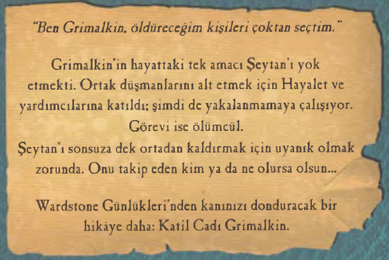

Grimalkin.
Bölgesini belirlemek ve yaklaşanları uyararak uzaklaştırmak için makas sembolünü ağaçlara kazır.
Hâlihazırda Malkin klanının katil cadı sı. Grimalkin’dir. Son derece hızlı ve güçlü olan bu katil cadının bazı prensipleri vardır: Asla hileye başvurmaz.
Zorlu rakipleri tercih eder. Her ne kadar onurlu bir yapısı olsa da Grimalkinin karanlık bir yanı da vardır ve işkenceye başvurduğu söylenir. Makasının çıkardığı tak tak seslerinden herkes korkar. Düşmanlarının etlerini kemiklerinden sıyırıp almak için bu makası kullanır. Grimalkin’in en sevdiği silah, uzun bıçaktır ve o aynı zamanda kendi silahlarını kendi yapan maharetli bir demirci ustasıdır.
(John Gregory’nin defterinden alınmıştır.)
HAYALET IN YARATIKLAR KİTABI
Önündeki düşmana iyice bak. Pörtlemiş gözlerini, kudurmuş hiddetini görebiliyor musun?
Peki ya kıllı göğsünü?
Teke gibi koktuğunu duyuyor musun?
Sakin ol. Neden korkasın ki? Kazanabilirsin.
Ne de olsa o sadece bir insan. Bana inanmayı öğren.
Benim adım Grimalkin.
Ormanın ortasına varınca ağır deri heybeyi omzumdan indirip yere bıraktım. Sonra diz çöküp heybenin ipini çözdüm. Ve içindeki şeyin leş gibi kokusuyla karşılaştım. Suratımı ekşitip yağlı, kir içindeki saçlarından kavradığım gibi onu heybeden çıkardım.
Ağaçların altı karanlıktı ve ayın doğmasına daha bir saat vardı. Fakat cadı görüşüne sahip gözlerim sayesinde karanlığa rağmen etrafı net bir şekilde görebiliyordum. Elimde tuttuğum şeye, yani Şeytan’ın başına baktım.
Bu korkunç bir görüntüydü. Etrafı göremesin diye göz kapaklarını dikmiştim; konuşamasın diye gül dikenleriyle kaplı iri, yeşil ve ekşi bir elmayı ağzına tıkmıştım. Düşmanıma iyi bakılmıştı; tam hak ettiği gibi. Kokuya rağmen ne başı ne de elma çürümüştü; ilki onun gücü, İkincisiyse yaptığım büyü sayesindeydi.
Heybeyi yere serip başı üzerine yerleştirdim, karşısına geçip bağdaş kurarak düşmanımı dikkatlice inceledim.
Her nasılsa kesildikten sonraki halinden daha ufak görünüyordu, ama yine de normal bir insan başının iki katı büyüklüğündeydi. Bedeninden ayrıldığı için sahiden küçülmeye mi başladı acaba, diye düşündüm. Alnından çıkan boynuzlar tıpkı koçlarınki gibi kıvrıktı; burnuysa kartal gagasını andırıyordu. Bu acımasız bir yüzdü ve gösterdiğim acımasızlığı hak ediyordu.
Bedenimi çepeçevre saran deri kayışlar, içinde silahlarımla aletlerimi taşıyan kınlarla kaplıydı. En küçüklerinden ince, keskin bir kanca çıkardım. Kancayı Şeytan’ın açık ağzına sokup yeşil elmaya sapladıktan sonra çevirip sıkıca çektim. Bir an için zorlandıysam da meyveyi ve beraberinde gül dikenlerini çıkarmayı başardım. Bu engelden kurtulan ağız yavaşça kapandı, içindeki kırık dişleri görebiliyordum: Hayalet ve Tom Ward’la birlikte Şeytan’ı bağlarken bu dişleri çekicimle ben kırmıştım. Bu anı öyle canlıydı ki zihnimde yeniden yaşadım.
Can düşmanım Şeytan’ı bağlamak ya da yok etmek için uzun süredir fırsat kolluyordum. Daha çocukken bile ondan tiksiniyordum. Klanımı kontrol altına almak için başvurduğu kurnazlıkları, cadılar meclisinin ona yaptığı dalkavuklukları görebiliyordum. Yıl boyu Cadılar Bayramı arifesini, yani onun ziyarete gelme olasılığının en yüksek olduğu günü iple çekerlerdi. Bazen yaktıkları ateşin tam ortasında belirirdi ve cadılar çıplak kollarını dağlayan alevlere aldırış etmeden, ellerini uzatıp onun tüylü gövdesine dokunmaya çalışırlardı.
Gitgide artan tiksintim içgüdüsel bir durumdu doğuştan gelen bir nefret ve harekete geçmediğim takdirde hayatımı zehir edeceğini, kara bir gölge gibi yaptığım her şeyin üzerinde dolaşacağını biliyordum. Zekiydi, kurnazdı ve hilebazdı; hedeflerine çoğu zaman yavaş yavaş ulaşırdı. Hepsinden öteyse günün birinde ona karşı gelen diğer cadılar gibi kölesi haline gelmekten korkuyordum. İşte buna dayanamazdım ve her ne pahasına olursa olsun buna engel olmak için bir şeyler yapmalıydım.
Ve tam olarak ne yapmam gerektiğini biliyordum: Bir cadının Şeytan’ı kendisinden uzak tutabilmesini sağlayacak kesin bir yöntem vardır. Bu son derece uç bir yöntem olsa da sonsuza dek ondan kurtulmasını sağlar. Şeytanla bir kez yatmalı ve ona çocuk vermelidir. Ardından çocuğunu dikkatle inceledikten sonra cadıya bir daha yaklaşmayabilir. Tabii cadı istemediği müddetçe.
Şeytanin çocuklarının çoğu insanat’ idi; Karanlığa ait, korkunç bir güce sahip, şekilsiz varlıklar. Bir kısmıysa güçlü cadılardı. Ama kötülüğün es geçtiği az, son derece az bir bölümü mükemmel insan bebekleri olarak dünyaya geliyordu. Karanlık bir varlık doğurma riskini aldığımı biliyordum ancak Şeytan’dan kurtulmak için buna değerdi.
Gerçekten de çok şanslıydım. Son derece güzel ve her bakımdan narin bir oğlan dünyaya getirdim.
Daha önce bir başka varlığa karşı bu denli yoğun bir sevgi beslememiştim. Oğlumun sıcaklığını tenimde duymak, kendini bana bıraktığını hissetmek mükemmeldi; hayal dahi edemeyeceğim ve kesinlikle hiç beklemediğim bir güzellikti. O küçük çocuk beni sevdi ve ben de onu; hayatta kalması bana bağlıydı ve kendimi ilk kez gerçek anlamda mutlu hissettim. Ama bu dünyada böyle mutluluklar nadiren uzun sürer.
Benimkinin sona erdiği geceyi iyi hatırlıyorum. Güneş henüz yeni batmıştı ve ılık bir yaz akşamı başlıyordu; ben de çocuğumu kucağıma alıp uyutmak için ninniler mırıldanarak kulübemin arkasında kalan duvarlarla çevrili bahçeye çıktım. Aniden gökte bir şimşek çaktı ve ayaklarımın altındaki toprağın kaydığını hissettim; hava buz kesti. Her ne kadar Şeytan’ın günün birinde ziyaretime geleceğini bilsem de artık bunun kaçınılmaz olduğunu fark edince kalbim korku içinde atmaya başladı. Bir yandan da seviniyordum, ne de olsa oğlunu gördükten sonra beni rahat bırakıp bir daha ziyaretime gelmeyeceğini biliyordum. Ondan sonsuza dek kurtulacaktım.
Daha önceleri Şeytan bana hep koyu kıvırcık saçlı, mavi gözlü ve içtenlikle gülümseyen yakışıklı bir genç adam kılığında görünmüştü. Ama pek çok şekle girebilir ve bu kez, Pendle cadılarının ‘Korku Majesteleri’ adını verdiği biçimde belirdi; bu, korkutmak ve dehşete düşürmek için kullandığı bir görüntüydü.
Bulunduğum yerin hemen yanında beliriverdi ve pis kokan nefesi, yüzüme öyle yakındı ki öğürmemek için kendimi zor tutuyordum. Kıvrık boynuzları ve sert, siyah tüylerle kaplı devasa gövdesiyle benim üç katım büyüklüğündeydi. Belirir belirmez öfkeyle kükreyerek kucağımdaki masum bebeğimi alıp yere çarpacakmış gibi havaya kaldırdı.
Lütfen! diye yalvardım. Ona zarar verme. Ne istersen yaparım, yeter ki bırak o yaşasın. Onun yerine benim canımı al!
Şeytan bana bakmadı bile. Nefret ve öfke doluydu. Çocuğumun narin başını bir kayaya çarptı. Sonra da ortadan kayboldu.
Uzun bir süre acıdan çılgına dönmüş bir halde yaşadım. Ve sonra uzun günlerle uykusuz geceler yavaşça gelip geçerken intikam düşünceleri beynimin kıvrımlarında dolaşmaya başladı. Acaba bu mümkün mü? diye sordum kendi kendime. Şeytan’ı yok edebilir miyim?
İmkânsız ya da değil, bu benim hedefim ve hayattaki tek amacım haline geldi.
Bu hedefimin bir kısmına bir ay kadar önce ulaştım. Şeytan yok olmuş değil ama en azından geçici de olsa bağlandı. Bunu yaşlı Hayalet John Gregory ve genç çırağı Thomas Ward sayesinde başarabildim. Şeytan’ı gümüş mızraklarla sıkıştırıp el ve ayaklarından derin bir çukurun kayalık tabanına çiviledik. Bedeni şimdi İrlanda’nın güneyindeki Kenmare’da gömülü.
Kazandığımız zaferi hatırladıkça keyifleniyorum. Şeytan elleriyle ayaklarının üzerinde yere çömelmiş, çılgına dönmüş bir boğa gibi acı içinde böğürerek başını iki yana sallayıp duruyordu. İlk çiviyi sol eline saplayıp çekiçle üç kez vurarak o kıllı, devasa elini kayaya yapıştırdım. Ama onu bağlamak için öyle acele ediyordum ki dikkatsiz davrandım ve o an ölüme çok yaklaştım.
Başını çevirip ağzını iyice açarak başımı gövdeden koparmak istercesine öne atıldı. Fakat o ölümcül çeneden sakınmayı başardım ve çekici suratına savurarak ön dişlerini darmadağın ettim. Çok az şey bana bundan daha fazla keyif vermiştir.
Sonrasında Tom Ward ona İrlanda’nın en efsanevi kahramanlarından Cuchulain’in verdiği Kader Kılıcı’nı havaya kaldırdı, iki öldürücü darbeyle Şeytan’ın başını boynundan ayırdı ve işte o kesilen başı da ben aldım.
Bedeniyle başı ayrı olduğu sürece Şeytan bağlı kalacaktır. Ne var ki kötücül hizmetkârları her daim peşimdeler. Başı bedene geri götürüp çivilerle gümüş mızrakları çıkararak O’nu bir kez daha serbest bırakmak istiyorlar.
Ben de onlara engel olabilmek için sürekli hareket halindeyim. Böylelikle Hayalet ve çırağı, Şeytan’ın nasıl tamamen yok edilebileceğini ya da Karanlığa geri gönderilebileceğini bulmaya çalışırlarken vakit kazanıyorum. Ama sonsuza dek bu şekilde kaçamam ve gücüm sınırlı. Hem benim doğamda kaçmak değil, savaşmak var. Oysa bu mücadeleyi kazanmamın mümkünü yok; sayıca çok fazlalar ve Malkin klanının katil cadısının dahi başa çıkamayacağı kadar güçlüler.
Sana hükmetmek güzel! dedim Şeytan’a önünde otururken.
Kesik baş bir süre sessiz kaldıktan sonra ağzı yavaşça açıldı ve çenesinden aşağıya kanla karışık salyalar akmaya başladı.
Gözlerimi aç! diye kükredi tok bir sesle. Dudakları oynuyordu fakat kelimeler sanki başın altındaki topraktan yükseliyor gibiydi.
Bunu neden yapacakmışım? diye sordum. Görebiliyor olsaydın hizmetkârlarına nerede olduğumu söylerdin. Hem senin acı çekmeni izlemek benim için büyük bir keyif. Asla kazanamazsın cadı! diye homurdandı kırık dişlerini göstererek. Ben ölümsüzüm; zamanı bile alt edebilirim. Günün birinde öleceksin ve ben seni bekliyor olacağım. Bana yaptıklarının cezasını misliyle ödeteceğim. Seni ne tür işkencelerin beklediğini hayal dahi edemezsin. Dinle aptal! dedim. Beni iyi dinle! Ben ne geçmişte kalan yenilgileri dert edinirim ne de geleceği gereğinden fazla düşünürüm. Ben ‘şu anın’ yaratığıyım ve şimdiki zamanda yaşarım. Ve sen de şu anda kapana kısılmış vaziyette benim yanımdasın. Şu anda acı çeken sensin. Benim hükmüm altındasın!
Güçlüsün cadı, dedi Şeytan usulca, ama peşinde senden daha güçlü ve ölümcül bir şey var. Günlerin sayılı. Aniden her şey derin bir sessizliğe gömüldü. ‘Zaman’ hakkında konuşmak, daha önce heybeden çıkardığım anlarda denemeye kalkışıp başaramadığı şeyi bir kez daha denemeye itmişti onu. Zamanı yavaşlatma ya da durdurma becerisine sahipti. Tabii başı bedeninden ayrıldığı için güçleri sınırlıydı, fakat ben yine de işimi şansa bırakmayarak dikenlerle çevrili elmayı ağzına tıkıştırdım.
Şeytan’ın yüzü kasıldı. Dikili gözkapaklarının altında acı içinde dönüp duran göz bebeklerini görebiliyordum. Ama rüzgârın başımın üzerindeki yaprakların arasından fısıldayarak geçmeye başladığını duydum. Zaman akıyordu. Tehlike geçmişti.
Başı deri heybeye geri koyup çöken yoğun karanlığa bakıp odaklandım. Havayı şöyle bir koklayınca buranın hâlâ yeterince güvenli olduğunu anladım. Bulunduğumuz tepenin zirvesini çevreleyen korulukta tehlikeli bir şey yoktu ve o açıdan burası harika bir yerdi. Düşmanlarım fark ettirmeden bana yaklaşamazdı.
Peşime düşenlerin sayısı artmaya başlamışken akşamüzeri geç vakit onları atlatmayı başarmış ve çok geçmeden arta kalan o çok değerli büyü gücümü kullanarak kendimi gizlemiştim. Şimdi neredeyse gece yarısı olmak üzereydi ve burada şafak sökünceye kadar uyuyup gücümü toplama niyetindeydim.
Çok geçmeden bir tehlike sezinleyip aniden uyandım. Peşimdekiler tepeyi tırmanarak bulunduğum yere doğru geliyorlardı ve koruluğu kuşatmak üzere etrafa dağılmışlardı.
Bu nasıl olabilirdi? Kendimi iyi gizlemiştim; beni burada bulamamaları gerekirdi. Ayağa fırladığım gibi deri heybeyi omzuma vurdum.
Çok uzun süredir koşuyordum. En sonunda savaşma vakti gelmişti. Bu düşünce kendimi iyi hissettirdi; yakın dövüş beklentisi bende hep bu etkiyi yapardı. Bunun için yaşıyordum: Gücümü düşmanlarımın gücü karşısında sınamak; dövüşmek ve öldürmek için.
Kaç yaratık vardı? Parmağımı boynumda asılı kolyeden sarkan başparmak kemiklerinin arasında gezdirerek büyülü güçlerini kendime çektikten sonra zihnimle önümde uzanan karanlığı taradım.
Dokuz taneydiler. Havayı üç kez üst üste koklayıp daha fazla bilgi edinmeye çalıştım. Geride neredeyse bir kilometre ötede daha başkaları da vardı; bu tarafa doğru yaklaşan yirmi hatta daha fazla yaratık. Bir şey aklımı karıştırınca yeniden havayı kokladım. Daha kalabalık olan gruba yeni bir varlık eklenmişti. Tanımlayamadığım biri ya da bir şey. Tuhaf bir şey. Ne olabilirdi?
Peşinde senden daha güçlü ve ölümcül bir şey var.
Şeytan böyle demişti. Yoksa bunu mu kastediyordu?
Öyle bile olsa o daha kalabalık olan grup şimdilik unutulabilirdi. Öncelikle daha yakın tehlikeyle ilgilenmem gerektiğinden dokuz kişilik grubun ne tür bir tehdit teşkil ettiğini değerlendirmeye başladım.
İçlerinden yedisi cadıydı. İçlerinden en az biri, en üst seviyeydi ve hizmetçi cin büyüsü kullanıyordu. Beni bu şekilde bulmuş olabilirlerdi. Cadıların hizmetçi cinleri bir kurbağadan tutun da kartala kadar her şekle bürünebilir. Her ne kadar kontrol etmeleri çok güç olsa da bir zamanlar Karanlığa ait çok güçlü birer yaratıktılar. Yani hizmetçi cin yaptığım gizleme büyüsüne rağmen yerimi tespit etmiş olabilirdi.
Tepeyi tırmanan grubun içinde bir insanat olduğunu da anlayabilmiştim; grubun sonuncu üyesinin kara büyücü bir erkek olduğunu da.
En az direniş göreceğim yolu seçmem benim için daha iyi olacaktı. Cadılardan ikisi acemiden hallice gençlerdi. Tam onların bulunduğu noktadan geçerek çemberden kaçıp karanlığa karışabilirdim. Ama benim yöntemim bu değildi. Onlara kim olduğumu hatırlatmalıydım. Peşime düşen tüm yaratıklara benim Malkin klanına mensup Katil Cadı Grimalkin olduğum mesajını iletmeliydim. Öyle uzun süre boyunca kaçmıştım ki bana olan saygıları azalmıştı. Onlara korkmayı yeni baştan öğretmem gerekiyordu. Böylece tepeyi tırmanan düşmanlarıma seslendim.
Benim adım Grimalkin ve hepinizi öldürebilirim! diye bağırdım. Fakat yalnızca üçünüzü öldüreceğim; en güçlü olan üçünüzü!
Yanıt gelmedi ama her şey sessizliğe gömüldü. Bu önceki sessizlikti. Bense fırtınaydım.
Şimdi iki bıçak çekiyorum. Sol elimde yakın dövüşte kullandığım uzun bıçak; sağ elimdeyse fırlatma bıçaklarından biri var. Düşmanlarım ağaçların arasına girmeye başladığından tepe boyunca aşağı doğru ilerleyerek onlara yöneliyorum. Önce büyücüyü öldüreceğim; sonra insanatı ve son olarak da aralarında en güçlü olan cadının hizmetçi cinini.
Ses çıkarmamaya özen göstererek yavaşça ilerliyorum. Düşmanlarımdan bazıları ya bunu yapamayacak kadar beceriksizler ya da dikkat etmiyorlar. Duyma yetim son derece gelişmiş durumda ve ara ara uzaktan gelen bir dal kırılma sesini ya da otların arasında ilerleyen uzun eteklerin çıkardığı hışırtıyı duyabiliyorum.
Büyücünün yukarısında bir konuma ulaşınca durdum. O yalnızca bir insan olduğundan içlerinde alt etmesi en kolayı olacak. Öyle bile olsa yaklaşmakta olan altı cadıdan çok daha güçlü olduğuna hiç şüphe yok. Bir katil cadı rakibini asla küçümsememelidir. Onu hızlıca öldürüp bir sonrakine geçeceğim.
Sivri, metal bir yay gibi katlanıp saldırıya odaklanarak karanlığın içinde keskin gözlerimle büyücüyü arıyorum. Genç bir erkek, fakat büyüleri kuvvetli olsa da fiziksel anlamda kondisyonu zayıf ve tepeyi tırmandığı için nefes nefese kalmış durumda.
Harekete geçiyorum. Bayır aşağı üç seri adım atıp hızımı kesmeden fırlatma bıçağımı atıyorum. Büyücünün tam kalbine isabet ediyor ve adam bağıramadan ölüp geriye doğru devriliyor. Savunma büyüleri gerçekten yetersizmiş.
Bir sonraki hedefim insanat. İri yarı, geniş aralıklı gözleri ve üst dudağından fırlayan sivri, sarı dişleri var. Bu yaratıklar Şeytan’ın bir cadıdan olma çocukları son derece güçlü olurlar. Bu nedenle işlerini fazla yaklaşmadan bitirmek gerekir. Onlar tarafından yakalanmak paramparça edilme riski barındırır. Her daim acımasız ve mertlikten yoksun olduklarından her an her şeyi yapabilirler. Benim çocuğum böyle kötücül bir yaratık olsaydı onu doğar doğmaz öldürürdüm.
Yaratığa doğru son hız koşarken deri kınından yeni bir fırlatma bıçağı çekip alıyorum. Atışım isabetli ve normal şartlar altında yaratığı boynundan haklayabilirdim. Fakat koruma altına alınmış. Cadılar onu güçleriyle sarmalayıp bıçağımı sektiren bir kalkanla çevrelemişler. Bıçak işe 18 yaramaz bir şekilde sekiyor ve insanat bir elinde kaim bir sopa, diğerinde kancalı bir mızrak, kükreyerek üzerime atılıyor. Sopayı savurup mızrağı saplamaya çalışıyor. Fakat daha yanıma gelemeden harekete geçiyorum.
Yönümü değiştirirken ağır heybe sırtıma çarpıp duruyor. Sonra uzun bıçağımı kullanarak insanatın boğazını kesiyorum ve yaratık boğazından kan fışkırırken hırıldayarak yere yığılıyor. Hız kesmeden koşmaya devam ediyorum.
Şimdi sıra üçüncü düşmanda: hizmetçi cinde.
Saat yönünün tersine çaprazlamasına koşarak daha ölümcül olan sol kolumu bayıra ve hâlâ tepeyi tırmanarak bana doğru yaklaşan cadılara veriyorum. İçlerinden biri saldırıyor fakat bu beklediğim cadı değil. Kılıcımın kabzasıyla yüzüne vurunca gerisingeri yere yığılıyor. Yaşayacak ama ön dişleri olmadan.
Artık daha güçlü olan hizmetçi cin saldırıya geçtiğimi hissedip bana dönerek kara büyülerini zehirli mızraklar gibi kalbime doğru savurmaya başladı bile. Onları savuşturup dosdoğru üzerine koşuyorum. Kanat çırpışları duyuyorum ve bir şey pençelerini öne doğru uzatmış vaziyette yüzüme pike yapıyor. Bu ufak bir şahin. Kılıcımı yukarı doğru savurunca kuş çığlık atarak bir kan topu gibi üzerime düşüyor.
Hizmetçi cini ölen cadı çığlık atıyor; kılıcımla onu kestiğimde bir çığlık daha atıyor. Bir sonraki darbemle canını alıyorum ve bayır aşağı hızlanarak ağaçların arasından çıkarken artık yalnızca kendi ayak sesimle soluk alıp verişimi duyuyorum.
Doğuya doğru koşarak koruluktan çıkıp düşmanları ölüleriyle baş başa bırakıyorum. Koşarken bir yandan da olanları düşünüyorum. Bir katil cadı hem başarılarını hem de başarısızlıklarını değerlendirmelidir; geçmişinden sürekli ders çıkarmalıdır.
Beni nasıl bulmuş olabileceklerini düşünüyorum. Cadı güçlüydü, ama hizmetçi cini yalnızca ufak bir şahindi. Büyülerini birleştirseler dahi kendimi çevrelediğim büyülü örtünün ötesini görmelerine imkân yoktu. Hayır, başka bir şey olmalı.
Peki ya uzakta kalan daha kalabalık gruptaki tuhaf yaratık? O neydi? Yoksa yerimi bulan o muydu? Eğer öyleyse gerçekten güçlü olmalı. Daha önce hiç karşılaşmadığım bir şey olabilir mi? Yeni bir yaratık.
Bilinmeyene karşı tetikte olmanın faydası vardır. Bu bilinmezlik onu tehlikeli kılar. Ama çok geçmeden ölecek. Beni yenmeyi nasıl umabilir ki?
Benim adım Grimalkin.
Söken şafakla gökyüzü grileşerek toprağa serin bir çisenti bıraktı. Bir saat kadar sonra aynanın hareket ettiğini hissettim. Agnes irtibata geçmeye çalışıyordu. Büyükçe bir ağacın altında durup aynayı çıkarınca cadının yüzünü karşımda buldum. Dolgun yanakları ve tombul çenesiyle oldukça dostane bir yüzdü bu, ama cesur ve yabana atılmayacak bir kadın olduğunu anlamanız için gözlerine bir kez bakmanız yeterdi.
Sowerbutts, Deane’lerin yaşadığı köy olan Roughlee’den ayrılıp Whalley’li bir adamla evlenmişti. On yıl sonra kocası ölünce evine dönmüş, fakat bu kez Roughlee’nin yakınlarında bir kulübede yaşamaya başlamıştı. Her ne kadar klanla arasındaki mesafeyi korumaya özen gösterse de yaptıkları her şeyden haberdardı. Pendle’da olup da Agnes ve aynasından kurtulabilen pek bir şey yoktu.
Belli belirsiz gülümsedi, ancak daha konuşmasına başlamadan gözlerinde beni uyarmaya çalışıyormuş gibi bir bakış belirdi. Haberler iyi değildi. Odaklanıp bana söylediklerini anlamak için dudaklarını okumaya başladım.
Peşindeki bir ‘korşak’. Cadılar, insanatlar ve büyücülerden oluşan bir ittifak tarafından yalnızca peşine düşüp seni öldürmesi için yaratıldı. Annesi bir dişi kurt, babası bir ecinni.
Ecinninin adını görebiliyor musun? diye sordum.
Bu bilgi hayati önem taşıyordu. Ne tür güçlere sahip olduğunu bilmeliydim. Kurda benzeyeceği belliydi, fakat babasından ona geçen becerilerin de önemi büyüktü. Benim klanım Malkinler de daha önce birçok kez korşak yaratmıştı. Bunlar genellikle belirli bir amaç için yaratılıyordu. Peşimdekinin amacı da beni öldürmekti.
Agnes başını iki yana salladı. Üzgünüm. Bu bilgiyi güçlü bir büyü kalkanı koruyor. Ama denemeye devam edeceğim.
Evet, bunu yaparsan minnettar olurum. Peki, kehanet gücünü de kullandın mı? Bu korşak denen yaratıkla yapacağım dövüşün sonucu ne olacak?
Vakti gelmeden dövüştüğün takdirde ölümcül bir yara alacaksın. Bu kadarı kesin, dedi Agnes ciddi bir yüz ifadesiyle.
Peki ya bu karşılaşmayı geciktirirsem?
O zaman sonuç daha belirsiz. Fakat zaman geçtikçe hayatta kalma şansın da artıyor.
Ona teşekkür edip aynayı yerine yerleştirdikten sonra korşağın önündeki konumumu korumaya çalışarak koşmaya başladım. Koşarken bir yandan da Agnes’in söylediklerini düşünüyordum. Bunun bir korşak oluşu, benim ‘kaçabildiğim kadar kaçmak’ gerektiği düşüncemi pekiştiriyordu. Çünkü bu tür yaratıkların ömrü çok kısadır, yani çok hızlı yaşlanırlar. O zaman neden onunla daha genç ve gücü yerindeyken dövüşeyim ki? Şeytan’ın başını hizmetkârlarının ellerinden uzak tutmam gerekiyordu. Bu, benim düşmanlarımla dövüşme güdümden çok daha önemliydi.
Kehanetin gücüne inanıyordum inanmasına, fakat her zaman kesin bilgiler veremeyebilirdi. Hatta bazen nadiren de olsa hatalı olabilirdi.
Martha Ribstalk’la ilk görüşmemizi anımsadım. Onun kehanet için tercih ettiği düzenek ayna yerine başparmak ve parmak kemiklerinin kanla karıştırılarak kaynatıldığı büyük bir kazandı. O dönemde bu, kara büyünün rağbet gören bir uygulamasıydı.
Daha önce anlaştığımız üzere bir gece yarısı ziyaretine gittim. Düşmanlarından birinin kanını içip gerekli ritüelleri yerine getirmişti bile.
Paramı kabul edecek misin? diye sordum.
Bana küçümseyici bir bakış attıysa da başını evet anlamında sallayınca kazana üç altın attım.
Sertçe, Otur! diyerek kaynayan kazanın yanındaki soğuk, taş döşemeyi işaret etti. Havada ağır bir kan kokusu vardı ve aldığım her nefesle birlikte dilimdeki metalik tat artıyordu.
Dediğini yapıp yere bağdaş kurarak yükselen dumanların arasından ona baktım. Kazanın arkasındaki yerinden ayrılmadığı için benden daha yüksekte duruyordu ve bu, karşısındakiler üzerinde hâkimiyet sağlamaya çalışanların sıklıkla başvurduğu taktiklerden biriydi.
Ancak ben korkmadım ve sakin bir şekilde bakışlarına karşılık verdim. Ne gördün? diye sordum. Geleceğimde ne var?
Uzun bir süre konuşmadı. Beni bu şekilde bekletmek hoşuna gidiyordu. Sanırım kehanetin bitmesini beklemek yerine ona bu şekilde bir soru yönelttiğim için sinirlenmişti.
Bir düşman seçmişsin. dedi en sonunda. Şeytan, ölümlülerin yüzleşebileceği en güçlü düşmandır. Bu işin sonu basit. Yaşarken sen istemediğin müddetçe Şeytan yanma yaklaşamaz, ama ölmeni bekliyor olacak ve öldüğünde ruhunu ele geçirip sonu gelmeyen işkenceler çektirecek. Fakat tam olarak göremediğim başka bir şey daha var.
Bir belirsizlik. Başka bir güç araya girebilir; az da olsa umut vadeden bir güç.
Duraksayıp öne doğru bir adım atarak yükselen dumanların arasına baktı. Bir uzun bekleyiş daha. Biri var. yeni doğmuş bir çocuk.
Kim bu çocuk?
Tam olarak göremiyorum, diye itiraf etti Martha Ribs talk. Onu benim görüşümden gizleyen biri var. Ve sana gelince, onun devreye girmesine rağmen yalnızca silah kullanma konusunda üstün beceriye sahip olan biri katil cadılara özgü hız ve acımasızlığa sahip ve katil cadıların arasında da en kudretli olanı bunu yapabilir. Daha azı işe yaramaz. Bu durumda senin umudun var mı? diyerek alay etti Martha.
O dönem Malkinlerin katil cadısı, muazzam bir güç ve hıza sahip, hüküm sürdüğü son on yıl içinde her yıl yerine göz diken üç kişiyi, toplam yirmi yedi kişiyi öldürmüş olan Kernolde adında dehşet saçan bir kadındı.
Ayağa kalkıp Martha’ya gülümsedim. Kernolde’ı öldürüp onun yerini almakla kalmayacağım, gelmiş geçmiş en güçlü katil cadı olacağım.
Ben oradan uzaklaşırken Martha alaycı bir şekilde gülüyordu, oysa ben son derece ciddiydim. Şeytan’ı alt edebilmek için kendi dövüş becerilerimi geliştirmem ve Malkin klanının cadısı olmam gerektiğini biliyordum. Ve sonra şu gizemli çocukla bir ittifak kurmam gerekiyordu.
Zaman içinde adını öğrendim:
Tom Ward.
Acele ederek hızımı düşürmemeye gayret ettim. Çisenti artık şiddetli bir sağanağa dönüşmüş, yüzümü döverek üstümü başımı sırılsıklam etmişti.
Koşarken bir yandan da kehanet hakkında düşünüyordum. Cadılar genellikle ayna kullanır, ama bazıları derin translara girer, kimisi de geleceği rüyalarında görür. Bazıları kuzey rüzgârına doğru kemik fırlatarak nereye düşeceğine bakar. Ölü bir hayvanın karnını deşip iç organlarını inceleyenler de vardır. Ama kâhinler her ne derse desin geleceği bilmek söz konusu oldu mu belirsizlik her daim vardır. Şans faktörü de öyle. Her şey öngörülemez. Ve cadılar asla kendi ölümleriyle ilgili bir şey göremez; bunu bir başka kâhin yapmalıdır.
Martha Ribstalk’tan hoşlanmasam da kâhinlikte çok iyiydi ve o ilk seanstan sonra ona pek çok kez daha gittim. Son görüşmemizde ne zaman ve nasıl öleceğime dair bir kehanette bulundu; uzun yıllar sonra olacağını ama bu bilgiye güvenmemem gerektiğini söyledi. Zamanın pek çok patikası vardır; belki de bu kehanetini haksız çıkaracak bir yola çoktan sapmışımdır.
John Gregory ve Thomas Ward’la güç birliği oluşturdum. Karanlık’la mücadele edip Şeytan’ı yok etmek için kendi karanlık güçlerimi kullanmaya karar verdim. Bu her şeyi değiştirebilirdi.
Artık gitgide yavaşlayarak tırmanıyordum. Bir vadi sırtına varıp peşimdekilerin geldiği yöne baktım. Korşak beni ufukta göremesin diye iyice eğilmiştim ve onu ilk kez görmek için sabırsızlanıyordum.
Çok beklemem gerekmedi. Düşmanlarımın yarattığı bu canavarın çınar ağaçlarının arasından belirip bir çukurun üzerinden atladıktan sonra çalıların arasında gözden kaybolduğunu gördüm. Onu yalnızca bir saniyeliğine gördüm, fakat son derece tehlikeli ve güçlü bir yaratıkla karşı karşıya olduğumu anlamama yetti.
Uzaktan, tıpkı düşündüğüm gibi, dev bir kurda benziyordu. Tam büyüklüğünü kestirmek imkânsızdı. Dört ayağının üzerinde uzun adımlarla koşuyordu ve sırt kısmı gümüş tüylerle kaplı simsiyah bir postu vardı. Ancak sonra ön ayaklarının son derece güçlü ve kaslı birer kol olduğunu gördüm. Yaratık benimle dövüşüp beni öldürmek üzere tasarlanmıştı. Hakkındaki her detay tek bir amaca hizmet ediyordu: benim ölümüm.
Yakın dövüşte son derece güçlü ve hızlı olmalıydı. Insanatlarınkini andıran kollarıyla kemiklerimi kırabilir, kol ve bacaklarımı koparıp alabilirdi. Dişleri ve pençeleri de zehirli olsa gerekti. Tek bir ısırık, hatta bir çizik dahi yavaş ve acı verici bir şekilde ölmeme neden olabilirdi. Belki de Agnes Sowerbutts ‘ölümcül bir yara’ derken bunu kastediyordu.
İçgüdülerim durup dövüşmemi ve bu işi bir an önce halletmemi söylüyordu. Gurur da aynı şeyi yapmam için yalvarıyordu. Bu yaratıkla dövüşerek gücümü sınamak istiyordum. Ondan ve beni öldürmek üzere peşime takabilecekleri tüm yaratıklardan daha güçlü ve daha iyi olduğumu göstermek istiyordum.
Ah, Bay Kurt! Ölmeye hazır mısın?
Fakat burada söz konusu olan şey, benim hayatım ve gururumdan çok daha önemliydi. Savaşta şans çoğu zaman önemli bir rol oynar. Otların arasında gözümden kaçan bir taşa takılarak bileğimi burkabilirim; benden çok daha beceriksiz bir düşmanım şanslı bir vuruş yapabilir. Daha önce pek çok Malkin cadısı, kendilerinden çok daha güçsüz düşmanlar tarafında bu şekilde öldürüldü. Koşullar ne olursa olsun yenilmemin imkânsız olduğunu düşünüyordum, ama eğer kaybedecek olursam Şeytan’ın başı düşmanlarımın eline geçecek ve Şeytan çok geçmeden bu dünyada bir kez daha hükümdar olacaktı.
Şeytan’ın başını onun hizmetkârlarından uzak tutmaya ant içmiştim, bu yüzden savaşa susamış olmama rağmen kaçabildiğim kadar kaçmaya devam edecektim.
Bak, kan kaybediyorsun! Hatta belki ölümün yakın.
Korkunç bir acı.
Şimdi düşmanın sana yaklaşıyor, canını almaya hazır.
Bu her şeyin sonu mu? En sonunda yenildin mi?
Hayır! Daha dövüşmeye yeni başladın!
Bana inanın, çünkü biliyorum.
Benim adım Grimalkin!
Koşarken seçeneklerimi bir kez daha gözden geçirdim.
Ne yöne gitmeliydim? Şimdiye dek yola plansız devam etmiştim.
İrlanda’yı bir uçtan diğerine kat eden dolambaçlı ve uzun bir yolu takip ettikten sonra ulaştığım doğu kıyısında yalnız bir balıkçıyı tehdit ederek deniz yoluyla Eyalet’e geçmiştim. Bu yolculuktan sonra çoğu Pendle cadısı, adamı öldürüp kanını ya da başparmak kemiklerini alırdı. Fakat içlerinde en tehlikelisi olan ben, balıkçının hayatını bağışlamıştım.
Acı verici bir ölüme bir daha asla şu son birkaç saattir yakın olduğun kadar yakın olmayacaksın, dedim Eyalet’in kıyısına çıkarken. Ailene dön. Uzun ve mutlu bir hayat sur.
Neden böyle davranmıştım? Düşmanlarım bunu bir zayıflık, yumuşamaya başladığımın ve yerimin tartışılır hale geldiğinin yani Malkin klanının katil cadısı olmayı hak etmediğimin bir göstergesi olarak yorumlardı. Benim kadar sık insan öldürmen gerektiğinde can almak bir süre sonra sizi yorar. Özellikle de kolay olanlar. Üstelik adam yalvardı. Bana karısıyla küçük çocuklarından ve onları açlıktan kurtarmak için verdiği mücadeleden söz etmişti. Söylediğine göre o olmazsa ailesi ölürdü. Bu yüzden canını bağışlayıp yoluma devam ettim.
Şimdi nereye gitmeliydim? Kuzeye, saldırgan su cadılarının yaşadığı bölgeye doğru gidip tepelerle göllerin arasından geçebilirdim, fakat bu yapışkan kalabalık Şeytan’ın sıkı destekçisiydi. Güney de bir başka seçenekti, ama orada da beni başka bir tehlike bekliyordu. Eyalet’i istila eden askerler daha yenice güneye püskürtülmüştü. Onlara doğru gitmek aptallık olurdu.
Evet, Şeytan’ın başını hizmetkârlarından uzak tutmak için en iyi yol durmadan hareket etmekti, ancak dinlenmeye de ihtiyacım vardı ve düşmanlarımın tahmin edemeyeceği yalnızca tek bir yer vardı. Pendle’a, klanımın memleketine dönebilirdim. Orada beni bekleyen hem dost hem de düşmanlar vardı. Bazı cadılar Şeytan’ın dünyada kol gezdiğini görmekten keyif alırdı; bazılarıysa onun yok olmasını ve Karanlığa geri dönmesini istiyordu. Evet, Pendle’a gidecektim; gücümü toplayıp büyü kaynaklarımı arttırırken bir yandan da saklanıp dinlenebileceğim tek yere. Bir zamanlar klanımın sığınağı olan Malkin Kulesi artık iki vahşi lamia cadısının Tom Ward’un ölen annesinin kız kardeşleri kontrolündeydi.
Beni içeri alırlar mıydı? Onları sığmaklarını benimle paylaşma konusunda ikna edebilirdim, ne de olsa onlar da Şeytan’ın düşmanıydılar.
Denemeye değeceğini düşünerek yön değiştirip Pendle’a doğru koşmaya başladım.
Ancak daha oraya varmama çok varken önce korşakla dövüşmem gerekeceğinin farkına vardım. Başka çarem yoktu. Dönüp düşmanla yüzleşmek, arkadan saldırıya uğramaktan daha iyiydi. Zaten kaçmak gibi bir seçeneğim yoktu; yaratık artık yüz elli metre kadar gerimdeydi ve arayı hızla kapıyordu.
Yakın dövüş fikri kalbimin daha hızlı çarpmasını sağladı. Bunun için soluk alıp veriyordum.
Ufak bir yükseltinin tepesinde durup arkama baktım. Korşak aşağıdaki dar vadiyi yenice geçmiş, bayır yukarı tırmanmaya başlıyordu; postu sırılsıklamdı. Göz göze geldiğimizde bakışlarında sabırsızlıktan daha fazlasını gördüm. Dişlerini tenime geçirip etimi koparmak ve kemiklerimi çiğnemek için can atıyordu. Hayattaki tek amacı buydu ve mücadeleden galip çıkma ihtiyacı, dövüşümüze ayrı bir tat katacaktı.
Heybeyi yere koydum. Onu bir an için bile gözümün önünden ayırmak istemiyordum fakat sırtımda bir ağırlık olmazsa daha iyi dövüşebilirdim. Artık her şeyi doğru yapmalı, tüm yeteneğimi sergilemeliydim. Saldırım kusursuz olmalıydı. Yakın dövüş becerilerimin yanı sıra, büyü yapmaya da ihtiyacım olacaktı.
Boynumdaki kolyeye uzandım ve soldan sağa üzerindeki her başparmak kemiğine tek tek dokunmaya başladım. Rahipler ettikleri duaları sayabilmek için tespih tanelerini sayar; benim ayinimse kemiklerde saklı gücü bedenime çekerken bir yandan büyü mırıldanmak. Bu kemiklerden her biri savaşta öldürülen düşmanlardan alınan bir yadigârdı. Üzerlerindeki deri rahatça soyulabilir hale gelinceye dek özenle kaynatıldılar.
Başlangıç, yani kurma büyülerinin hassas bir ses uyumuyla hiç hata yapmadan tekrarlanmaları gerekir. Tümü doğru bir şekilde yapıldığı takdirde kemikler kazanın yüzeyine çıkıp fokurdayan köpüklerin arasında sanki dışarı atlamaya çalışıyormuşçasına dönüp durmaya başlar. Kaynar suyun verdiği acıya rağmen her biri, yere düşürmemeye dikkat edilerek elle tek tek toplanır. Sonra ortalarında bir delik açılır ve kolyeye takılır.
Düşmanın gücü arttıkça kemiğin içinde sakladığı kudret de artar. Ama bu sonlu bir kudrettir. Kemiğin gücü tamamen çekildiğinde yenilenmesi gerekir.
Önce Janet Fox’un kemiğine dokundum; güçlü bir kadındı ve batan güneşin altında iki saat mücadele etmiştik. Geriye kalan gücünün tamamını çektim; artık ona ait kemiklerin yenilenmesi gerekecekti. Lydia Yellowtooth’un kemiklerindeki gücü tamamen bitirmedim. Kurnaz bir dövüşçüydü; bu kurnazlığa şimdi ihtiyacım olacaktı, fakat yine de bir miktarını daha sonraya bıraktım. Böyle böyle kemikleri parmaklarımın arasında evirip çevirmeye devam ettim. En sonunda ihtiyacım olanı bulmuştum.
Hazırdım.
Korşağa doğru var gücümle koşuyorum. Mantıklı yanım, zihnimin sürekli hesap kitap yapan tarafı, bu mücadeleyi kazanmamın ne kadar güç olacağına dair beni attığım her adımla birlikte uyarıyor. Yaratık, tahminimden çok daha iri. Her ne kadar uzaktan bir kurdu andırsa da cüssesi ufak bir at kadar. Sivri pençeli ellerle sonlanan uzun ve kaslı kollarının yanı sıra kıllı bedeninin etrafında ufak kesecikler var. Bunlar deri kayış ya da km değil; kendi etinden oluşmuş keseler ve içlerinde birtakım silahlar var.
Ama bende savaşçı içgüdüleri ve muazzam bir özgüven var. Şartlar ne olursa olsun ben kazanacağım. Benim adım Grimalkin!
Hız kesmeden kalbimi durduruyorum. Bu, uzun yıllardır üzerinde çalıştığım bir beceri. Kan akışım azalıyor: nişan alırken elimi titretecek hiçbir şey yok. Küçük bıçaklarımdan birini kınından çekip dosdoğru yaratığın başına fırlatıyorum.
Atışım isabetli ve hedefi vuruyorum. Fakat bıçak yaratığın kaim derisine saplanmak yerine tüylü başından aşağıya kayıp uzun otların arasında gözden kaybolunca öfkeleniyorum. Metal bir miğfer bile bundan iyi koruma sağlayamazdı.
Sonra kara tüylerinin arasından kan sızmaya başladığını görüyorum. Demek derisini kesmeyi başardım, fakat kaim kafatası güçlü bir miğfer işlevi görmüş olsa gerek.
Bedeninin geri kalanında benzer bir zırh var mı acaba? Bu parlak tüylü, esnek yaratığın akıcı ve zarif ilerleyişi bana aksini söylüyor. Zayıf noktaları olmalı. Onları bulacağım ve bu yaratık ölecek.
Böylece bedenini test etmeye başlayarak ikinci bıçağımı böğrüne savuruyorum. Bıçak hızlı hareketlerle kıvrılan yaratığı ıskalıyor. Kalbimin atmaya başlamasına izin veriyorum.
Şimdi korşak farklı bir açıdan üzerime geliyor. Hâlâ hızla ileriye doğru koşuyorum ve uzun bıçağım sol elimde; yakın dövüşte bu bıçağı kullanıyorum.
Her hareketim korşakta karşılığını buluyor ve yaratık da omzundaki heybeden uzun bir bıçak çekiyor. Sol elini kullanıyor. Sağ elinin pençeleri de saldırıya hazır. Ancak ben ne yapmam gerektiğine karar verdim bile. Bu mücadeleyi hızla nasıl kazanıp Şeytan’ın başıyla kaçışıma devam edebileceğimi biliyorum.
Birbirimizin üzerine atılarak şiddetli bir şekilde çarpışmaya başlıyoruz; korşak hırlayarak sivri dişlerini gösterip bıçağını başıma doğru savuruyor. Nefesinin ekşimiş kokusu burun deliklerime dolarken eğilip kayarak bıçağın altından geçiyorum. Islak bayır aşağı tüylü bedeninin altından kayarken, bıçağımı sağa sola savurup arka ayaklarının topuk kirişlerini kesiyorum.
Yaratık acı içinde bağırıp kanlar içinde otların üzerine yığılıyor. Ama ben çoktan yuvarlanarak uzaklaşıp tepe boyunca heybeye doğru koşmaya başladım bile. Heybeyi yeniden omzuma attığım gibi yüzüme yayılan zafer gülümsemesiyle birlikte bayır aşağı inmeye başlıyorum. Yaratık çaresizlik içinde uluyup güçlü kollarıyla bayırı tırmanmaya çabalıyor.
Ah, Bay Kurt! Sakatlandın mı?
Arka ayakları işe yaramaz bir vaziyette arkasından sürükleniyor. Artık bu şekilde beni yakalayabilmesinin imkânı yok. Bu yaratığı yaratanlar onu bulup acısına son verecektir. Başardığım şeyden hoşnudum, fakat daha zorlu bir mücadele bekliyordum. Yine de düşmanlarımı alt etmek güzel.
Rahatlamış bir şekilde Pendle’a doğru koşmaya devam ediyorum. İçim zafer kazanmanın getirdiği sevinçle dolu. Yağmur bile durdu. Bulutlar aralanıyor ve çok geçmeden güneş açacak. Peşimdeki diğerlerine gelince, onları çoktan geride bıraktım.
Otların üzerine bağdaş kurup rahat edecek şekilde yerleştim. Sonra Şeytan’ın başını heybeden çıkarıp boynuzlarından tutarak hemen önümdeki otlarla çevrili setin üzerine, kendi başımla neredeyse aynı hizaya gelecek şekilde yerleştirdim.
Yeşil elmayı ve dikenleri çıkardıktan sonra konuşmaya başlamak için sabırla bekledim. Konuşmalarımız hep aynı şekilde başlıyordu.
Gözlerimi aç! diye bağırdı tok bir sesle. Şeytan’ın sözleri yeri titreterek yükseliyor gibiydi.
Neden kendini tekrar edip duruyorsun? Başına gelenleri kabullenmeyi ne zaman öğreneceksin? Gözlerin bu şekilde dikili kalacak. Bu şekilde kısa süreliğine de olsa konuşmana izin verdiğim için minnettar olmalısın. Vaktini 36 boşa harcama. Bana söyleyeceklerin yok mu? Dinlememe değecek bir şeyler?
Şeytan yanıt vermedi, ama gözlerinin yuvalarında dört döndüğü görebiliyordum. Ardından biriyle konuşuyor gibi ağzını araladıysa da hiçbir şey duyamadım.
Biriyle mi konuşuyorsun? diye sordum. Hizmetkârlarından biriyle mi konuşuyorsun? Eğer öyleyse seni hemen heybeye geri koyacağım!
Yanıt verebilsem de veremesem de hizmetkârlarım benimle devamlı konuşuyor zaten. Bana olan biteni anlatıyorlar. Az önce çok ilginç bir şey öğrendim.
Duyduklarının tadını çıkarıyormuşçasına sırıtınca kan ve tükürük karışımı bir sıvı çenesinden aşağıya süzüldü. Ne öğrendiğini sorarak Şeytan’ı tatmin etmek istemedim. Zaten eninde sonunda söyleyecekti. Sadece biraz sabretmem gerekiyordu.
Olay tamam! dedi en sonunda. İşin bitti, artık ölü sayılırsın. Çok yakında özgür kalacağım.
Hizmetkârlarının yarattığı korşağı sakat bıraktım. O yüzden boş ümitlere kapılmasan iyi edersin.
Yakında gerçeği göreceksin cadı; hatta çok yakında! Ne? Yalanların Babası’ndan Gerçekler, öyle mi? diyerek aşağılayıcı bir şekilde kahkaha attım.
Devamlı Şeytan’ın rahatını düşündüğümden büyükçe bir ısırgan otu alıp heybenin dibine sererek ona konforlu bir yatak hazırladım. Sonra yeşil elmayla gül dikenlerini ağzına geri tıktım.
İyi uyu! Tatlı rüyalar! diye bağırarak heybenin ağzını bağladım.
Güneş batmadan bir saat evvel durup tavşan kapanları kurdum. Hoş, sıcak bir akşamüzeriydi ve otlar kurumuştu. Pendle Bölgesi’nin sınırına gelmek üzereydim ve kuzeydoğudaki tepe iyiden iyiye görülüyordu.
Tom Ward ile Hayalet’in Eyalet’e sağ salim varıp varmadıklarını öğrenmek için aynamı kullanarak Alice Deane’le bağlantıya geçmeye karar verdim. Onunla son iletişimimizden bu yana neredeyse bir hafta geçmişti. O görüşmemizde İrlanda’nın güneybatısından ayrılıp kara yoluyla Dublin’e, oradan da gemiyle memleketlerine dönmek üzere yola çıkmak üzereydiler. Onlardan epey ilerideydim: Liverpool’un güneyine inip kıyı boyunca kuzeye ilerleyerek Şeytan’ın hizmetkârlarıyla ilk temasımı Ormskirk’in batısında yapmıştım.
Aynayı muhafazasından çıkarıp büyülü kelimeleri mırıldanarak Alice’in yüzünün belirmesini beklemeye başladım.
Ayna ışıldadı ve sırlı yüzeyde Alice’in gülümseyen yüzü belirdi.
Sanırım her şey yolunda? diye sordum.
Alice başını aşağı yukarı salladı. Eve geleli üç gün oldu ve Yaşlı Gregory evini yeniden inşa ettirmek için çalıştıracak insanları ayarladı bile. Şimdilik yıldızların altında geceliyoruz! Sen nasılsın? Şeytan’ın başı güvende mi?
Evet çocuğum, dedim. Tehlikeler atlattım ama hayattayım. Baş hâlâ benim elimde ve güvende. Ama sonsuza dek bu şekilde kaçamam. Thomas Ward’a beynini çalıştırması gerektiğini söyle! Şeytan’ı alt etmeliyiz, onu sonsuza dek yok etmeliyiz.
Alice’e gülümseyip aynayı yerine koyduktan sonra Pendle’ın yükselen silüetine doğru baktım.
Artık neredeyse evimde sayılırdım. Acaba Malkin Kulesi’ne varınca lamialar oraya sığınmama izin verecekler miydi? Vermezlerse oraya zorla girebilir miydim? İkisini birlikte alt etmem güç olurdu, fakat tünele girebildiğim takdirde içlerinden birini zindanlara çekebilirdim. Aslında teoride benim müttefiklerimdi, fakat eğer gerekirse ikisini de öldürürdüm.
Deri muhafazasında aynanın tekrar hareket ettiğini hissettim. Çekip çıkardığımda Agnes Sowerbutts bana bakıyordu. Endişeli görünüyordu.
Korşağı sakatladım, dedim. Tehlike geçti.
Keşke öyle olsaydı, dedi Agnes. Yaratığı ufak bir gölün kıyısında su içmek için soluklanırken gördüm. Yeniden peşine düştü, üstelik sadece hafifçe sekerek ilerliyor. Çok yakında özgürce koşabilecek.
Babasının adını öğrenmeyi başardım. Korşağın babası Tanaki, gizli ve yalnızca nadiren o da son derece güç bir şekilde çağrılabilen ecinnilerden biri. Muazzam azmi dışında hakkında pek fazla şey bilinmiyor. Aklını bir şeye koydu mu istediği gerçekleşene kadar yolundan sapmıyor. Yalnızca bu olsa iyi: Yenildikçe güçleniyor. Her dövüşle birlikte daha da yenilmez bir hal alıyor. Bu özellikleri korşağa da geçmiş olsa gerek. Sağaltım yetisi çok güçlü.
Kaşlarımı çatıp başımı salladım. Topuklarını keserek verdiğim zarar kalıcı olmalıydı. Bu yaratığı yenmek çok güç olacaktı. Artık gece uykusuna yatarak en azından bir süre dinlenme düşüncemi rafa kaldırmam gerekecekti.
Daha kötüsü de var, dedi Agnes gözlerimin içine bakıp dudaklarını oynatarak. Alnın kesilmiş.
Elimi alnıma götürünce yarayı fark ettim. Parmağım kırmızıya bulanmıştı. Bu bir çizikten fazlasıydı, korşak pençelerini isabetli bir şekilde savurmuş olsa gerekti. Kendimi mücadeleye kaptırdığımdan o esnada bir şey hissetmemiştim. Agnes’in ‘ölümcül bir yara’ alacağıma dair kehanetini anımsadım.
Bu sadece küçük bir çizik, değil mi? dedim.
Yara küçük. Ama zehir kanına karışmış olabilir. Neler olacağına dair kehanette bulunmamı ister misin?
Kendimi oldukça iyi hissettiğimden bunun gerekli olmadığını düşünüyordum, fakat Agnes’i geri çevirmemek adına başımı aşağı yukarı sallayınca aynadaki görüntü yavaş yavaş silindi. Sonraki bir saat boyunca yakaladığım iki etli butlu tavşanı pişirip yemekle uğraşırken bir yandan da korşağı düşünüyordum. Düşmanlarım bu canavarı yaratırken ne kadar zekice düşünmüşlerdi? Belki de pençelerinin ucundan kurbanlarının acı çekmemesini sağlayan bir madde salgılıyordu? Bazı avcı hayvanların kullandığı bu yöntemle avları zehirli bir yara aldıklarını fark etmiyordu. çok geç oluncaya dek. Fakat yine de fazla endişeli değildim. Yenilenen bir enerjiyle karanlığın içinde Pendle’a doğru koşmaya başladım. Kendimi güçlü hissediyordum. Zehirlendiğime dair bir belirti yoktu.
En azından o sırada.
Sonra Pendle’ın silüeti şafak öncesi alaca karanlığında önümde yükselirken belirtiler de başladı.
Önce görüşümde birtakım sorunlar çıktı. Göz ucumda bazı ışık çakmaları görmeye başladım. Daha önce hiç böyle bir şey yaşamamıştım ve önce pek umursamadım. Fakat zaman geçtikçe bu ışık çakmaları daha da beter bir hal aldı. Sonra soluğum kesildi ve kalp atışlarım hızlandı. Bu belirtileri görmezden gelmeyi denedim. Heybe de attığım her adımla birlikte giderek ağırlaşıyordu. Sonra bacaklarım titremeye başladı.
Aniden kendimi dizlerimin üzerine çökmüş buldum ve bir mide bulantısıyla sarsıldım. Akşam yediklerimi oracıkta otların üzerine çıkardım. Nefes nefese kalmıştım. Birkaç dakika sonra soluk alıp verişim normale yaklaşınca güç bela ayağa kalktım. Ama koşmaya çalıştığımda bacaklarım sanki demirden birer külçe gibiydi ve yalnızca birkaç adım atabildim.
Birkaç dakika içinde durumum iyice kötüleşmeye başladı. Aldığım her nefesle birlikte ciğerimde şiddetli bir acı hissediyordum. Ama duramazdım. Korşağın hızını arttırarak peşime düştüğünü hayal ettim. Yavaş yavaş da olsa attığım her acı verici adım beni Pendle’a biraz daha yaklaştırıyordu. Fiziksel anlamda son derece güçlü ve dayanıklıydım. Kendime olan inancım da tamdı: Zehrin etkilerinin üstesinden gelebileceğime emindim.
Ayna titredi; karşımda bir kez daha Agnes Sowerbutts’ı buldum. Yüzünde karamsar bir ifade vardı ve başını yavaşça iki yana sallıyordu.
Zehrin etkisi yavaş ama son derece öldürücü, diye mırıldandı. Yardım almazsan çok yakında ölürsün. Ama başına neler geleceğini söylemiyorum; olacakları görmeye çalışırken ayna birden karardı.
Hâlâ bir umut var, diye düşündüm Aynanın kararması bazı şeylerin belirsiz olduğuna işaretti.
Bana yardım edebilir misin? diye sordum.
Ben yaşlı bir kadınım ve seninle buluşmak üzere yanına gelemem. Ama eğer sen buraya gelebilirsen elimden geleni yaparım.
Agnes güçlü bir şifacıydı. Tabii kulübesine zamanında varabilirsem.
Ona teşekkür edip aynayı yerine yerleştirdim. Artık tüm bedenim titremeye başlamıştı. Durumu görmezden gelmeye çalışsam da gerçeklerden kaçabilmem mümkün değildi. Deane köyüne yardım almadan ulaşabilecek gücüm yoktu.
Şimdiye kadar hep kendi kendime yetmiştim; çoğu zaman tek başıma yürürdüm. Gururum çok ihtiyacım olan yardımı almama engel olmaya çabalıyordu. Hem zaten kimden yardım isteyebilirdim ki? Kime güvenebilirdim? Hepsinden öte, Şeytan ın başını taşıyıp onu korşaktan uzak tutacak birine ihtiyacım vardı.
Klanların arasında gerçek ‘dostlarım’ yoktu, fakat Alice Deane gibi bazı cadılara zamanında yardım ettiğimden geçici birtakım ittifaklar kurduğum olmuştu. Ne yazık ki Alice de bana yardım edemeyecek kadar uzaktaydı. John Gregory ve Tom Ward ile birlikte Chipenden’deydi.
Güvenebileceğim kişileri zihnimde gözden geçirmeye başladım, fakat her birini tek tek eliyordum. Pendle klanları Şeytan’ı dünyaya çağırdıklarında üç gruba ayrılmıştı: 42 Şeytan’a hizmet edenler, ona karşı duranlar ve öylece durup izleyerek mücadeleden galip çıkacak tarafta yer almayı bekleyenler.
Aylardır Pendle’dan uzakta olduğumdan kimin hangi tarafta yer aldığını kestirebilmeme imkân yoktu. Önümde gri bir kütle gibi yükselen Pendle Tepesi’ne doğru baktım, zihnim mum alevi etrafında uçup duran bir kelebek gibi dört dönüyordu.
Yardım isteyebileceğim bir tek kişi vardı, ama çok genç olduğundan onu tehlikeye atmak istemiyordum. Fakat son derece güçlüydü ve bana yardım edebilirdi.
Katil cadılar hayaletlerden farklıdır; yanlarına çırak almak gibi bir gelenekleri yoktur. Ama ben önceki katil cadılardan farklıyım. Gizlice küçük bir kız yetiştirdim. Adı mı?
Thorne.
Şu canavarın kollan seni parçalayabilecek kadar güçlü
Sivri dişleri başını koparabilecek kadar büyük
Böyle bir düşman karşısında şansın var mı?
Hiç yok: kendini ölmüş bil!
Yanıtı biliyorum: çok basit Onu uzaktan öldür!
Thorne beni beş yıl önce, henüz sadece on yaşındayken bulmuştu. Bareigh köyü yakınlarındaki bir meşe ağacının altına bağdaş kurmuş, bir sonraki görevim üzerine meditasyon yapıyordum: İnsan olmayan bir varlığı bulup öldürmem gerekiyordu. Pendle’ın kuzeydoğusundaki ormanda bir ayı kontrolden çıkıp son bir ay içinde üç insanı öldürmüştü. Eyalette çok az sayıda ayı kalmıştı, fakat bunun ölmesi gerekiyordu.
Yaklaşan tehlikenin farkında değildim, çünkü bu kadar küçük birinden böyle bir şey beklemiyordum.
Çocuk iyice yanıma gelip sivri burunlu ayakkabısının ucuyla kalçamı tekmeledi. Bir saniye içinde ayaklanmıştım bile. Onu saçlarından tuttuğum gibi yüzümün hizasına kadar kaldırdım.
Eğer bunu bir daha yapacak olursan, diye uyardım, ayağını keserim!
Ben cesurum, dedi. Sence de öyle değil mi? Yoksa kim bir katil cadıya tekme atmaya cesaret edebilirdi ki? Ona daha yakından baktım. Ufacık bir şeydi ve bir deri bir kemikti, ama gözlerinde bu kadar küçük çocuklarda görmeye alışkın olmadığım bir kararlılık vardı. Sanki bu küçücük yüzün ardından çok daha yaşlı ve kuvvetli bir başka varlık bakıyordu. Ama yine de bu saçmalıkları dinleyecek halim yoktu.
Cesurdan ziyade aptalsın! diye çıkıştım. Çek git hadi, annenin yanma. Yapman gereken işler vardır.
Annem de babam da yok. Çirkin amcamla yaşıyorum. Beni her gün dövüyor.
Onu tekmeliyor musun?
Evet. Ve o da beni daha çok dövüyor.
Kıza daha dikkatli bakınca kollarındaki morluklarla sol gözünün altındaki şişliği fark ettim. Benden ne istiyorsun çocuk?
Benim için amcamı öldürmeni istiyorum.
Gülüp onu yere bıraktıktan sonra yanma eğildim, böylece yine gözlerimiz aynı hizadaydı. Amcanı öldürecek olursam seni kim besleyip giydirir?
Çalışırım. Kendi kendime bakarım. Ben de senin gibi bir katil cadı olurum.
Klanımızın katil cadısı olman için beni öldürmen gerek. Bunu yapabilir misin? Henüz küçük bir çocuksun. Geleneklere göre her yıl klanın katil cadısına meydan okumak üzere üç cadı yetiştirilirdi. Fakat yıllardır benimle yüzleşmek üzere karşıma çıkan olmamıştı. Yerime talip olan on beşinci cadıyı da öldürmemin ardından sıkıldığım için bu işe bir son vermem gerekmişti. Bu durum Malkin klanının gücünü azaltan saçma bir uygulamaydı.
Yakında senin kadar büyük olacağım ama seni öldürmeyeceğim, dedi kız. Sen zaten günün birinde öleceksin, o zaman ben de yerine geçmek için hazır olacağım. Klanın güçlü bir katile ihtiyacı olacak. Beni eğit!
Evine dön çocuk. Evine dön ve amcana daha sert bir tekme at. Seni eğitmeyeceğim.
O zaman ben de yarın geri gelip seni yine tekmelerim! Bunun üzerine yanımdan ayrıldı ve aklımdan çıktı, fakat ertesi gün yine gelip önümde durdu. O sırada demirhanemde yeni bıçağımı biliyordum.
Çirkin amcanı yine tekmeledin mi? diye sordum elimdeki bıçağı örsün üzerine koyarken, gülümsemekten kendimi alamayarak.
Çocuk yanıt vermedi. Öne çıkıp beni yine tekmelemeye çalıştı fakat bu kez hazırdım. Onu sertçe tokatlayıp yere ittim. Sinirli değildim, sadece aptallığı canıma tak etmişti ve dalga geçilecek biri olmadığımı göstermek istemiştim. Ama kız inatçı ve evet cesurdu. Bir tekme savurmayı daha denedi. Bu kez bıçağımı kaptığım gibi boğazına dayadım.
Gün sona ermeden bu bıçak birinin kanının tadına bakacak! Dikkat et de bu seninki olmasın!
Sonra onu omzuma attığım gibi ormana götürdüm.
Akşamüzeri geç bir vakit ayının izini buldum; ormanlık bir yamaçtaki inine vardığımdaysa alaca karanlık çökmüştü. İnin dışında, etrafa kemikler saçılmıştı. Bunlardan bazıları insan kemiğiydi.
Hayvanın ininde dört döndüğünü duyabiliyordum. Çok geçmeden kokumuzu alıp dışarı çıktı. İriydi, kahverengi ve vahşiydi; burnu ve pençeleri kanla kaplıydı. Yemek yiyor olmasına rağmen hâlâ aç görünüyordu. Bir süre bize baktı ve ben de ona bakıp kışkırtmak için birkaç kez üst üste tısladım. Arka ayaklarının üzerine kalkıp korkunç bir şekilde kükredi.
Kızı yanıma, yere indirdim. Adm ne? diye sordum.
Thorne Malkin.
O sabah bilediğim bıçağı ona uzattım. Pekâlâ Thorne, hadi git ve benim için şu ayıyı öldür! diye emrettim.
Ağzını iyice açmış, saldırmaya hazır bir şekilde üzerimize doğru gelen ayıya baktı. İlk kez bakışlarında korku gördüm.
Bu çok büyük! dedi.
Hiçbir şey, katil cadılar tarafından öldürülemeyecek kadar büyük değildir. Benim için bu ayıyı öldürürsen ben de seni eğitirim. O zaman günün birinde yerimi alabilirsin.
Peki ya o beni öldürürse?
Gülümsedim. Ayı artık iyice yaklaşmıştı. O durumda ayı seni yemeye başlayana kadar beklerim. Dikkati dağılınca da onu öldürürüm.
Sonra hiç beklenmedik bir şey oldu. Çocuk artık korkudan titremeye başlamıştı ve her an koşarak kaçacakmış gibi görünüyordu. Benim istediğim tam da buydu. Bir katil cadı olma sevdasından vazgeçmesini istiyordum.
Ve gerçekten de koşmaya başladı, fakat beklediğim yöne doğru değil.
Thorne elindeki bıçağı kaldırıp bağırarak dosdoğru ayının üzerine koştu.
Bir bıçak daha çıkarıp alelacele fırlattığımda mutlak ölümüne saniyeler vardı. Nadiren ıskalarım ve o kez de hedefi şaşmadım; bıçak ayının sol gözüne saplandı. Hayvan sendeleyip tökezledi, fakat Thorne hâlâ ona doğru koşuyordu. Bıçağını ayının sol arka bacağını saplarken ölü hayvan üzerine düştü.
Oracıkta ölmediği yahut böyle muazzam bir ağırlığın altında kalınca ciddi şekilde yaralanmadığı için şanslıydı. Onu ayının altından çekip çıkardığımda her yanı ayının kanıyla kaplıydı, fakat yaralı değildi. Bu kadar küçük bir çocuğun böylesi bir cesaret sergilemesi doğrusu beni etkilemişti; burnu bile kanamadan evine dönmeyi hak ediyordu.
Onu öldürdüm! diye bağırdı zafer kazanmışçasına. Artık beni eğitmen gerek.
Ayının başını kaldırıp gözüne saplı duran bıçağı gösterdim.
Onu ben öldürdüm, dedim. Sen sadece ona akşam yemeği olacaktın. Ama şimdi biz akşam yemeği yiyeceğiz. Bu ayı uzun süredir insan etiyle beslenmiş; biz de onun kalbini yiyeceğiz.
Sözümü tuttum. Thorne odun toplarken ben de ayıdan ihtiyacımız olan şeyi aldım: kalbi ve but kısmından iki iri et parçası. Çok geçmeden bir ateş yakıp etleri pişirmeye başlamıştım bile. Sonrasında kalbi ikiye kesip en lezzetli kısmını kıza uzattım.
Çok güzel, dedi. Daha önce hiç ayı eti tatmamıştım.
Çok az ayı kaldı, ama eğer günün birinde başka bir ayıyla daha karşılaşacak olursan bilmen gereken şeyler var. Asla ayağından bıçaklama; bu onu daha çok sinirlendirmekten başka işe yaramaz. Ve asla çok yaklaşma, bu tür bir hayvan uzaktan öldürülmelidir. Çok güçlüdürler: Ayı seni bir kez yakaladı mı öldün demektir. Kollarını bacaklarını ya da tek ısırıkta kafatasını parçalayabilir.
Thorne düşünceli bir şekilde etini yemeye devam etti. Bir daha ayı avına çıktığımızda bunları hatırlayacağım, dedi.
Bu ‘biz’ ifadesi karşısında neredeyse sesli bir kahkaha patlatacaktım. Korktun çocuk, ama yine de dediğimi yapıp ayıya saldırdın. O yüzden evet, seni eğitmeye başlayacağım. Kendini kanıtlaman için sana bir ay veriyorum.
Thorne’un ayıya sapladığı yeni bıçağı aldım, işte, dedim ona uzatarak, bu artık senin. Bunu hak ettin, ilk bıçağın.
işte böylece Thorne’u gizliden gizliye eğitmeye başladım. Bu gizliliğin üç nedeni vardı, ilki, eğer düşmanlarım bunu öğrenecek olurlarsa kız kolay bir hedef haline gelirdi. Thorne’u yakalayarak yahut ona zarar vererek beni baskı altına alabilirlerdi.
İkincisi, acımasızlık ve özgürlüğüne düşkünlüğüyle nam salmış adımın lekelenmesinden duyduğum çekinceydi.
Ağaçların üzerine makas işareti kazımamın nedeni de buydu.
Üçüncü olaraksa Malkin katil cadısının yerini alacak kişi geleneklere göre dövüş alanında belli olurdu. Ölümümden sonra bu uygulamanın devam etmesinin en iyisi olacağını düşünüyordum. Cadılar yine bu sıfatı hak etmek için birbirleriyle mücadele edeceklerdi; yerimi alacak kişiyi bizzat seçtiğimin düşünülmesini istemiyordum. Eğer yeni katil cadı Thorne olacaksa bunu geleneksel yöntemlerle hak etmeliydi. Bunu başarabileceğinden de şüphem yoktu.
Aylar hızla ilerledi ve her şey tam da beni hoşnut edecek şekilde gelişiyordu. Kız hem cesur hem de itaatkârdı, ki söylenenleri dinlemesi çok önemliydi. Yalnız çalışmayı yeğlerim, fakat yanımda biri olduğunda ipler benim elimde olmalı ve bu işte başına buyruk davranışlara yer yoktur.
Thorne’un ilk kez gerçek becerisini gösterip günün birinde ne denli iyi bir katil cadı olabileceğini fark ettiğim günü çok iyi hatırlıyorum.
Su cadıları Eyalet’in kuzey tarafında yaşar. Pendle’daki cadılar meclisiyle araları pek iyi değildir ve yakın zamanda da güneye inip onların bölgesine giren bir Malkin cadısını öldürmüşlerdi. Klanım tarafından intikam almak için üç su cadısını öldürmek üzere görevlendirilmiştim.
Thorne su cadılarının öldürülmesine karışmadı. İzleyip öğrenmek için yanımdaydı. Bana söylendiği gibi üç su cadısını da öldürdükten sonra ormanın içinde boş bir alan belirleyip başlarını kazıklara dikerek civardaki ağaçlara 50 makas işaretimi kazıdım. Böylelikle hiçbir şekilde şüpheye mahal bırakmadım. Tüm bunların sebebi yalnızca intikam almak değil, aynı zamanda onları uyarmaktı.
Şimdi geriye dönüp düşündüğümde işimi hallettikten sonra vakit kaybetmeyip hemen Pendle’a dönmem gerektiğini anlıyorum. Ama ben bunu yapmak yerine Thorne’la birlikte Coniston adıyla bilinen gölün kıyısında verimli bir gün geçirdim. Çalışıyorduk ve kızı iyice zorladım. Bıçak eğitimine başladığımızda güneş ağaçların ardında gözden kaybolmaya başlamıştı. Ona sakin olup öfkesini nasıl kontrol edebileceğini öğretiyordum. Bıçaklar onun elindeydi; bense ellerimi kullanıyordum.
Kes beni! diyerek onu tokatlayıp menzil dışına çıktım.
Thorne elindeki iki bıçağı kaldırıp havada savurarak üzerime atıldı. Beklemediği yana geçip onu bir kez daha, bu kez daha da sert bir şekilde tokatladım; iki yanağını da tokatlayınca gözlerinden neredeyse yaşlar boşanacaktı.
Sakin ol kızım! Bu yalnızca acı! diye alay ettim. Düşün! Odaklan! Kes beni!
Tekrar ıskaladı ve yüzüne sert bir tokat daha indirdim. Artık gölün kıyısına iyice yaklaşmıştık ve hava iyiden iyiye kararmıştı; gölün yüzeyinde toplanan sis bizi çevrelemeye başlamıştı.
Thorne derin bir nefes aldı ve yüz ifadesinden gevşediğini anladım. Bu kez vuracakmış gibi yapıp beni aldattı ve savurduğu ilk bıçağın ucu öylesine yakınımdan geçti ki neredeyse omzumun üzerinde soluğunu hissettim. Suyla aramda yalnızca birkaç santim vardı ve göl çok derindi.
Saldırı aniden başladı ve her ikimizi de hazırlıksız yakaladı. Benim sırtım suya dönük olduğundan yaratığı önce Thorne gördü. Gözleri şaşkınlık içinde irileşince omzumun üzerinden bakıp ölümün üzerimize doğru gelmekte olduğunu fark ettim.
Yaratığın kolları ve keskin pençelerle sonlanan uzun parmakları vardı, fakat insandan ziyade balığa benziyordu; kâbus gibi bir yüzü ve balıklarınkine benzer donuk bakışlarının yanı sıra ağız dolusu keskin dişi ve yılan balıklarınınkini andıran uzun, ince bir gövdesi vardı.
Dönüp kaçmaya çalıştıysam da yaratık sudan çıkıp kuyruğunun üzerinde ilerleyerek beni omzumdan tuttuğu gibi geriye çekti. Başım buz gibi suyun altına girerken elimde bıçak olmadığını fark ettim. Thorne’la silahsız dövüşüyordum ve deri askılarım, kınlarımla birlikte bıçaklarım da gölüm kıyısındaki otların üzerindeydi.
Fakat henüz işim bitmemişti ve sol elimin tırnaklarıyla yaratığın gözünü oyup parmaklarını var gücümle ısırdım. Ne var ki yaratık çok güçlüydü ve beni bulanık suyun derinlerine çekmeye devam ediyordu. Suya girerken derin bir nefes alacak vaktim de olmadığından başımın ciddi belada olduğunu fark ettim.
Ama sonra hemen yanımda, suyun içinde bir başka silüet daha gördüm ve elime bir bıçak tutuşturulduğunu hissettim. Vakit kaybetmeden harekete geçtim. Yalnız değildim, Thorne hemen yanımdaydı ve birlikte yaratığı paramparça ettik.
Şafak sökerken yaratığın kalan parçalarını gölün kıyısında birleştirdik. Daha önce hiç böyle bir şey görmemiştim ancak bunun bir insanat olduğuna şüphe yoktu. İnsanatlar çok farklı biçimlerde olabiliyor, bu da suda yaşamak üzere gelişmişti. Şeytan zaman zaman düşmanlarını yok etmek için bu tür yaratıklar kullanırdı. Yanıma yaklaşamayacağından çocuklarından birini üstüme salmış olsa gerekti.
Thorne o gün hayatımı kurtardı; benim arkamdan suya atlaması büyük bir cesaret örneğiydi. Ödül olarak yaratığın başparmak kemiklerini kaynatıp ona verdim. Bunlar kolyesine taktığı ilk kemiklerdi.
Pendle’da Thorne’u haftada birkaç kez eğitmeye devam ettim ve hatta klanımın verdiği görevleri yerine getirmek üzere uzun yolculuklara çıkarken ara sıra onu da yanıma alıyordum.
Genç ve istekli bir genç kızken gelişip günün birinde yerimi alacak bir katil cadıya dönüştüğünü izledim. Savaş ve İrlanda yolculuğum nedeniyle onu görmeyeli birkaç ay olmuştu fakat çağrıma yanıt vermeye hazır olduğunu biliyordum.
Aynaya bakıp büyülü kelimeleri mırıldandım. Çok geçmeden sırlı yüzeyde Thorne’un yüzü belirdi. Artık karşımda duran kişi bir zamanlar ayıya saldırmış o küçük kız değildi. Canlı, safir mavisi gözleri, geniş bir ağzı ve sivri bir burnu vardı. Koyu renk saçları kısacık kesilmişti ve sol yanağında ufak bir dövme vardı: bir ayı sureti. Onu eğitmeyi kabul ettiğim günü hatırlamak için böyle bir dövme yaptırmıştı.
Yaralısın! diye bağırdı dişlerini göstererek. Ne oldu?
Eğitimi tamamen bitmeden dişlerini törpülemesine izin vermediğimden nadiren de olsa yüzünde beliren gülümsemesi kimseyi korkutmuyordu.
Ona korşak ve zehirden bahsettim fakat beni asıl endişelendiren Şeytan’ın başıydı ve ona deri heybemde ne taşıdığımı da anlattım. Thorne’u böylesine büyük bir tehlikenin ortasına çağırmamın asıl nedeni de buydu.
Her ne olursa olsun Şeytan’ın hizmetkârlarının eline geçmemeli, diye devam ettim. Ben ölecek olursam bu yükü sen üstlenmelisin.
Tabii ki de, ama sen ölmeyeceksin. Neredesin?
Pendle’ın güneybatısında, yamacın eteğinden beş mil kadar uzaktayım.
O halde dayan, hemen geliyorum. Korşakla aranda ne kadar mesafe var?
Kestirmek imkânsız, ama olsa olsa birkaç saattir.
Hemen yola koyuluyorum. Bana bir zamanlar söylediklerini hatırla: ‘Dövüşmeye daha yeni başladın.’ Bunun üzerine ayna karardı ve Thorne’un yüzü silindi. Çektiğim acıyla mücadele ederek güç de olsa ayağa kalkıp güç bela nefes alarak doğu istikametinde sendeleyerek ilerlemeye başladım. Çok yavaş ilerliyordum ve zihnimde korşağın hemen arkamdaki ağaçların arasından çıkarak yaklaştığını ve saldırmaya hazırlandığını kurmaya başladım.
Hatta bir ara onu göreceğime emin olarak arkamı döndüysem de hiçbir şey göremedim. Sonra sırtüstü yere uzanmış vaziyette yağmurun yüzümü dövdüğünü anımsıyorum. Panik içinde gözlerimi açtım.
Deri heybe neredeydi? Ellerimi uzatıp etrafı yokladıysam da bulamadım.
Heybe güvende, hemen burada, dedi tanıdık bir ses.
Thorne yanıma eğilmiş endişeli bir ifadeyle bana bakıyordu. Doğrulmaya çalıştıysam da yavaşça beni geri yatırdı.
Dinlen, dedi kararlı bir sesle. İksirin işe yaraması için biraz zaman tanı. Yolda Agnes’a uğradım. Sana gönderdiği şey tam olarak bir tedavi sayılmaz ama zaman kazandıracaktır. İlk yudumu tükürdün ama sonra çoğunu yutmanı sağlamayı başardım.
Korşak. yakında mı? diye sordum.
Thorne başını iki yana salladı. Kokusunu almıyorum.
Pendle’a varabilirsek bir süre güvende oluruz. Bu yaratığı yapan cadılar Eyalet’in güneybatısındalar. Bizim bölgemize girmeye cesaret edemezler.
Umarım haklısındır, dedi Thorne. Ama klanlar bölünmüş durumda. Bazıları geçmelerine izin verebilir. Şimdi ayağa kalkmaya çalış.
Koluma girip beni kaldırdı, ama hâlâ ayakta duramayacak kadar sendelediğimden bana destek olmaya devam etti. Her ne kadar henüz on beş yaşında ve büyüme evresinden tam anlamıyla çıkmamış olsa da boyu neredeyse benim kadardı ve tepeden tırnağa bir katil cadıya benziyordu. Benim gibi giyinmişti: deri kemerler ve bıçakların bulunduğu kınlar.
Ona gülümsedim. Hâlâ yürüyebilecek kadar güçlü değilim. Beni bırak ve heybeyi al. Asıl önemli olan o.
Birlikte gideceğiz, dedi Thorne sertçe. Beni bir zamanlar nasıl taşıdığını unuttun mu?
Ayıyı avladığımızda mı? Evet, çok iyi hatırlıyorum. Hatta az önce bunu düşünüyordum.
O halde şimdi de ben seni taşıyacağım.
Bunun üzerine Thorne beni sırtladı ve deri heybeyi de sol eline alarak doğuya doğru koşmaya başladı. Agnes Sowerbutts’ın Roughlee’deki Deane köyünün civarında bulunan kulübesine doğru gidiyorduk.
Bu şekilde taşmıyor olmak çok tuhaftı. Kendi kendimle mücadele ediyordum: Bir yanım zayıflığıma öfkeleniyor ve bana bu şekilde davrandığı için Thorne’a sinirleniyordu; bir yanımsa Agnes Sowerbutts’ın becerisi sayesinde hayatta kalma şansımın çok yüksek olduğunu bildiğinden yardım ettiği için ona minnet duyuyordu.
Bir süre sonra iksirin etkisi azalmaya başlayınca göğsümdeki keskin acı yine ortaya çıktı. Acı gitgide arttı ve en sonunda güçlükle nefes alıp verebilmeye başlayınca bayılacağımı hissettim.
Sonrasında çok yakınımızdan uçan bir ölü tavuğun ürkütücü çığlığını duyduğumu anımsıyorum. Ardından ani bir sessizlik oldu ve hava sıcaklığı değişti. Artık taşınmıyordum; yağmurdan uzakta, kapalı bir mekândaydım. Bir yatakta yatıyordum ve gözlerimi açınca Agnes Sowerbutts’ın endişeli bakışlarıyla karşılaştım.
Başımın kaldırıldığını hissettim ve hemen ardından ağzım, tadı berbat bir sıvıyla doldu. Birazını yuttum ve neredeyse kusacaktım. Kalanı tükürmek istediysem de kendi kendimle mücadele ettim. Agnes bana yardım etmeye çalışıyordu. Tek hayatta kalma umudum oydu. Böylece tekrar tekrar yutkundum. Bir süre sonra önce mideme ve ardından tüm bedenime hafif bir sıcaklık yayıldı. Kendimi rahatlamış hissediyordum. Sanırım bir süre uyudu.
Ama sonra yeniden acı içinde uyandım. Göğsümde keskin bir sızı vardı ve sanki her nefesimle birlikte kalbime bir hançer saplanıyordu. Ayaklarım ve kollarım zonkluyordu, başım külçe gibi ağırdı. Agnes’in verdiği iksir her ne idiyse etkisi uzun sürmemişti. Gözlerimi açtım fakat hiçbir şey göremiyordum. Her yer kararmıştı. Zehir beni kör mü etmişti?
Sonra Agnes’in sesini duydum: Zehir çok güçlü. Ölüyor. Üzgünüm ama yapabileceğim daha fazla bir şey yok.
Kemik, kan ve yardımcı cin büyüleri cadıların işine yarar
Ama eski yöntemler güce uzanan tek yol değildir.
Geleneklere karşı değilim.
Ama açık fikirli ve esneğim
Benim adım Grimalkin.
Lütfen, lütfen, tekrar dene, diye yalvardığını duydum Thorne’un. Hâlâ mücadele ediyor, hâlâ güçlü. Grimalkin bir şansı daha hak ediyor.
Bilincimi korumak için mücadele etsem de en sonunda kendimi kaybedip yavaş yavaş şimdiye dek hiç uyumadığım denli derin ve karanlık bir uykuya daldım.
Ölüm bu muydu? Eğer öyleyse Thorne yalnızdı. Tek başına Şeytan’ın başını onun hizmetkârlarından uzak tutmayı nasıl başaracaktı? Ona Alice Deane, Tom Ward ve John Gregory ile aramızdaki ittifaktan biraz bahsetmiştim. Dosdoğru onlara ulaşıp yardım istemesi gerektiğini düşünebilir miydi?
Thorne’a seslenip ne yapılması gerektiğini söyleyemeye çalıştım fakat konuşamıyordum. Bedenimin derinliklerine hapsolmuş vaziyette gitgide artan bir acıya katlanmak zorundaydım.
Bedenim hayatla bağını yavaş yavaş koparırken burada öylece acı içinde kıvranamazdım. Kaçmanın bir yolu vardı. Bedenimden dışarı süzülüp ölümümle kucaklaşabilirdim. Şaman büyüleri konusunda az da olsa becerim vardı.
Çoğu Pendle cadısı alışkanlıkları konusunda tutucudur: Daha küçük yaştayken hangi kara büyü kemik, kan ya da hizmetçi cin türüne yatkın oldukları anlaşılsın diye klanları tarafından teste tabi tutulurlar. Bu seçeneklerin dışına çıkmayı akıllarından dahi geçirmezler. Fakat ben farklıyım. Zihnim esnek ve diğer tüm seçeneklere açık. Yeni şeyler öğrenmek için can atıyorum.
Bu durum katil cadı olarak sürdürdüğüm yaşamımda çok kez seyahate çıkıp farklı kültürlerde Karanlığın nasıl kullanıldığına dair tanıklığımdan kaynaklanıyor olabilir. Bir keresinde Eyalet’in kuzeydoğusunda yaşayan Romanyalı bir cadı tanımıştım. Bana Şamanizm hakkında bildiklerimi öğreten oydu.
Elbette ki bu becerinin gizlerini çözüp kendini geliştirme yolunda bir ömür harcanabilir. Benimse ayıracak yalnızca birkaç ayım olduğundan cadının bilgi birikiminin yalnızca belli bir bölümüne, ruhu bedenden çıkarma becerisine odaklandım.
Tabii böylesi bir işlemin risksiz olduğu düşünülemez. Bunu deneyen büyücülerden biri ruhunu Karanlığa atıp bir ecinni tarafından yok edilmiş. Kendi bedenine dönmeyi başaramama ihtimali de cabası. Böylelikle bu beceriyi nadiren ve çok dikkatli kullanmıştım.
Peki ama şimdi bunun ne önemi vardı? Ölüyordum. Ruhumu bedenimden ayırsam da ayırmasam da Limbo’nun (cehennemin sınırı’ anlamına gelir ve yeraltı dünyasının dört bölümünden biridir.) sisleri çok yakında beni çevreleyecekti. En azından yeniden görebilecektim. Bir bakıma.
Bu işlem genellikle belli bir tonlamayla tekrarlanan birkaç anahtar kelimeden ibaret olsa da kaçma isteği de en az yinelenen bu kelimeler kadar önemlidir.
Bedenimin kontrolünü yitirmiştim ve büyülü kelimeleri tekrarlamak için dudaklarımı dahi oynatamıyordum. Fakat çaresizliğe sarılan iradem her zaman olduğu gibi yine galip geldi. Çok geçmeden yatağımın birkaç metre üzerinde, boşlukta asılı bir vaziyette süzülüyordum. Thorne başını ellerinin arasına almış sandalyesinde oturuyordu, deri heybe uzansa erişebileceği mesafedeydi. Hemen yanındaki ufak masanın üzerinde bir mum titriyordu.
Yorgun yüzüme, kesik kesik soluklar almak için açılıp kapanan ağzıma baktım. Hayatımın bu şekilde sona ereceğini hiç düşünmemiştim. Grimalkin sıcak bir yatakta ölmemeliydi, sonu tıpkı bir savaşçı gibi dövüşürken gelmeliydi. Fakat şimdi durup düşünüyorum da ölümüm böyle olmuştu işte. Korşak beni öldürmüştü. Zehirli pençesinden gelen çizik, yenildiğimin işaretiydi. Ölümümün başlangıcı.
Süzülerek uzaklaşıp kapalı kapının içinden geçtim. Çoğu insanın göremeyeceği küçük, parlak bir ışıktan fazlası değildim. En güçlü cadı ve hayaletler dahi beni ancak karanlıkta belli belirsiz seçebilirdi. Mum ışığında bile neredeyse tamamen görünmezdim.
Ancak ben, zifiri karanlıkta önümü görebilirdim; yalnızca tek bir rengi seçebilsem de. Her şey yeşilin tonlarındaydı ve canlı varlıklar içlerinden hayat gücüyle ışıyorlardı. Agnes’in kulübesi tam hatırladığım gibiydi: sıcak, temiz ama dağınık. Duvarlar kitap, merhem kapları, kurutulmuş baharatlar ve geçkin bitki kökleriyle doluydu. Agnes her şeyden önce bir şifacıydı.
Küçük ön odada yanmakta olan ateşin yanındaki taburede oturmuş kitap okuyordu. İyice yaklaşınca kitabın sırtındaki başlığını okuyabildim: Ölümcül Zehirlere Karşı Panzehirler.
Demek Thorne’u dinleyip henüz benden umudu kesmemişti. Düşmanlarımın yalnızca beni öldürmesi için yepyeni bir korşak yaratmış olmaları tamamen yeni bir zehir de yapmış olacakları anlamına gelmiyordu. Yaratık güç ve kaynaklarının çoğunu tüketmiş olmalıydı. Beni öldürebileceği çok çeşitli yöntemler vardı ve zehir bunlardan yalnızca biriydi; basit düşünerek en ölümcül zehri seçmiş olabilirlerdi. Agnes bunun hangisi olduğunu tespit edebilirse bir şansım olabilirdi.
Havada süzülmeye devam ederek kulübenin duvarının içinden kolayca geçtim. Önümüzde Pendle Tepesi yükseliyordu. Hızla ilerlemeye devam ettim. Her an ölebilirdim fakat umudumu yitirmemem gerekiyordu. Eğer kendime gelebilirsem Şeytan’ın başını güvende tutmamı sağlayacak bir şey yapabilirdim.
Malkin Kulesi’ni ziyaret edip oradaki duruma bakmaya karar vermiştim. Acaba iki lamia tam olarak neredeydi?
Crow Ormanı’nın üzerinden uçtum ve çok geçmeden ağaçların ve leş kargalarının arasından geçerek yükseldim.
Parlak, yeşil bir yarımay, kuleyi aydınlatıyordu. Hendekle çevrili, mazgallı siperleri olan ve devasa, demir bir kapıyla korunan iç karartıcı bir yapıydı. Bir zamanlar Malkin Cadı Konseyinin karargâhı iken şimdi artık burada iki vahşi lamia cadısı yaşıyordu. Savaş ve düşman işgalinden önce konsey tarafından onları öldürüp kuleyi geri almakla görevlendirilmiştim. Lamiaların çok güçlü olduğunu ve buna kalkışırsam sonumun mutlak bir ölüm olacağını söyleyerek reddetmiştim.
Konsey üyelerinden biri alaycı bir şekilde gülümsemiş, Grimalkin’in, bir düşmanın çok güçlü olduğunu düşüneceğini hiç tahmin etmezdim! demişti.
Bunun üzerine cadının kolunu kırıp öfke içinde tek tek diğerlerine baktım. Benden korkuyorlardı ve bakışlarını kaçırdılar.
Ama yalan söylemiştim. Silahlı ve zinde olduğumda lamiaları yenebileceğime dair kendime güveniyordum; özellikle de benim seçtiğim bir yerde teke tek dövüşebileceğimiz bir ortam oluşturabildiğim takdirde. Ancak o esnada lamiaların kulede yaşamaları işime geliyordu. Ne de olsa kulede müttefiklerimden Thomas Ward’a ait, içinde annesinden kalan önemli belge ve eşyalar olan bir sandık vardı: Günün birinde bu sandıktakiler Şeytan ve hizmetkârlarına karşı mücadelemizde işimize yarayabilirdi. Lamialar koruduğu sürece sandık ve içindekiler güvendeydi.
Oraya fiziksel bedenimin içinde yaklaşacak olsaydım kulenin derinliklerindeki zindanlara uzanan tüneli kullanıp sonrasında yukarı tırmanırdım. Vahşi bir lamiayla kapalı bir ortamda karşılaşmak benim avantajıma olurdu. Her iki koruyucu lamia da uçabiliyordu ve onlarla açık havada savaşmak pek akıl karı değildi.
Konsey, Şeytan’ı yeryüzüne çağırmak için yaptıkları ayini tamamladıktan kısa bir süre sonra Pendle Tepesi’ndeki savaşta yer almıştım. Downham köyünden gelen bir güruhun saldırısına uğramıştık ve lamialar araya girmemiş olsalardı onları rahatlıkla alt edebilirdik. İsabetli bir şekilde fırlattığım bıçaklara rağmen ısrarla saldırıya devam ettiler. Yarım düzine bıçağım hedefini vurduysa da lamiaların sert pulları en sıkı zırhtan bile daha iyi bir savunma oluşturuyordu. O gece çok sayıda cadı öldü.
Hendeğe yaklaşırken bedenime doğru çekildiğimi hissettim. Daha önce hiç bedenimden bu kadar uzaklaşmamıştım. Ruhumu bedenime bağlayan ince, görünmez bağ her an koparak anında ölmeme neden olabilirdi. Bundan daima korkmuştum. Belki de şamanların bedenlerine geri dönüş yolunu bulamayıp ölmelerinin nedeni buydu: Yoksa bu şekilde bedenlerinden çok uzaklaşıp aralarındaki bağın kopmasına mı neden oluyorlardı? Her ne olursa olsun zaten ölmek üzereydim. Agnes bir tedavi bulamadığı müddetçe çok az vaktim vardı.
Hendeği geçip kulenin en kalın duvarından süzülünce içeriyi tıpkı askerler tarafından kulenin duvarları yıkıldığı zamanki gibi darmadağın buldum.
Klanım o esnada yedikleri yemeği dahi yarım bırakıp tünellerden kaçmışlardı. Mouldheel’lerin kısa süren egemenliği sırasında, lamialar onları kovalamadan önce, duvardaki delik tamir edilmişti. Yerler çöp doluydu ve yan taraftaki depoda çürümüş patates ve havuçlar yığılıydı, yani ruhumun koku alamaması iyi bir şeydi. Her köşe kurumuş karasineklerle dolu örümcek ağlarıyla çevriliydi. Döşemelerin üzerindeyse karafatmalarla bok böcekleri cirit atıyordu.
Ve orada, çöplerin arasında bir zamanlar Tom’un annesine ait olan sandık duruyordu. Güvendeydi.
Aniden merakımı cezbeden bir şey fark ettim. Sandığın üzerinde örümcek ağı yoktu. Tozlu bile değildi. Ve yanında bir tomar kitap yığılıydı. Acaba bu kitaplar sandıktan mı çıkarılmıştı? Eğer öyleyse bunları kim okuyordu?
Lamiaların koruması altında olduğundan Tom Ward sandığı kilitlememişti. Fakat yakın zamanda buraya binleri gelip sandığın içini karıştırmış olsa gerekti. Öfkeye kapıldım. Bu iki lamia neredeydi? Böyle bir şeye nasıl izin verebilirlerdi?
Basamakları havada süzülerek mazgallı siperlere çıkınca iki sandık daha gördüm; bir zamanlar bu sandıkların içinde lamiaların hareketsiz bedenleri yatıyordu. Açık havaya öylece atılan sandıklar da tıpkı döşemeler gibi yosun tutmuştu. Her şey yeşilin farklı tonlamadayken bu kutuların ahşabının çürüyüp çürümediğini kestirmek güçtü.
Başımı çevirip etraftaki manzaraya baktım. Kulenin dört yanı Crow Ormanı’nın ağaçlarıyla çevriliydi. Her yer sessiz ve sakindi. Fakat bir anda uzaktan tıpkı bir ölü tavuk çığlığını andıran fakat daha derinden gelen bir ses duydum. Bu ses sanki çok daha büyük bir yaratığın gırtlağından geliyordu. Ardından kara bir silüet yeşil renkli yarım ayın önünden geçti. Bu, kuleye geri dönen lamialardan biriydi.
Bulunduğum yere doğru alçalmaya başladı: Dört tüylü kanat, sert pullu alt gövde ve öne uzanmış, bir şey taşıyan pençeler. Kulenin üzerinde iki kez dolaştıktan sonra avını mazgallı siperlerin üzerinde, benim bulunduğum yere yakın bir noktaya bıraktı. Avı tok bir sesle taş zemine çarpıp parçalandı. Bu ölü bir koyundu. Lamia avlanıyor olmalıydı. Peki ama kız kardeşi nerede? diye düşündüm.
Yaratık kulenin etrafında bir kez daha dönerken içgüdüsel olarak bıçaklarıma uzandım. Sonra içinde bulunduğum durumu hatırladım. Bedenimin içinde olsaydım bile burası bir lamiayla yüzleşmek için uygun olmazdı.
Bir ağaç kütüğüne kondu, kıvrık pençeleri çürümediği her halinden belli olan kütüğü kıskıvrak sarmıştı. Yaratık son derece heybetliydi ve uçmuyor olsa dahi yenmesi güç olurdu. Benden iriydi; dimdik dursa boyu muhtemelen üç buçuk hatta dört metreye ulaşırdı. Pençeli arka ayakları son derece güçlüydü, bir koyun ya da ineği rahatlıkla taşıyabilirdi. Fakat ön ayakları herhangi bir silahı kavrayabilecek özellikte değildi, daha ziyade insan ellerine benzeyen narin pençelerdi; uç kısımları bir kadının tırnaklarından az daha uzun fakat son derece keskindi; insanın yüzünü parçalayabilir ya da boynunu kesebilirdi.
Lamia dosdoğru bana bakınca aniden beni görebildiğini fark ettim. Geceydi, beni görünür kılmaya yetecek kadar ay ışığıda yoktu. Ya gözleri son derece keskindi ya da kara büyü yapıyordu.
Yaratık ağzını açıp sivri dişlerini göstererek kuru, boğuk bir sesle konuştu:
Sen de kimsin cadı? Burada ne arıyorsun?
Yanıt veremedim. Bedeninden ayrılan ruhlar için iletişim kurmanın bir yolu varsa bile bu benim asla öğrenemediğim bir şaman becerisi olsa gerekti. Üstelik bu vahşi lamianın konuşuyor oluşu beni çok şaşırtmıştı. Yavaş yavaş insansı ‘evcil’ biçimine dönüşüyor olmalıydı; dönüşüm tamamlandığında gerçek doğasını ancak sırtı boyunca uzanan yeşil ve sarı pullar ele verirdi.
Kardeşim, sanırım burada bir ajan var. Gönder şunu! Vahşi lamia artık bana bakmıyordu; başını eğip gözlerini kısarak kapıyı işaret etti.
Bakışlarını takip ettim. Orada bir kadın durmuş, bana bakıyordu. Daha dikkatli bakınca bunun bir kadından ziyade bir yaratığa benzediğini fark ettim. Diğer lamiaysa kolları ve bacaklarının belirip dimdik ayakta durabildiği bir hale gelecek kadar dönüşmüştü. Fakat hâlâ devasaydı ve dönüşümü henüz tamamlamamıştı. Avının üstüne atılmaya hazırlanan vahşi bir hayvan gibi kesik kesik soluk alıp veriyordu ve kolları çok uzundu; elleri dizlerinin epey altına iniyordu. Yüzü vahşiydi, fakat bakışları son derece zekiydi ve çekik elmacık kemikleri gitgide güzelleştiğinin alametiydi.
Bana doğru bağırmaya başladı ve dudaklarından tek bir kelime döküldü, ‘Avaunt!’ Bu kara büyüyü yapmak için ‘Yok ol!’ kelimesi de sarf edilebilirdi. Beni kovalıyordu ve ruh halindeyken karşı koymak için yapabileceğim bir şey yoktu.
Ölmekte olan bedenimle aramdaki görünmez ipin gerildiğini hissetmemle hızla çekilmem bir oldu. Fakat bu arada başka bir şey daha görebildim.
Diğer lamia sol elinde deri kaplı bir defter tutuyordu. Acaba bunu Tom’un annesinin sandığından mı almıştı?
Kendimi bir anda Crow Ormanı’nın ağaçlarının üzerinden gerisingeri çekilirken buldum. Her şey bulanıklaştı ve bir sarsıntıyla bedenime girip acıyı yeniden hissetmeye başladım. Gözlerimi açmaya çabaladıysam da çok bitkindim. Ardından bir başka ses daha duydum ve bunun çarpmakta olan kalbimden çıkan ses olduğunu anladım. Yavaş, zorlu bir atıştı; sanki kanımı can çekişen bedenime pompalamaya takati yokmuş gibiydi.
Bir katil cadı olarak hayatım sona ermişti. Fakat Thorne’u iyi eğitmiştim. Yerimi alacak biri vardı.
Gözlerimi kapadım ve ölümü kabullenerek kendimi kopkoyu bir karanlığın ortasında buldum. Her şey bitmişti ve yapabileceğim başka da bir şey yoktu.
Malkin Kulesi klanımızın karanlık, tinsel evidir.
Çoğu onun yasını tutar ama benim umurumda değildi.
Çünkü dövüştüğüm her yer evimdir.
Bıçaklarımın da ait oldukları bir yer vardır:
Düşmanlarımın kalpleri.
Ancak henüz ölme vaktim gelmemişti. Gözlerimi açınca karşımda alnımı ıslak bir bezle silen Agnes’ı buldum.
Gülümseyip doğrulmama yardım ederek arkama yastık yerleştirdi.
Çok derin bir uykudaydım, dedim.
Evet, neredeyse üç gündür devam eden bir koma.
İyileştim mi? diye sordum. Kendimi zayıf ve sersem gibi hissetmeme rağmen ateşim düşmüştü ve soluk alıp verişim normale dönmüştü. Zihnim açık ve keskindi; kendimi tetikte hissediyordum.
Yüzündeki gülümseme silindi. İyileşmenin doğru bir kelime olduğuna emin değilim, dedi. Uzun süren deneme yanılmalardan sonra seni ölümden kurtaracak bir panzehir bulmayı başardım Fakat bunun seni tam manada iyileştirip iyileştiremeyeceği henüz meçhul.
Ne demek istiyorsun? diye sordum. Sonra sesimdeki öfke ve düşmanlığı fark ettim. Affet beni, dedim. Hayatımı kurtardığın için teşekkürler.
Agnes başını salladı. Elimden geleni yaptım, ama bazen zehir vücuttan atılsa bile verdiği hasar kalıcı olur. Yani kalıcı zayıflıklar olabilir. Ciğerler, kalp ya da diğer iç organlar etkilenmiş olabilir. Ya da bazen dönem dönem hastalıklar yaşanırken diğer zamanlarda kurbanın sağlığı tamamen normaldir.
Agnes’in söylediklerini sindirmeye çalışarak derin bir nefes aldım. Sonuç ortadaydı. Katil cadı olarak üstlendiğim görev gücüme ve fiziksel dayanıklılığıma bağlıydı. Bunlar olmazsa daha önceden beni etkilemeyecek saldırılara karşı dahi savunmasız kalabilirdim.
Yani kalıcı bir hasarım olduğunu mu düşünüyorsun?
Agnes iç çekti. Kelimelerini dikkatlice seçmeye çalıştığını görebiliyordum. Bu mümkün. Daha önce böylesine ciddi bir zehirlenme vakası yaşayıp tamamen iyileşen birine rastlamadım.
Başımı aşağı yukarı salladım. Açık konuştuğun için teşekkürler. Bunu başaran ilk kişi olabilmeyi umuyorum. Eski halime kavuşabilmek için elimden geleni yapacağım. Şimdi lütfen söyler misin, Thorne nerede? Baş hâlâ onda ve güvende değil mi?
Evet, güvende. Thorne odasında, her zamanki gibi sol eliyle heybeyi sımsıkı kavramış bir vaziyette uyuyor. Ama bu dört duvarın ötesinde tehlikeler var. Korşağı kontrol eden cadılar Pendle’a girmeyi talep ettiler fakat talepleri reddedildi. Ancak buradan bazıları onlara destek verdi ve daha şimdiden çatışan gruplar arasında bazı olaylar yaşandı. Büyük bir savaş kaçınılmaz; Şeytan’a karşı koyanlar kaybederse bir korşak gelip peşine düşer.
Başımı salladım. O halde ne kadar çabuk gidersem o kadar iyi.
Nereye gideceksin?
Malkin Kulesi’ne, bir korşağın bile bana ulaşamayacağı yere gideceğim. Kaleye girdikten sonra düşmanlarımız Şeytan’ın başına erişemeyecekler.
Peki ya onu koruyanlar?
Gerekirse onlarla da ilgileniriz.
Thorne seninle mi gelecek?
Evet. O daha sadece bir kız ve onu bu tür tehlikelere sürüklemek istemesem de başka seçeneğim var mı? O heybedeki, her şeyden daha önemli. Üstelik lamialar içeri girmeme izin verebilir. Ne de olsa onların müttefikiyim. Bunun için onları ikna etmen gerekebilir. Vahşi lamialar kendi kurallarına göre davranırlar ve her zaman mantıklı düşünmezler.
Durum değişti. İçlerinden biri insana dönüşmek üzere. Diğeriyse hâlâ uçabiliyor ama konuşabiliyor da. Her ikisi de insansı biçime doğru değişiyorlar.
Bunu nereden biliyorsun? diye sordu Agnes. Kulenin etrafında dönüp duran bir lamia gördüm, ama kule savunması hakkında bilgi edinemedim. Büyülü savunma kalkanları koymuşlar.
Yanıt vermedim. Cadılar bu gibi şeyleri kendilerine saklar ve başkalarına gerekenden fazla bilgi vermez. Agnes’in de kendine dair sırları olduğuna emindim.
Bacaklarımı yatağın kenarından sarkıttım ve Agnes ayağa kalkmama yardım etti. Titrek adımlarla da olsa yardım almadan ön odaya kadar yürüyebildim. Agnes et suyu hazırlarken ben de şöminenin yanındaki taburelerden birine oturdum. Birkaç dakika sonra elinde heybeyle yatak odasından Thorne çıkageldi. Beni görünce şaşkınlıktan ağzı açıldı ve sonra gülümseyip yere, hemen yanıma oturdu.
Kalkıp yürümeye başladığını görmek çok güzel! dedi.
Öyle denemez evlat. Şu anda ancak bu taburede oturmama yetecek kadar gücüm var. Ama evet, ölümle randevumuz başka bir güne ertelendi.
Agnes, Şunu içtikten sonra kendini daha güçlü hissedeceksin, diyerek bana bir tas et suyu uzattı. Fakat başka yere gidebilmek için burada en az bir gün daha dinlenmem gerek.
Başımı evet anlamında salladım. Haklıydı. Her ne kadar Malkin Kulesi’ne sığınmak için sabırsızlansam da, şu anki durumumda buna kalkışmak aptallık olurdu.
Ertesi akşam Agnes’e teşekkür ettikten sonra izin istedik ve Malkin Kulesi’ne doğru yürümeye başladık. Yavaş yürüyorduk çünkü hâlâ çok zayıftım, fakat artık daha rahat nefes alıp verebiliyordum ve acı çekmiyordum.
Çok geçmeden Roughlee köyü epey arkamızda kaldı ve uzakta Crow Ormanı belirdi. Ama biz tam olarak oraya gidiyor sayılmazdık. En azından dosdoğru değil.
İlk hedefimiz kulenin zindanlarına açılan tünelin girişiydi. Bir zamanlar yalnızca klan liderinin bildiği bu giriş, artık Pendle’da yaşayan herkesçe biliniyordu; fakat lamiaların varlığı, en güçlü cadıların dahi buradan uzak durmasına yetiyordu. Bir zamanlar mezarlık olan alanı çevreleyen ağaçların arasına daldık. Eğri büğrü mezar taşlarıyla zaman zaman önümüze çıkan ve yerdeki otların örttüğü tehlikeli çukurlar bunlar, içindeki ölülerin çıkarıldığı boş mezarlar arasında ilerlemeye başladık.
Tam önümüzde, solgun ay ışığının aydınlattığı, genç bir çınar ağacı tarafından çatısı ikiye ayrılmış bir kaya mezarı vardı. Arka cebimden ufak mumu basit bir büyü mırıldanarak yaktım. Thorne da aynısını yaptı ve ben önde o arkada, örümcek ağlarının oluşturduğu perdeyi aşarak gömü odasına girdik. Yere daha önce tünele girenler tarafından mezarından çıkarılmış insan kemikleri saçılmıştı; bunların üzerindeyse kayalara oyulmuş altı rafta ölülerden geriye kalanlar duruyordu. Bunlar bir zamanlar yöredeki zengin ailelerden birinin fertleriydi. Şimdiyse ölümün lüks ve zenginliğini paylaşıyorlardı.
En alttaki rafa tırmanıp tünele girdim. Etraf nemli toprak kokuyordu ve alçak tavan nedeniyle ancak sürünerek ilerleyebiliyordum. Arkama bakınca Thorne bana gülümsedi. Ne zamandır bu tünelleri keşfedip kuleye girmek istiyordu. Şimdi bu dileğini gerçekleştirebilecekti. Bedelinin yüksek olmamasını umuyordum. Uzun süren dakikalar boyunca sürünerek ağır ağır ilerledik. Bu oldukça zorluydu, çünkü bir yandan mumun sönmesine engel olmaya çalışırken diğer yandan önümdeki ağır deri heybeyi ittirmem gerekiyordu. Fakat en sonunda topraktan yapılma bir 72 odaya çıktık. Tam karşımızda bir başka tünel girişi vardı; ama bu, tavan destekleriyle ayakta tutulan çok daha geniş bir tüneldi.
Bir süre ben öne geçip heybeyi taşıyayım mı? diye sordu Thorne.
Elbette ki öne geçebilirsin, ama heybe benim yüküm çocuk.
Önüme geçip tehlike olup olmadığını kestirmek için havayı kokladıktan sonra hızlıca başını sallayıp içeri girdi.
Ben de duraksamadan onu takip ettim. Verdiği kararlara güveniyordum ve hâlihazırda tehlikeye karşı benim olduğumdan çok daha hazırlıklı olsa gerekti.
Bir süre sonra yüzeyi çamur renginde durgun bir su birikintisine ulaştık. Burada bir zamanlar mahlûk adı verilen ve tüneli koruması için Malkin Cadılar Konseyi tarafından yaratılan karanlık bir yaratık yaşıyordu. Mahlûklar boğularak ölmüş denizcilerin şişkin cesetleridir; onu yaratanların iradesiyle hareket eden ruhu tarafından idare edilir. Beden ele geçirilmeden önce gözleri genellikle balıklara yem olduğundan bu tür yaratıklar kördür. Suyun altında gizlenirler ve birinin yaklaştığını hissettiklerinde uzanıp kurbanını ayak bileğinden yakalayarak suyun dibine çekip boğarlar.
Mahluklar güçlü ve tehlikelidir; ama buradaki mahluk, lamialardan biri tarafından parçalanarak öldürülmüştü. Geriye yalnızca belli belirsiz bir çürük ve ölüm kokusu kalmıştı. Suyun kenarındaki ıslak patikada ilerleyip tünel boyunca devam ettik. Henüz herhangi bir tehlike belirtisi olmamasına rağmen lamialar kokularını alamayacağımız bir mesafeden bizi izliyor olabilirdi. Kolyemdeki kemikleri kullanarak daha uzağı görebilirdim, fakat sınırlı büyü gücümü sonraya saklamak gerekliydi.
Menteşelerinden taşlara sabitlenmiş geniş bir ahşap kapıya vardık. Burası zindanların girişiydi. Kalenin Malkin sığınağı olarak kullanıldığı günlerde bu kapı kilitli olurdu.
Tehlike olup olmadığını anlamak için etrafı koklayan Thorne önden ilerleyip her iki tarafı zindanlarla çevrili karanlık ve nemli koridora girdi. Tavandan su damlıyordu ve ıslak zemindeki ayak seslerimiz yankılanıyordu. Tüm kapılar açıktı ve etrafta tek bir mahkûm yoktu, ama mumlarımızın ışığında bazı hücrelerde duvara zincirlenmiş, üzerlerindeki lime lime paçavraların arasından kemikleri çıkan insan bedenleri görülüyordu. Çoğunun uzuvları ısırılarak koparılmış ve zindanlarda yaşayan fare sürülerince yenmişti. O esnada etrafta tek bir fare dahi yoktu ve bunun sebebini çok geçmeden anladım.
Yüksek tavanlı, taş basamakları döne döne yükselen daire şeklinde bir açıklığa ulaştık. Merdivenin sonlandığı yerdeki delik bir zamanlar üst kata açılan bir kapaktı, lamialar giriş çıkışlarını kolaylaştırmak için bu açıklığı genişletmişlerdi. Bakışlarım bu açıklıktan sütunları çevreleyen beş kaya sütuna çevrildi. Her birinin üzerinde kelepçe ve zincirler vardı; burası tutsakların işkence gördüğü yer olsa gerekti. En uzaktaki sütunsa üzerinde bıçak ve kerpeten gibi aletler bulunan ahşap masanın yanındaki diğerlerinden farklıydı.
Hemen dibinde, içine kan damlayan büyükçe bir kova duruyordu. Yukarıdaki karanlıktan on üç zincir sarkıyordu. Her biri farklı bir yükseklikte sonlanıyordu ve her birinin ucunda farklı bir ölü yaratık asılıydı. Bunların arasında fareler, tavşanlar, iri bir porsuk, bir kerkenez ve siyah beyaz bir de kedi vardı. Çoğu ölmüştü, kanları çoktan aşağıdaki kovaya akmıştı bile. Bedenlerinden damlayan kanları aşağıdaki kovaya akan uzun bıyıklı iki gri fare ise hâlâ titreşiyordu.
Bir lamia bunu neden yapar? diye fısıldadı Thorne gözlerini belerterek.
Bu bir lamia sunağı. Asıl amacının ne olduğu bilinmiyor. Bazıları bunun diğerlerine bir uyarı niteliği taşıdığını düşünüyor, ama pekâlâ başka bir amacı da olabilir. Sonunda kovanın içinde tüm bu uğraşa değecek miktarda kan biriktiğine şüphe yok, diye yanıtladım, oysa lamialar, koyun falan gibi çok daha iri avlar yakalayabilir. Belki de bu tür küçük yaratıkların tadını daha çok seviyorlar dır. Bazı Pendle cadıları, fare kanını insanınkine tercih eder. Öyle bile olsa, neden on üç zincir? Bu bir tür ayine işaret ediyor. Belki de bir lamia büyüsüdür, diye yüksek sesle düşündüm.
Bu vahşi görüntüye bakarken her ikimizde bir tehlike sezinleyip tavandaki deliğe baktık. Tehlikenin kokusunu hızla aldım. Lamia, kanatlı olan! diye uyardım.
Bir saniye sonra iri bir karaltı, üzerimize doğru düşmeye başladı. Kanatlarını tıpkı avına pike yapan bir kartal gibi gövdesine yaklaştırmış, hızla düşüyordu.
Güçlüyle dövüşebilecekken zayıfı öldürmek niye?
Gerçeği söyleyebilecekken yalan söylemek niye?
Katil cadılar dürüst olmalı
Verdikleri sözü daima tutmalı.
Son anda lamia kanatlarını açıp duvardan uzaklaşarak etrafımızda dönmeye başladı. Ardından tekrar üzerimize doğru alçaldı.
Thorne bıçaklarından birini çekti. Başımı iki yana salladım. Aptal olma! diye bağırarak kolundan tuttuğum gibi onu dar koridora doğru sürükledim. Lamianın bize tepeden rahatlıkla saldırabileceği bu geniş odadansa dar koridorda çok daha güvende olurduk. Pendle Tepesi’ndeki mücadelemiz esnasında bıçaklarımın gövdesindeki pullardan nasıl sektiğini anımsadım.
Koridorun girişine ulaşıp içeri girdik. Lamia geniş odanın ortasına konup bize doğru ilerlemeye başladı. Vaengir adıyla bilinen bu kanatlı lamia türüne oldukça nadir rastlanır ve son derece tehlikelidir. Dövüşmektense konuşarak anlaşmayı tercih ederdim. Tabii gerekirse onu öldürürdüm.
Bizden birkaç metre uzakta durup kaslı arka bacaklarının üzerinde yükselerek kollarını tehditkâr bir şekilde bize doğru salladı. Bu tür yaratıkların son derece hızlı hareket edebildiklerini biliyordum. Birkaç saniye içinde üzerimize çullanabilirdi. Bu yüzden heybeyi yere koyup Thorne’un önüne geçerek uzun bıçağımı çektim.
Ama lamia bize saldırmaktansa konuşmaya başladı. Kimsin sen cadı? Bölgemize ikinci kez girecek kadar aptalsın!
Thorne şaşkınlık içinde bana baktı. Ona daha önce kuleye ruh biçiminde geldiğimden bahsetmemiştim.
Adım Grimalkin, bu kulenin eski sahibi olan klanın katil cadısıyım. Barışçıl düşüncelerle buradayım. Thomas Ward’ın ve dolayısıyla da sizin müttefikinizim. Şeytan’a karşı mücadele ediyoruz; o bizim ortak düşmanımız. Peki ya şu arkana sığınmış olan çocuk kim?
Thorne öne çıkıp bıçağını lamiaya doğrulttu. Adım Thorne ve Grimalkin’e hizmet ediyorum. Onun iradesi benim irademdir. Onun düşmanları benim düşmanımdır. Onun müttefikleri benim de müttefiklerimdir. Hiç kimsenin arkasına sığınmam ve hiçbir şeyden korkmam!
Bunlar cesur sözler çocuk. Ama cesaret tek başına seni pençelerimle dişlerimden korumaya yetmez.
Grimalkin’in kim olduğunu bilseydin bizi bu şekilde tehdit etmezdin! diye çıkıştı Thorne. O gelmiş geçmiş en büyük Malkin katil cadısıdır. Klanından kimse onun karşısına çıkmaya cesaret edemez. Peşine düştüğünü duyan bazı düşmanları korkudan yataklarında ölmüştür.
Onun korku verici ününden haberdarım, dedi lamia, fakat ben yüzyıllardır hayattayım ve yaptıklarımı saymak bin kişinin soluğunu keserdi. Sizi bu kuleye getiren nedir?’ Bir süre buraya sığınmak istiyoruz, diye yanıtladım. Düşmanlarımız peşimizde. Ama kendimiz için korkmuyoruz; korkumuz bunun, ellerine geçebilecek olması. Heybeyi yerden alıp havaya kaldırdım. Bu heybede Şeytan’ın kesik başı var. Bedenini taşa çivileyip buradan çok uzakta, denizin ötesinde bir ülkede gömdüm. Düşmanlarımız bu iki parçayı birleştirip ona eski gücünü yeniden kazandırmak istiyor. Tom Ward da onu sonsuza dek yok etmenin bir yolunu arıyor, ama bunu yapabilmesi için ona zaman kazandırmalıyız. Bu başı saklamalıyız.
Lamia derin düşüncelere dalmış gibi gözlerini kapatıp bir süre öylece durdu. Ardından başını yavaşça aşağı yukarı sallayıp pençesiyle tavandaki deliği işaret etti. Şeytan’ın bağlandığını ve çektiği acıyı hissettik. Karanlığın tüm hizmetkârları bu olayı anında hissetti. Ben ve kız kardeşim bu başı görmek isteriz. Kuleye gidelim, beni takip edin. Bunun üzerine havalanıp uçmaya başladı. Çok geçmeden delikten geçip gözden kaybolmuştu bile.
Bu bir tuzak olabilir, dedi Thorne. Açık alana çıkar çıkmaz üzerimize saldırabibr.
Başımı sallayarak, Ama bu almamız gereken bir risk, dedim. Heybeyle mumu alıp en yakınımdaki iki sütunun arasından geçerek döner merdiveni tırmanmaya başladım.
Tavandaki delikten dışarı tırmanınca kulenin yer altında bulunan silindir şeklindeki devasa tabanına çıktık.
Lamiadan eser yoktu. Yukarıdan su damlıyordu, hendekteki su taşların arasına sızıyor olsa gerekti. Temkinli bir şekilde dar ve kaygan basamakları tırmanmaya devam ettik. Merdiven boşluğu solumuzdaydı ve düşersek kesinkes ölürdük; sağımızdaysa döne döne yükselen duvar ve belirli aralıklarla karşımıza çıkan, tutsakların atıldığı karanlık ve nemli zindanlara açılan kapılar vardı. Tek tek zindanların içine baktım, hepsi boştu, içlerinde kemik dahi yoktu.
En sonunda bir zamanlar gizli geçit olarak kullanılan iki kapaktan üsttekine ulaştık; burası da lamiaların geçişini kolaylaştırmak için genişletilmişti. Delikten yukarı çıkınca çürümüş patates çuvallarıyla birlikte bir zamanlar turp olduğu anlaşılsa da artık leş gibi kokan yapış yapış bir yığının bulunduğu kilere ulaştık. Buraya ruh halinde geldiğimde koku almamıştım, ama şimdi dayanılmazdı, hatta kulenin, Malkin klanının kontrolündeyken çok daha güzel koktuğu söylenebilirdi. Geniş yaşam alanına açılan kapının ardından titrek meşale ışıkları görülüyordu.
Mumlarımızı havaya kaldırıp yürümeye devam ettik. Kanatlı lamia kapalı sandığın üzerine tünemişti, hemen yakınındaki taburelerden birindeyse sol elinde bir kitap tutan kız kardeşi oturuyordu. Yakın duvarda asılı meşaleler iki cadının sol yanlarını aydınlatıyor, gölgelerini neredeyse en uzak duvara kadar uzatıyordu. Odanın büyük bölümü karanlıktaydı.
İşte misafirlerimiz kardeşim, dedi kanatlı lamia hırıltılı bir sesle. Genç olanın adı Thorne. Gözlerinde ölüm, sözlerinde zalimlik olan uzun boyluysa katil cadı Grimalkin.
Taburedeki cadı bize doğru gülümsermişçesine baktıysa da suratını buruşturmaktan fazlasını yapamadı. Dişleri ağzına sığamayacak kadar büyüktü ve gürültülü bir şekilde soluk alıp veriyordu. Adım Slake, dedi. Kız kardeşimse annemizin adını taşıyor: Wynde. Sanırım bize gösterecek bir şeyiniz var?
Deri heybeyi yere koyup ipini çözdüm. Sonra boynuzlarından tutarak Şeytan’ın başını yüzü lamialara dönük olacak şekilde havaya kaldırdım. Bu görüntü karşısında her ikisi de tuhaf bir şekilde gülümsediler.
Yeşil elma sessiz kalmasını sağlamak için akıllıca bir yöntem, dedi Slake onaylar bir ses tonuyla.
En iyisi onu çiğ çiğ yemek, diye atıldı Wynde kanatlarını çırparken vahşi yüzünde heyecan dolu bir ifade vardı. Dili benim kardeşim. Gözlerini sen alabilirsin!
Onu yok etmeyi çok düşündüm ama buna cesaret etmem! diye araya girdim. Böyle bir davranışın sonuçlarının ne olabileceğini kim bilebilir? Bu, etini yemek gibi basit bir yöntemle sonsuza dek Karanlığa mahkûm edebileceğiniz bir cadı değil. Karanlığın vücut bulmuş halinden bahsediyoruz, Şeytan’ın ta kendisinden. Başını yemek onu özgür kılabilir. Şekil değiştirip kendini küçültüp büyütebilir. Özgür kaldığındaysa korkunç bir güce sahip olur; hatta şimdiye kadar hiç görülmemiş güçlere! Bedenine gümüş mızraklar sapladım; şimdilik bağlı ve gücünü kaybetmiş durumda. Başını sağlam fakat bedeninden ayrı tutmak daha güvenli, böylece hizmetkârları mızrakları çıkarıp onu yeniden hayata döndüremez.
Haklısın, dedi Slake. Bunca şey tehlikedeyken böylesi bir risk almak aptallık olur. Ölen kız kardeşimizi çok severdik ve az önce bahsettiğiniz oğlu Thomas Ward’ı koruyacağımıza söz verdik. Peki, şunu söyler misiniz; Şeytan’ı yok etmenin bir yolunu bulmaya yaklaştı mı?
Başımı iki yana salladım. Hâlâ arıyor ve düşünüyor. Şu sandıkta işine yarayacak bir şey olup olmadığını merak ediyordu.
Slake dişlerini göstere göstere gülümseyip elindeki kitabı gösterdi. Ben de aynı amaçla, yani Şeytan’ı sonsuza dek yok etmek için sandığı karıştırdım. Şimdiye dek bir şey bulamadım. Belki de bizimle kalıp yardım etmek istersiniz? Gülümseyip başımı aşağı yukarı salladım. Lamialar bize sığınacak bir yer teklif ediyordu. Yardım etmekten mutluluk duyarım, dedim. Fakat çok yakında düşmanlarımızın duvarlara dayanacağından kuşkumuz yok.
Bırakın da gelip kulenin altındaki ölüm alanıma girsinler, dedi Wynde. Bana da spor olur, uzun yıllardır avlanamamıştım!
Thorne’la birlikte o gece iyi yemek yedik. Kanatlı lamia Wynde bizim için bir koyun daha yakalayıp mazgallı siperlerin üzerine fırlattı; kanını çoktan emmişti bile. Koyunu oracıkta kesip en lezzetli kısımlarını şişe takıp pişirmek üzere içeri aldım.
İçerideki havalandırma yetersizdi ve her yer duman oldu. Tabii bu beni rahatsız etmiyordu, gözlerim acıdıkça çocukken cadı konseyine çalışan hizmetçilerin yemek hazırlamak üzere koşuşturmalarını izleyerek geçirdiğim günleri anımsıyordum.
İlk öldürdüğün insan kimdi? diye sordu Thorne akşam yemeğimizi yerken.
Gülümsedim. Bunu biliyorsun evlat. Daha önce bu hikâyeyi sana anlatmıştım. Hem de defalarca.
Ne olur tekrar anlat, lütfen!.. Bunu dinlemekten asla sıkılmam.
Ona nasıl itiraz edebilirdim? Thorne’un yardımı olmasaydı Pendle’ın doğusunda ölmüş olurdum. Böylelikle hikâyemi anlatmaya başladım.
Çocuğuma yaptıklarından sonra Şeytan’a zarar vermeyi her şeyden çok istiyordum ve onu ne zaman, nerede bulabileceğimi gayet iyi biliyordum. O aralar favori klanı Deane’ler idi, ben de Cadılar Bayramı’nda Malkin kutlamalarından kaçıp Deane’lerin köyü Roughlee’ye doğru yola koyuldum.
Köye alaca karanlıkta varınca sebt ateşlerini*(Şubat 1. veya 2. gecesi baharın gelişinin kutlanması ayini.) tepeden gören bir koruluğa girdim. Hazırlıklar onları hem heyecanlandırmış hem de dikkatlerini dağıtmıştı. Ben de fark edilme korkusu olmadan kendimi en güçlü büyülerle korumaya almıştım. Güçlerini birleştiren Deane cadıları gürültülü bir şekilde kemik ve odunları tutuşturdu. Ardından konseyin en güçlü on üç cadısı ateşin çevresinde sıkı bir çember oluştururken, daha güçsüz olan kız kardeşleriyse onların etrafında bir çember oluşturdu.
Tam ölü kemiklerin yakıldığı ateşin kokusu bana ulaşırken Deaneler düşmanlarına beddua etmeye, onlara lanet okuyup ölüm ve yıkım dilemeye başladı. Lanetlerin bir bıçak kadar etkili olmadığını unutma çocuk. Yaşlı ve güçsüzler böyle şeyler karşısında çaresiz kalabilirler, fakat bunlar çoğu zaman vakit kaybıdır. Çünkü tüm becerikli cadıların bu tür kara büyülere karşı korumaları vardır.
Çok geçmeden ateşte bir değişim oldu: Sarı ve toprak rengindeki alevler kıpkırmızıya dönüştü: Şeytan’ın gelmek üzere olduğunun ilk işareti. Kalabalıktan heyecanlı bir uğultunun yükseldiğini duydum ve tüm dikkatimi toplayarak Şeytan belirirken dosdoğru ateşin içine baktım.
Şeytan boyutunu küçültüp büyütebilir ama o gün orada bulunanları etkilemek için tüm heybetiyle belirdi. Dizlerine gelen alevlerin içerisinde dimdik duruyordu. Ortalama bir insanın üç katı uzunluğundaydı. Kıvrımlı, upuzun bir kuyruğuyla koçlarınkini andıran boynuzları vardı. Bedeni simsiyah tüylerle kaplıydı ve konsey cadılarının, Kara Efendilerine bir kez olsun dokunabilmek için heyecanlı bir şekilde öne uzandıklarını gördüm.
Neler hissettin? diye sordu Thorne heyecanlanarak. Endişeli miydin, yahut az da olsa korkmuş muydun? Ben olsam kesin korkardım! Şimdi hiçbir şeyden korkmadığını söylüyorsun, fakat o zamanlar daha gençtin, on yediden büyük değildin sanırım. Ve düşman bir cadı klanının ortasında Şeytan’a saldırmak üzereydin.
Kesinlikle endişeliydim çocuk, ama bir yandan da heyecanlı ve öfkeliydim. İçimde korku vardıysa bile bunun farkında değildim. Şeytan’ın alevlerin içinde uzun süre durmayacağını biliyordum. Hemen harekete geçmeliydim! Ağaçların arasında saklandığım yerden çıkıp ateşe doğru koşmaya başladım. Karanlığın içinden her iki elimde birer bıçakla çıktığımda üçüncü bıçağı da dişlerimin arasına sıkıştırmıştım. Şeytan’dan nefret ediyordum ve ölmeye hazırdım, ya onun gücü karşısında ezilecek ya da Deane cadıları tarafından paramparça edilecektim.
İrade gücümü kullandım. Şeytan’ı benden uzak tutabilirdim fakat bunun tam tersini yaptım; kalmasını diledim. Kalabalığın en dışarısında kalanların arasından koşarak geçtim. Etrafımdaki kalabalık arttıkça cadıların şaşkın ve öfkeli bakışlarına aldırış etmeden dizlerim ve omuzlarımla yolumu açarak ilerlemeye devam ettim. En sonunda konsey üyelerinin bulunduğu yere ulaşınca ilk bıçağımı fırlattım. Sertçe Şeytan’ın göğsüne saplandı. Şeytan uzun uzun ve acı içinde inledi. Ona biraz olsun zarar verebilmiştim ve inlemesi kulağıma müzik gibi geliyordu. Fakat alevlerin arasında dönünce sonraki iki atışım istediğim gibi olmadı; yine de derisine saplanmışlardı.
Bir an için bana baktı, göz bebekleri kırmızı renkli iki dikey çizgiden ibaretti. Ortaya koyabileceği güce karşı kendimi koruyabileceğim hiçbir şey yoktu. İşin kötüsü ölümümün ardından ruhumu ele geçirip ona sonsuza dek işkence edebilirdi. Böylece gitmesini diledim. Acaba gitmesini sağlamayı başarabilecek miyim? diye düşünüyordum. Yoksa önce beni yok mu edecek? Fakat etrafındaki alevleri de alıp bizi zifiri karanlığa gömerek geldiği gibi aniden yok oldu. Kural işe yaramıştı. Onun çocuğunu taşıdığımdan benim bulunduğum yerde duramazdı. Ben istemedikçe.
Ortalık tam bir kaosa dönüşmüştü; öfke ve korku dolu çığlıklar atan cadılar dört bir yana koşuşturuyordu. Karanlığa karışıp kaçmayı başardım. Elbette ki peşime katillerini takacaklarını biliyordum. Yani ya öldürecektim ya da ölecektim.
Alelacele kuzeye ilerleyip Pendle Tepesi’ni geçerek hız kesmeden batıya, uzaktaki denize doğru koşmaya devam ettim. Kaçışımı önceden planladığım için tam olarak nereye gittiğimi biliyordum: Mücadelemi Wyre Nehri’nin doğusunda kalan ovalık arazide verecektim. Kendime kara büyüden bir koruma kalkanı yapmama rağmen beni izleyenlerin tümünden koruyabilecek kadar güçlü olmadığını biliyordum. Bazı cadılar bu tür koruma kalkanlarının ardını görebilmek yetisine sahiptir, bu yüzden onlarla üstünlüğü ele geçirebileceğim bir arazide dövüşmem gerekiyordu.
Orada, kabaca kuzey güney istikametinde uzanan ve zaman zaman yükselen sular yüzünden geçişi mümkün olmayan dar patikalarla birbirine bağlanan üç ayrı köy vardır. Bu köylerin dört bir yanı bataklık ve yosunlarla çevrilidir. Kuvvetli bir akıntıya sahip olan nehrin etrafında geniş tuzlu bataklıklar vardır; Staumin’in kuzeybatısındaysa kendini bilmeyenlerin kolayca kaybolabileceği dar patikaların ilerisinde Kol Tepesi yükseliyordu.
Bir tarafta nehir, diğer taraftaysa tuzlu bataklık varken orayı görünmeden kimse geçemez. Buna kalkışan cadılar büyük acılar içinde kıvranırlar, fakat ben dişimi sıkıp nehri geçmeyi başardıktan sonra sayıca birden çok olduğunu tahmin ettiğim düşmanlarımı beklemeye koyuldum.
Deane klanına karşı işlediğim suç korkunçtu. Beni yakalayacak olurlarsa yavaş ve acı verici bir ölüme mahkûm edilirdim.
Bataklığı çevreleyen otların arasında yavaş yavaş ilerleyen düşmanlarımdan ilki alaca karanlık çöktüğünde göründü. (Bir cadı olarak çok sayıda bilgi ve beceriye sahibimdir. Bunlardan biri de o anda çok işime yaradı. Bu, Thorne’la ortak bir becerimiz. Düşman yaklaşırken onların gücü ve dövüş becerileri gibi ayrıntılı bilgilere anında sahip olabiliriz.) Bataklığı geçmekte olan cadı oldukça yetenekliydi, fakat birinci sınıf sayılmazdı. İz sürme becerileri sayesinde kara büyü kalkanımı aşmayı başararak izimi buraya kadar sürmüş olmalıydı.
İyice yaklaşmasını bekledikten sonra ortaya çıktım. Batan güneşin kızıla boyadığı gökyüzünü arkama alarak o ufak tepenin üzerinde ayağa kalktım. Her iki elindeki bıçağı sımsıkı kavrayan cadı üzerime doğru koşmaya başladı. Ne zikzak çiziyor ne de zorlu bir hedef oluşturmaya çabalıyordu. Kemerimden bir bıçak çekip ona doğru fırlattım. Atışım isabetliydi. Bıçak boğazına saplandı. Hırıltılı sesler çıkararak önce dizlerinin üzerine ve ardından yüzüstü bataklıktaki otların arasına düştü.
Evet kızım, o cadı öldürdüğüm ilk insandı ve bir an için göğsümün sıkıştığını hissettim. Fakat hayatta kalma mücadeleme odaklanınca acımı unuttum. Cesedini otların arasına gizleyip çamurla kapladım. Kalbini almadım. Yakın dövüşte karşı karşıya gelmiştik ve o onurlu bir şekilde kaybetmişti. Günün birinde bu cadı bataklığa inip avlanmaya koyulabilirdi. Bana karşı herhangi bir tehdit oluşturmadığından en azından bu zevki onun elinden alamazdım. Eğer ben senden önce ölecek olursam, dedi Thorne, benim kalbimi alacağına söz ver. Ben dosdoğru Karanlığa gitmeyi yeğlerim. Ölü bir cadı olarak etrafta dolaşmak ve bedenimin paramparça bir hal almasını izlemek istemiyorum. Başımı salladım. Eğer istediğin gerçekten buysa elbette yaparım. Fakat eğer önce ben ölecek olursam kalbime zarar gelmesin. Bataklıkta ava çıkmayı, Karanlık’ta Şeytan’ın pençesinde sonsuza dek işkence görmeye yeğlerim. Sen de bu konu hakkında yeniden düşünmek ister misin?
Thorne başını iki yana salladı. Onu yok etmenin bir yolunu bulacağız ve sonra ait olduğumuz yere, yani Karanlığa güvenli bir şekilde gidebiliriz. Günün birinde yeniden bir bebek olarak dünyaya geleceğim: Yine katil cadı olup bu hayatımda kazandığım başarıları çok daha yukarı taşıyacağım!
Gülümsedim. Cadılar yalnızca ölü bir vampir olarak dünya yüzeyinde dolaşmaya mahkûm olmayıp yeni bir bedende tekrar doğarak ikinci ve hatta üçüncü bir hayat daha yaşayabilir.
Şimdi hikâyeni bitir lütfen, diye ısrar etti Thorne. Peşine başkaları da takılmıştı, öyle değil mi?
Başımı salladım. Evet. Bir sonraki düşmanı neredeyse üç gün bekledim. İki kişiydiler ve bulunduğum yere aynı anda ulaştılar. Güneş batarken dövüşmeye başladık. Nehri nasıl kırmızıya boyadığımızı anımsıyorum; sanki nehirde su yerine kan akıyor gibiydi. Genç, güçlü ve hızlıydım ama onlar da bu tür dövüşlerde ustaydılar ve daha önce hiç görmediğim hatta hayal dahi edemeyeceğim numaralar yapıyorlardı. Beni fena yaraladılar ve o dövüşte açılan yaraların izi hâlâ durur, fakat o gün çok şey öğrenmiştim. Bu başa baş mücadele bir saatten uzun sürdü, ama en sonunda zafer benimdi ve iki Deane cesedi daha bataklığı boyladı.
Ancak üç hafta sonra yeniden harekete geçebilecek duruma gelebildim, fakat bu süre zarfında peşime başka binlerini takmadılar, izler silinmişti ve beni Şeytan’ı bıçakladığım gün görenler şimdi muhtemelen tanıyamazlardı.
Deaneler bugün bile bunu yapanın sen olduğunu bilmiyorlar, öyle değil mi? diye sordu Thorne.
Doğru evlat, bu hikâyeyi anlattığım tek kişi sensin. Umalım da bunu öğrenmesinler, yoksa katil cadılık günlerim sona erer. Tüm klan peşime düşer. Olanları asla unutmazlar.
Katil cadı yalnız yürümek zorundadır
Müttefiklerinin sayısı hep azdır
Dolayısıyla onlara çok değer verir.
Ve kaybettiğinde acısı içine işlenir.
Çok geçmeden Thorne ateşin yanında uyuyakaldı. Lamia kız kardeşlerden eser yoktu. Kulenin yer altındaki bölümüne inmişlerdi; bunun nedenini bilmiyordum. Ben de yukarı, mazgallı siperlerin bulunduğu yere çıktım. Gökte ay yoktu ve sert bir rüzgâr esmeye başlamıştı; yoğun bir bulut kümesi batıdan bulunduğumuz yere doğru yaklaşıyordu. Gözlerimi kısarak kuleyi çevreleyen Crow Ormanı’nın karanlığını kolaçan ettim.
Dallara tünemiş kargalarla yuvasının etrafında dolaşan bir porsuk dışında etrafta hareket eden hiçbir canlı yoktu. Emin olmak için havayı üç kez kokladım, bir tehlike kokusu almadım.
Bu tuhaftı. En azından bir düşman ajanı olmasını beklerdim.
Tatmin olduktan sonra mazgallı siperi yeniden geçerek basamaklardan inmeye başladım. Aniden gözlerimde ışık çakmaları belirmeye başladı. Kendimi sersemlemiş gibi hissediyordum ve Şeytan’ın başını içeren heybe gitgide ağırlaşmıştı. Dünya etrafımda dört dönüyordu. Neredeyse kafa üstü yere düşecekken son anda kendimi toparlayıp dizlerimin üzerine çökmeyi başardım. Her yer karardı ve kalbim yerinden fırlayacakmışçasına çarpmaya başladı. Etrafı yeniden görebilinceye dek yavaşça derin soluklar alıp verdim.
Bu zayıflık anı geçince ayağa kalktım. Acaba bu Agnes Sowerbutts’ın zehirlenmenin etkilerine dair yaptığı uyarıda bahsettiği kalıcı hasar olabilir miydi? Düşmanımla dövüşürken böyle bir kriz yaşarsam kesinkes ölürdüm. Bu korkunç bir durumdu. Becerilerime ve rakibim her kim olursa olsun ona üstün gelebileceğime dair her zaman sarsılmaz bir inancım olmuştu. Oysa şimdi aniden dünyam tepetaklak olmuştu. Artık kontrol tamamen benim elimde değildi.
Sarsılmış bir vaziyette basamağa oturup başımı dizlerime yaslayarak bir süre dinlendim. O şekilde uyumuş olmalıyım, çünkü bir sonraki hatırladığım şey kınındaki aynamın hareketini hissetmem oldu. Daha gözlerimi açmadan aynayı yerinden çıkarmıştım bile.
Sırlı yüzeyde Agnes’in yüzü belirdi. Bir an için yaşadıklarımı gördüğünü ve bana öğüt vermek üzere iletişime geçmeye çalıştığını düşündüm. Ama sonra yüzündeki dehşet dolu ifadeyi görünce bir şeylerin ters gittiğini anladım. Öyle hızlı konuşmaya başladı ki dudaklarını okuyabilmek için iyice odaklanmam gerekti:
Roughlee’nin güneyinde büyük bir savaş çıktı ve Şeytan’ın destekçileri kazandı. Korşağı ve onu yaratanları da Pendle’a çağırdılar. Yakında seni yok etmek üzere güçlerini birleştirecekler. Malkin Kulesi bile güvenli olmayabilir. Henüz vakit varken kuzeye kaç!
Peki ama seni korkutan ne Agnes? diye sordum yavaşça. Dudaklarının korkudan titrediğini görebiliyorum.
Benim de peşimdeler Grimalkin. Fakat nedenini göremiyorum. Bunu görmeyi denediğimde tüm becerilerime rağmen ayna kararıveriyor. Cadıların kendi ölümlerini önceden göremedikleri bilinen bir gerçek. Zavallı kocam öldüğünde hayatım kederle doldu ve bir daha asla onunla yaşadığım zamanki kadar mutlu olamayacağım. Fakat içinde bulunduğum duruma alışmıştım. En azından rahat ve güvendeydim. Daha uzun yıllar yaşayacağımı umuyordum. Henüz ölmeye hazır değilim.
Dinle Agnes, hemen kulübenden çık ve kuleye doğru gel. Ne kadar yavaş ilerlersen ilerle, hiç fark etmez. Ben seni bulup güvenli bir şekilde içeri alırım.
Artık çok geç! Benim için çok geç! Kapıma dayandıklarını duyuyorum bile. Dışarıda çok sayıda cadı var. Öfkeli çığlıklarını duyabiliyorum. Ölmek üzereyim!
Ayna bir anda karardı. Agnes düşmanlarımızın elindeydi ve ona yardım edebilmek için yapabileceğim hiçbir şey yoktu. Agnes’in intikamını alarak ona yaptıkları her şeyi misliyle ödeteceğime ant içtim.
Şafak sökerken mazgallı siperlerin üzerinde diğerlerine Agnes’i ve ondan öğrendiklerimi anlattım. Yağmur başlamıştı ve ağaçların arasındaki düşman cadıların kokusunu alabiliyordum.
Neden önce Agnes’in kulübesine gidip onu ele geçirmişler? diye sordu Thorne.
Her ne kadar Agnes etliye sütlüye bulaşmasa da Deaneler arasında onun Şeytan’ın destekçisi olmadığı biliniyor olmalıydı. Ama öncelik verebilecekleri daha başkaları vardı; çok daha aktif olanlar. Sanırım bir kâhin aracılığıyla onunla benim aramdaki bağı keşfettiler. Belki de onun kulübesini ziyaret ettiğimizi ve bize yardım ettiğini biliyorlardı. Durum böyleyse senden de haberdar olmaları gerek.
Thorne omuz silkti. Zaten er geç öğreneceklerdi. Beni sonsuza dek sır gibi saklayamazdın, özellikle de cadılardan. Ama yapabileceğimiz bir şey var, öyle değil mi? diye ısrar etti. Agnes’e çok şey borçluyuz. Son dört yıl boyunca bana kendi öz ninem ve gerçek bir dost gibi davrandı. Ona yardım etmeliyiz. Tek başına ve korku içinde acımasız düşmanlarımızın merhametsiz ellerine düşmesi fikrine katlanamıyorum! Nasıl olur da burada böylece durup olan bitene seyirci kalabiliriz?
Başımı iki yana salladım. Sayıca çok fazlalardır. Ve Agnes çoktan ölmüş olabilir. Onun için üzgünüm. Benim de iyi bir dostumdu; fakat şimdi asıl düşünmemiz gereken, Şeytan’ın başını onlardan uzak tutmak.
Ama Agnes’i de düşünmemiz gerek! Ona çok şey borçluyuz. Ölmesine izin verdiğine inanamıyorum! Sen Grimalkin’sin. Bunu unutma. Yoksa korşağın zehri senin yüreğini de mi etkiledi?
Sus artık! diye emrettim. Evet, ona çok şey borçluyuz fakat daha önemli bir önceliğimiz var. Bana itaat etmezsen seni çalıştırmaya devam etmem!
Çok yakında daha fazla öğretecek şeyin kalmayacak!
Alaycı bir şekilde gülümseyerek dişlerimi gösterdim. Thorne bazen kendini öyle sıkıyordu ki sonrasında öfkeyle patlıyordu. Bu onun doğasında vardı, fakat disiplinli olması ve konumunun ara sıra hatırlatılması gerekiyordu.
Tam o esnada saldırıya geçti.
Ayağa kalkıp sol omzuma doğru bir tekme savurdu. Ayağını yakalayıp çevirdim ve sertçe yere düştü. Fakat anında yerden kalkıp yeniden üzerime atıldı. Birlikte ıslak zemine yuvarlandık, Thorne vahşi bir kedi gibi pençelerini savurup ısırarak dövüşüyordu.
Öfke ve gerginliğini atabilmesi için dövüşün bir süre daha devam etmesine izin verdikten sonra bu saçmalığa bir son verdim. Her iki burun deliğine birer parmak geçirdikten sonra onu sürükleyerek ayağa kaldırdım. Ardından onu doğruca basamakların yanındaki dış duvara çarptım. Başını benden uzağa doğru ittirip ağzımı iyice açarak boğazını ısırmaya hazırlandım. Ona zarar vermeyecektim fakat biraz acı çekmesi aklını başına getirirdi.
Tam o esnada sol ayağını üç kez duvara vurdu. Bu, pes ettiğinin işareti olduğundan onu bıraktım. Orada beti benzi atmış vaziyette öylece kalakaldı. Sol burun deliğinden kanla sümük karışımı bir sıvı akıyordu. Bir süre öylece birbirimize baktıktan sonra gülümsedi.
Başımı sallayıp yanına oturdum. İki lamia hayretler içinde bize bakıyordu. Fakat bu yeni bir durum değildi. Daha önce pek çok kez bu şekilde dövüşmüştük; bu eğitiminin bir parçasıydı. Zaman zaman ona asıl konumunu anımsatmam gerekiyordu. Düşüncesizliğinin yanı sıra bazen kendini aşan hareketler de yapabiliyordu.
Gidip neler olup bittiğine bir bakacağım, dedi Wynde. Sonra mazgallı siperlerden atlayıp ağaçların arasına doğru alçaldı. Kulenin etrafında üç kez döndükten sonra yükselerek güneye, Roughlee’ye doğru uçmaya başladı.
Bir süre sessizce bekledik, saçlarımızdan sular damlıyordu. Wynde on dakika sonra döndüğünde getirdiği haberler pek iyi değildi. Yanımıza indikten sonra yağmurdan kaçmak için basamaklardan inip yanma gitmemizi bekledi.
Neler gördün kardeşim? diye sordu Slake.
Çok sayıda silahlı cadı Crow Ormanı’na doğru ilerliyor, ama ölmeye geliyorlar! dedi Wynde. Kanatlarından akan sular yerde geniş bir birikinti oluşturuyordu. Biraz ısınma hareketi yaptım bile.
Aşağı bakınca arka ayaklarının taze kanla kaplı olduğunu ve göğsünün altındaki ıslaklığın da kana bulandığını gördük. Onların bazılarını kendi başıma öldüremediğim için hayıflanıyordum. Kanatlı olmak büyük ayrıcalıktı.
Saldırıya geçeceklerini mi söylemeye çalışıyorsun? Belki de tünelden çıkacaklardır? dedi Thorne.
Öncelikle girişe ulaşmaları gerekir, dedi Wynde.
Birkaçı içeri girebilir. Gömütün etrafını çevreleyen çalılık görüşü engelleyebilir, dedim. Fakat tüneli rahatlıkla savunabiliriz. Yalnızca birimiz bile bunu yapmaya yeter. Ciddi bir tehlikeyle karşı karşıya değiliz.
O halde hemen şimdi oraya gidiyorum, dedi Slake. Hava kararıncaya kadar orada kalacağım, sonra nöbet değişimi yaparız.
Başımı evet anlamında salladım ve lamia kilere geçip oradan da kulenin alt kısımlarına uzanan basamaklarda gözden kayboldu.
Keşke Agnes buraya gelebilseydi, dedi Thorne. Acaba başına ne geldi? Ona neler yapıyor olduklarını düşünmeden edemiyorum.
Öğleden önce bu sorunun yanıtını öğrendik. Mazgallı siperlerden dışarı bakarken bir grup cadının ağaçların arasından çıkarak bize doğru ilerlemeye başladıklarını gördük. Wynde havalanıp saldırıya geçmeye hazırlanıyordu, fakat ben ondan biraz daha beklemesini istedim.
Neden bekleyecekmişim? diye sordu sert bakışlarını yüzüme çevirerek.
Çünkü Agnes ellerinde tutsak ve hâlâ hayatta, diyerek kuleye yaklaşan grubun önündeki kişiyi işaret ettim. Hemen yanımda endişeli gözlerle beni dinleyen Throne’a baktım. Kötü bir şeylerin olacağını ve bizim de buna tanıklık etmek zorunda kalacağımızı biliyordum.
Agnes’in elleri arkadan bağlanmış, boynuna da bir ip geçirilmişti; bu ipi onun hemen önünde yürüyen siyah sakallı bir büyücü tutuyordu. Agnes’in yüzünde dehşet dolu bir ifade görmeyi bekliyordum fakat oldukça sakin görünüyordu. Yoksa kaçınılmazlığının farkına vararak ölümünü kabullenmiş miydi? Ya da kanatlı lamia tarafından kurtarılmayı mı umuyordu?
Dikkatim o esnada büyücüye çevrildi. Üç kez hızla havayı kokladım. Anında onun hakkında pek çok bilgi edindim. Kara büyü konusunda oldukça güçlüydü ve aynı zamanda korşağı yaratan grubun da lideriydi. Üstüne üstlük becerikli bir savaşçıydı ve yakın dövüşte öylesine güçlüydü ki kendimi kollamam gerekecekti. Ancak aptallar böyle bir büyücüyü küçümseyebilir di.
İkinci olarak onu öldüreceğim! dedi Wynde.
Senin kanatların bende olsaydı beklemezdim bile! diye tısladı Thorne.
Şşş! Susun da söyleyeceklerini duyalım, dedim.
Hendeğin kenarına kadar gelip orada durdular. Büyücü anında başını kaldırıp isteklerini güçlü ve otoriter bir ses tonuyla sıraladı.
Ben Bowker! diye bağırdı. Şeytan’ın hizmetkârlarının seçilmiş lideriyim. Bizim olanı geri vermeniz için gün batımına kadar vaktiniz var. Reddedecek olursanız önce arkadaşınız ve müttefikiniz olan bu yaşlı cadı ölür. Aynalara bakmaktan biraz fazla hoşlanıyor! Ölümü kolay olmayacak.
Dönüp zavallı Agnes’in boynundaki ipi çekiştire çekiştire peşindeki grubu ağaçlara kadar ilerletti. Agnes’in acı içinde inlediğini rahatlıkla duyabiliyorduk. Wynde havalanıp saldırıya geçmek üzere hazırlığa geçerek kanatlarını çırpmaya başladı.
Hayır! diye uyardım onu. Şimdi saldıracak olursan Agnes’i hemen öldürürler.
Lamia başını iki yana salladı. Onu zaten öldürecek. Ağaçların arasına girecek olurlarsa avantaj onlarda olacak. Hâlâ açık alandalarken saldır malıyım!
Mazgallı siperden havalanıp yükseldikten sonra, ilerlemekte olan cadı grubuna arkadan saldırdı. Wynde tekrar havalanırken acı dolu bir çığlık duyuldu, cadılardan birini kapmıştı ve iki ağaç boyu kadar yükseldikten sonra cadıyı bıraktı. Kurbanının düşmeden önce zaten ölüp ölmediğini kestirmek imkânsızdı, fakat cadı yere düşerken hiç ses çıkmadı ve bedeni sertçe yere çarpıp olduğu yerde kaldı.
Lamia pervasızca saldırıyordu. Büyücü şimdiye çoktan Agnes’in boğazını kesebilirdi. Elbette ki bu tür vahşi yaratıklar kendi kurallarını kendileri koyar ve lamia hayatımı kurtaran Agnes’e karşı beslediğim duyguları paylaşmıyordu.
Grup ağaçların arasında gözden kayboluncaya dek lamia iki cadı daha öldürdü. Uçma avantajını yitiren Wynde dosdoğru geri dönüp mazgallı siperlere kondu.
Neden büyücüye saldırmadın? diye sordum. Onu öldürebilseydin Agnes’i kurtarabilirdin.
Lamia yarı aralık gözlerini bana çevirdi. Dudaklarında kan, bakışlarındaysa gaddarlık vardı. Büyücünün elinde bir silah vardı; daha önce hiç görmediğim bir şey. Elinde ufak bir kemirgenin kafatası vardı ve onu bana doğrultunca dengemi kaybettim, neredeyse yere yuvarlanıyordum. Düşme riskini almadan yanına yaklaşamadım.
Başımı sallayıp sessiz kaldım. Olan olmuştu. Agnes Sowerbutts’ın ödeyeceği bedeli kestirmek imkânsızdı. Zaten onu öldürmelerini bekliyordum.
Karanlık çöktüğünde çığlıklar başladı.
Cadılar ölmekten korkmamalı.
Bu tıpkı bir gün batımı
Ve karanlığın vaadi
Ki asıl evimiz orası.
Agnes’e işkence yapıyorlardı ve benim elimden hiçbir şey gelmiyordu. Thorne kulaklarını kapatıp inlemeye başladı.
Zavallı Agnes! diye bağırdı. Bunu hak edecek ne yaptı?
Hiçbir şey çocuk. Ama dinlemek zorunda değilsin. Tünellere inip Slake’ten nöbeti devral. Ben de şafak söktükten kısa bir süre sonra senden devralırım.
Gecenin geri kalanını iki lamia kız kardeşle birlikte mazgallı siperlerden dışarı bakarak geçirdim, Wynde çaresizlik içinde pençelerini yerlere sürtüp duruyordu. Şafak söktükten kısa bir süre sonra çığlıklar kesildi. Sonra ağaçların arasından birini attılar. Açıklığın kenarına kadar yuvarlandı. Bu mesafeden dahi Agnes olduğunu görebiliyordum.
Gidip onu alayım, dedi Wynde.
Dikkat et, bu bir tuzak olabilir! diye uyarırken bir yandan da keşke yapabileceğim bir şeyler olsaydı diye düşünüyordum; seyirci olarak kalmaktansa ufak da olsa yapabileceğim bir şey. Savaşıp Agnes’in ölümünün intikamını almak için yanıp tutuşuyordum. Fakat düşmanlarımız muhtemelen ağaçların arasında bizi bekliyordu. Büyücü elindeki kafatası silahını kullanıp Wynde’i yere düşürdüğü takdirde birkaç saniye içinde etrafımızı düzinelerce cadı sarabilirdi.
Ama lamia her zamanki aceleciliğiyle mazgallı siperden havalanıp alçalarak cesedi yerden aldı. Tekrar yükselip dönerek yanımıza konup onu ayaklarımın dibine bıraktı.
Agnes ölmüştü, gözleri belermiş öylece bakıyordu. Kıyafetleri lime lime olmuştu ve ona işkence edenler zavallı yaşlı bedeninde yaptıklarının izlerini bırakmışlardı.
Kalbini almamışlar, dedi Wynde. Onu vadiye taşıyabilirim. Acaba bunu o da ister miydi?
Agnes’in ne isteyeceğini bilmiyordum, çünkü bu konuda daha önce hiç konuşmamıştık. Kimileri için Cadı Vadisi’nde ölü bir cadı olarak avlanmak cezbedici olabilirdi. Thorne gibi diğerleriyse bu fikri iğrenç buluyor ve dosdoğru Karanlığa gitmeyi yeğliyorlardı. Emin değildim ancak bir karar verilmesi gerektiğinden vadiyi seçtim. Doğru şeyi yaptığımı umuyordum.
Evet, lütfen cesedi oraya taşıyıp merkeze yakın bir yere göm. Mezar fazla derin olmasın ve üzerini yapraklarla ört.
Wynde güçlü kanat çırpışlarıyla döne döne kulenin etrafında yükselip uzakta, gri gökyüzünde gitgide küçülen kara bir noktaya dönünceye kadar kuzeye, Cadı Vadisi’ne doğru uçtu. Bir saat geçmeden dönüp Agnes’i vadinin orta yerindeki büyük bir meşe ağacının altına gömdüğünü söyledi.
Ona teşekkür ettikten sonra Thorne’dan nöbeti devralmak üzere tünellere indim.
Agnes’i öldürdüler, dedim yavaşça. En azından artık düşmanlarımız tarafından zarar verilemeyecek bir yerde.
Thorne konuşmadı. Başını sallamakla yetindi, fakat kuleye dönmek üzere yanımdan geçerken gözlerinin yaşlarla dolduğunu görebildim.
Sonrasında nöbette uzun bir gün geçirdim. Vakit çok yavaş geçiyordu. Bir ara eskiden mahlûk tarafından korunan ufak göle kadar ilerledim. Ama düşman istilasına dair herhangi bir işaret yoktu. Belki de kuleyi savunmamızın ne denli kolay olacağını fark etmişlerdi. Böyle kapalı bir alanda sayıca çok fazla düşman öldürebilirdik. Ve korşak tünele sığamayacak kadar iriydi.
Ancak sonsuza dek böyle kuşatma altında kalamazdık. Bir süre sonra güvenli konumumuzu terk edip düşmanlarımızla savaşmamız gerekecekti.
Bir kez daha zindanlardan geri döndüğümde lamiaların sunağını görüp ne maksatla böyle bir şeye ihtiyaç duyabileceklerini düşünerek uygun anı kollayıp onlara bu soruyu yöneltmeye karar verdim.
Çok geçmeden Slake nöbeti devralmak üzere aşağı gelince kuleye geri tırmandım. İştahım yoktu ama mazgallı siperlere geri çıkmadan evvel gücümü toparlayabilmek için birkaç dilim soğuk et yedim.
Gökte hilal şeklindeki ay, açıklığı gümüşî bir ışıkla aydınlatıyordu. Her yer sessizdi, fakat ağaçların arasında çok sayıda cadıyla birlikte korşağın da kokusunu alabiliyordum. Büyücü Bowker da oradaydı ve çok geçmeden açıklığa çıkıp başını kaldırarak bize doğru baktı. Ağaçların sınırından yalnızca altı adım dışarıda durduğunu fark ettim. Wynde onun bulunduğu yere varamadan ağaçların arasında gözden kaybolabilirdi.
Cesur olduğunu söylemişlerdi Grimalkin! Gelmiş geçmiş en büyük katil cadı olduğunu söylemişlerdi! diye bağırdı alaycı bir sesle. Ama duvarların ardına saklanmışken bu nasıl doğru olabilir? Sen kendinden güçlülerin karşısına çıkamayacak kadar korkaksın, işte! Senin ölüm emrin!
Korşak devasa bir kurt gibi açıklığa atladı, ağzını iyice açmıştı ve koyu renk postu ay ışığının aydınlattığı otların üzerinde parlıyordu. Onunla çarpışmamdan bu yana sanki daha da irileşip güçlenmişe benziyordu. Hendeğin kenarında durup güçlü arka ayaklarının üzerinde yükseldi. Ardından sol eliyle uzanıp omzundaki torbadan ince uzun bir bıçak çıkardı. Artık bir kurda benzemiyordu: Arka ayaklarının üzerinde dimdik durmuş dişlerini gösterip elindeki bıçağı sallarken kâbuslardan fırlamış şeytansı bir yaratıktan farksızdı. Ve sonra konuşmaya başlayarak beni iyice şaşırttı. Kötücül yaratıcılarının ona konuşma yetisi de vermiş olabilecekleri doğrusu aklıma gelmemişti.
Cesaretin varsa gel de benimle burada dövüş Grimalkin! diye kükredi yaratık. Bıçaklarımızı şakırdatarak birlikte dans edelim. Ölüm dansında bana eşlik et!
Günün birinde seni öldüreceğim! diye bağırdım. Ama henüz vakti gelmedi. Düşünmem gereken daha önemli şeyler var. Deri heybeyi havaya kaldırdım. İşte efendinin başı! Her gece konuşuyoruz. Her gece ona acıya dair yeni bir şey öğretiyorum. Ve küstahlığın yüzünden bu gece üç kat daha fazla acı çekecek!
Bu sözlerim üzerine ormanda gizlenen cadılardan bir homurtu yükseldi.
Peki ya yanındaki kanatlı cadı? diye çıkıştı korşak bir bıçak daha çekerek. O da mı korkağın teki? Kanatlarının avantajını kullanarak aramızdan pek çoğunu öldürdü. Peki ama benimle dövüşme cesareti var mı?
Wynde hemen yanımda öfke içinde homurdanıp kanatlarını çırpmaya başladı.
Onu dinleme, dedim usulca. Gücümüzü gerektiği zaman kullanmak üzere saklamalıyız.
Bu sözler yanıtsız kalmamalı, diye tısladı lamia. Kendin söyledin işte, bunlar sadece söz, dedim yavaşça. Kulak asma. Düşüncesizce saldırıya geçelim diye bizi kışkırtmaya çalışıyor. ‘Korkaklık’ ve ‘cesaret’ sadece birer yafta; aptal insanların egolarını yükseltip düşmanlarını kötülemek için uydurdukları kelimeler. Savaşta soğukkanlı ve disiplinli olmalıyız. Katiller böyle davranır ve sana tavsiyem, senin de böyle davranman. Zamanı gelince korşağı öldüreceğiz. Sen onun kanını içeceksin, bense başparmak kemiklerini alıp boynuma asacağım.
Lütfen Grimalkin, kemiklerinden birini almama izin ver, diye yalvardı Thorne.
Bakarız evlat, diyerek gülümsedim. Hak ettiğin neyse onu alırsın.
Zayıf pislikler gibi kendi aranızda fısıldaşıp duruyorsunuz! dedi korşak bıçaklarını bize doğrultarak. Sizler ‘cadı’ sıfatını hak etmeyen güçsüz kadınlarsınız.
Bu yaratığı senin için öldüreceğim Grimalkin! diye tısladı Wynde.
Riske girme, diye uyardım bir kez daha. Çok hızlı ve güçlü, ayrıca ölümcül bir zehri de var. Üstelik kemikleri zırh kadar sağlam. Başı da korunaklı.
Ama ben daha sözümü bitiremeden Wynde mazgallı siperden havalanıp güçlü kanat çırpışlarıyla açıklığın üzerinde dönmeye başladı. Büyücünün durduğu yere yaklaşınca pençelerini öne uzatıp alçaldı. Büyücünün lamiaya karşı kemikten yapılma gizemli silahını kullanacağını düşünmüştüm, ama o ağaçların arasına girince Wynde dönüp korşağa saldırmak üzere hazırlanarak yükselmeye başladı. Yaratıkla herhangi bir müdahale olmadan ilgilenebilmek için Bowker’ı açıklıktan uzaklaştırmaya çalıştığını anladım.
Korşak bıçaklarını hazırlamış, havada dört dönen lamiaya bakıyordu. Artık Wynde iyice yükselmiş, gökyüzünde tırnak kadar bir noktaya dönüşmüştü. Ardından düşmanına doğru külçe gibi hızla düşmeye başladı ve her şey çok çabuk gelişti: Bıçakların hareketlendiğini, lamianın pençeleriyle hedefine vurduğunu ve etrafta tüylerin uçuşmaya başladığını gördüm. Sonrasında Wynde kanatlarını açıp bir kez daha yükselmeye başladı.
Korşağın alnında, gözlerinin hemen üzerinde iki derin çizik vardı. Lamia kanını çekmeyi başarmıştı fakat yaratığın postunun altındaki kafatasının son derece sert olduğunu biliyordum. Fırlattığım bıçağın üzerinden nasıl sektiğini hatırladım. Bir insanın kafatasını delip geçecek güç ve isabette bir atış yapmıştım. Korşağın kalın kemiği bıçağımı tıpkı usta bir demircinin örsünden yeni çıkan bir miğfer gibi geri püskürtmüştü. Yaratığın aynı zamanda kendini son derece hızlı bir şekilde iyileştirebilme becerisi de vardı. Wynde’in onu öldürüp parçalara ayırması ve yeniden canlanmasını engellemek için muhtemelen kalbini hemen oracıkta yemesi gerekecekti.
Korşağa doğru pike yapan lamiaya baktım. İlk saldırıda kanat tüylerinden birkaçını kaybetmişti, fakat alt bedeninin kalın pullarla sıkı korunduğunu biliyordum. Demiri işleyip bıçak yapma becerim yalnızca Hephaistos gibi Kadim Tanrılar tarafından aşılabilmesine rağmen Pendle’daki mücadele esnasında benim kullandığım bıçaklar dahi etkisiz kalmıştı. Korşağın kullandığı silahların Wynde’in karnını kesebilmesinin imkânı yoktu. Lamianın boynu gibi daha az korunaklı bölgelerini hedef alması gerekecekti. Ancak bu tür hedeflere de erişmek güçtü ve yaratık risk alarak kendini daha korunmasız bir konuma sokacaktı.
Bu kez Wynde’in saldırısı daha yavaştı ve korşağa bir önceki saldırıdaki kadar dik bir açıyla yaklaşmadı; kırk beş dereceye yakın bir açıyla uçuyordu. Korşağın karın bölgesini hedef aldığını anladım. Bunu gören yaratık vakit kaybetmeden eğilip yana doğru yuvarlandı. Tamamen kaçabilmeyi başaramadı, çünkü lamia pençelerini uzatıp beş tane uzun yara açtı. Yine de bu yaralar ciddi değildi ve yaratık yeniden ayağa kalkıp bıçaklarını çekerek hazır durumda beklemeye koyuldu. Henüz her iki taraf da ciddi bir yara almamıştı.
Wynde için endişeleniyordum. Kalkıştığı şey son derece riskliydi. Keşke bu mücadeleye ben de katılabilseydim, ama duvardan aşağı inmem çok uzun sürerdi, üstelik beni orada ölümden başka bekleyen bir son olamazdı.
Lamia’nın bir sonraki saldırısı da bir öncekiyle aynıydı. Bu bir hataydı çünkü korşak hazırlıklıydı. Yaratık bu kez de dört ayağının üzerinde yere çömeldi ama Wynde pençelerini savururken doğrulup soldaki bıçağını lamianın boynuna doğru salladı.
Wynde bir an için ne yapacağını bilemez vaziyette duraksadı. Ardından titreyip yeniden havalandı. Ancak yükselişinde bir hantallık vardı.
Yaralandı! diye bağırdı Thorne. Kötü yaralandı.
Thorne haklıydı. Lamianın vücudundan akan kanların yerdeki otları kırmızıya boyadığını görebiliyordum. Mazgallı siperlere geri çekilebileceğini düşündüm. Fakat tıpkı Thorne gibi Wynde de risk almayı sevdiğinden vakit kaybetmeden yeniden saldırıya geçti.
Bu kez amacı öldürmekti. Hızlı bir vuruş yapıp kendini güvenceye almak üzere yükselmek yerine büyük bir hızla korşağın üzerine kapanıp pençelerini savurarak yakın mücadeleye girişti. Sol eliyle yaratığı omzundan yakalamış, diğer eliyle darbe üstüne darbe indiriyordu. Ama yaratık da boş durmuyordu ve kanlı bıçakların ay ışığında parladığını görebiliyordum. Kanla kaplı tüyler etrafa saçıldı ve ben lamianın durumunun kötü olduğunu fark ederek kendimi tutamadan içten içe homurdanmaya başladım.
Neden hâlâ yeterince gücü varken düşmanını bırakıp kaçmıyordu? Geri çekilip ertesi gün mücadeleye devam etmek için hayatta kalmak daha iyiydi. Bazı yenilgiler geçicidir. Mühim olan nihai zaferdir.
Ve sonra sakallı büyücü Bowker’ın ağaçların arasından çıkıp elindeki kemirgen kafatasını halen dövüşen yaratıkların altı adım kadar uzağından lamiaya doğrulttuğunu gördüm: Havada bir ışık çakması oldu ve Wynde titredi.
Artık uçup kendini güvenceye alması için çok geçti. Korşak onu otların arasına indirdi; kanatlarından biri tuhaf bir açı yapacak şekilde bükülmüştü ve artık istese de uçamayacağını biliyordum. Bir süre daha mücadele etti ve görünüşe bakılırsa korşak de geçici bir süreliğine sersemlediğinden lamianın dişleriyle pençelerinden çekiniyordu.
Ama sonra cadılar ellerindeki bıçakları sallayıp zafer çığlıkları atarak ormandan çıktılar. İçlerinden üçü üzerine bıçakların iplerle bağlandığı uzun sırıklar taşıyordu ve bunları kullanarak korşağın pençesinden kurtulmaya çabalayan lamianın savunmasız bölgelerini defalarca bıçakladılar.
Bu cadılar Deane klanı mensubuydu. Havayı koklayarak isimlerini çabucak öğrendim: Lisa Dugdale, Jenny Croston ve Maggie Lunt. Bunu unutmayacaktım. Çok geçmeden bu yaptıklarını hayatlarıyla ödetecektim.
Wynde tekrar tekrar titrediyse de çektiği acıya rağmen hiç ses çıkarmayacak kadar cesurdu. Thorne ve ben olup biteni mazgallı siperlerden sessizce izledik. Wynde’in başına gelenlerden habersiz tünelde nöbet tutan kız kardeşi Slake’i düşündüm. Neyse ki bu olanları görmemişti, aksi takdirde kız kardeşinin yardımına gider ve sonunda o da ölürdü.
Cadılar iyice yaklaşmışlardı ve lamia artık hareket etmediğinden muhtemelen öldüğünden uzun sırıkların kullanılmasına gerek yoktu. Fakat yine de işlerini şansa bırakmayarak hareketsiz bedeni bıçaklamaya devam ettiler. Çok geçmeden bunun nedenini anladık.
Korşak arka ayaklarının üzerinde doğruldu. Artık bıçak taşımayan elleri kanlar içindeydi. Sol elinde halen atmakta olan Wynde’in kalbini tutuyordu. Gözlerimin önünde elindeki kalbi iki parçaya ayırıp kanı çenesinden akıta akıta yemeye başladı.
Kimi karanlık tanrılara hizmet eder: kimiyse aydınlığa.
Ama ben yalnız yürürüm.
Benim adım Grimalkin.
Sessiz ve çaresiz bir şekilde olan biteni izlerken içimdeki öfke kabarmaya başladı. Korşak lamianın geri dönmesini imkânsız kılmıştı. Wynde için ölü bir cadı olarak ölümden sonra hayat olmayacaktı. Dosdoğru Karanlığı boylayacaktı.
Lamia’nın kalbini yemeyi bitiren korşak bize bakıp bağırdı, Yakında bunun aynısını size de yapacağım! Günleriniz sayılı. Kalbin benim olacak Grimalkin. Efendimin düşmanlarını bekleyen son budur!
Bu yaptığınız için asıl ben hepinizi öldüreceğim! diye bağırdım. Her birinizi ellerimle öldüreceğim. Kaçabildiğiniz kadar kaçın, dünyanın diğer ucuna da gitseniz sizi bulacağım. Buna yemin ederim!
Korşak ve büyücü bu sözlerim üzerine yalnızca gülmekle yetindiler ve çok geçmeden cadılar da onlara katılınca açık alanda birtakım kıkırdamalar ve kahkahalar yankılanmaya başladı.
Artık onlara anlayacakları bir karşılık vermenin vakti geldiğinden eğilip deri heybeyi açarak Şeytan’ın başını çıkardım. Boynuzlarından tuttuğum gibi yüzü dışarıya dönük olacak şekilde onu mazgallı siperlerin üzerinden havaya kaldırdım.
Şimdi en sevdiğiniz yaratığa zarar vereceğim; hizmet ettiğiniz efendinize! Bakın yaptıklarınız efendiniz için neye mal oldu! Bunun için sizi sorumlu tutacak!
Bir bıçak çekip Şeytan’ın sağ gözüne saplayarak sertçe çevirdim.
Ağzı yeşil elma ve gül dikenleriyle tıkalı olduğundan baştan hiç ses çıkmadı. Ama yine de korkunç bir çığlık duyuldu. Ses sanki ayaklarımızın altındaki topraktan yükseliyordu. Ardından yerin altından bir ses gürledi:
Beni hayal kırıklığına uğrattınız! Hepinize lanet olsun! Beni ikinci kez yarı yolda bırakanları sonsuz işkenceler bekliyor! Her biriniz benim çektiklerimin bin katım çekeceksiniz! Yer titredi, kule sallandı ve gökyüzünde kuzeyden güneye çakan şimşeğin ardından duyulan gök gürültüsü öyle şiddetliydi ki aşağıda dehşet içinde haykıran cadıların seslerini bastırdı. Fakat bu hareketim ve Şeytan’ın söyledikleri karşısında ağızlarının açılarak korku içinde gözlerini belerttiklerini görebiliyordum. Aniden başlayan sert bir rüzgâr ağaçları eğip bükerken cadılar bir süre başsız tavuklar gibi sağa sola koşuşturup durdular.
En sonunda sesler kesildi ve başımı uzatıp aşağıda bekleyen cadıların yüzlerine tek tek baktığımda her biri gözlerimdeki ölümü gördü.
Gidin buradan. Uzağa gidin! diye bağırdım. Yarın akşam bu saatlerde mazgallı sipere çıkacağım. Eğer birinizi dahi görür ya da kokusunu alacak olursam efendinizin kalan gözünü de çıkarırım! Anlaşıldı mı?
Aşağıdan çıt çıkmadı. Hepsi sessizdi; sakallı büyücü ve korşak bile. Başlarını eğip sırtlarını dönerek yavaş yavaş ağaçların arasında gözden kayboldular.
Thorne ışıldayan gözlerle bana bakıyordu. Onlara günlerini gösterdin! Bu seslerini kesti işte! diye bağırdı.
Üzgün bir şekilde başımı salladım. Peki ama bu ne kadar sürecek? diye sordum.
Bıçağı sapladığım göz çukurundan simsiyah kan sızıyordu. Şeytan’ın alnına tükürdükten sonra çirkin başını deri heybeye geri koydum.
Yarın gece uzaklaşmış olurlarsa buradan gideceğiz, dedim.
Burası şu an gidebileceğimiz her yerden daha güvenli değil mi? diye sordu Thorne.
Sorun bu değil çocuk. Avlanan kanatlı lamia olmazsa burada eninde sonunda açlıktan ölürüz. Sorun bu kadar da değil, düşmanlarımız gitgide sayıca fazlalaşıyor. Hiçbir kuşatma sonsuza dek süremez.
Thorne’un yüzü ekşidi. Nereye gideceğiz?
Birkaç olasılık var, ama hiçbiri burası kadar güvenli değil. Bir süre düşünmem gerek. Bu arada Slake’e gidip kız kardeşinin başına gelenleri anlatmalıyız.
Kilere girip gizli kapaktan geçerek döner merdivenlerden aşağı, kulenin rutubetli bodrum katlarına doğru indik.
Zindanlara ulaşınca lamianın varlığını hissettik. Tünellerden çıkmıştı bile.
Onu lamia sunağının önünde diz çökmüş vaziyette bulduk. Ölü hayvanlar hâlâ zincirlerden asılı duruyordu, fakat artık neredeyse ağzına kadar dolmuş olan aşağıdaki kovalara kan damlamıyordu. Hemen yakındaki duvara asılı meşalelerden yalnızca biri yanıyordu. Etrafta yaklaşan bir tehlike sezinlemiyordum. Sadece birkaç fare karanlıkta koşuşturup duruyordu.
Slake kendi kendine mırıldanarak sağa sola sallanıyordu. Başlangıçta bir büyü yaptığını, birtakım büyülü sözler mırıldandığını düşündüysem de sanki aniden kendini duyurmak ihtiyacına kapılmışçasına sesi bir anda yükseliverdi. Kollarını sunağa doğru kaldırıp üç kez başını eğip kaldırdı. Bu bir tür ibadet miydi? Kendi tanrısına ibadet mi ediyordu? Eğer öyleyse onun tanrısı kimdi?
Thorne’a başımla işaret ettim ve birlikte sütunların arkasındaki gölgelerin arasına çekildik. Bırakalım da yapması gerekeni yapsın. Onunla hazır olduğunda konuşuruz, diye fısıldadım.
Birkaç dakika sonra Slake yerlere kadar eğilip selam verdikten sonra ayağa kalktı. Sonra hayvan kanı dolu kovaya dönüp gırtlaktan bir ses çıkararak dudaklarına doğru kaldırdığı kovadan kana kana içti. Üç kez daha bağırıp kovadan tekrar içti. Bunu üçüncü kez yaptığında bağırırken aslında bir kelime söylediğini seçebildim. Bu, belki de birinin adıydı.
Kova boşalınca onu sunağın dibine koyup bize yaklaştı. Yaptığına kendini kaptırmış olmasına rağmen lamianın aslında en başından beri bizim varlığımızdan haberdar olduğunu anladım.
Slake sunağa karşı selam dururken eğildiği kadar olmasa da eğilerek bizi selamladı. Elbisesinin önü kovadan sıçrayan kanla kaplıydı. Tuhaf bir şekilde yüzü onu en son mazgallı siperlerdeyken gördüğüm haline kıyasla insan yüzüne daha az benziyordu. Vahşi bakıyordu, ağzıysa sanki kendi keskin dişleriyle içten içe açılmış kıpkırmızı bir yaradan farksızdı.
Sana kötü haberler getirdiğime üzgünüm, dedim usulca, fakat kız kardeşin korşakla savaşırken cesurca öldü. Sonra o acımasız yaratık onun kalbini yedi.
Lamia’nın yüzünde en ufak bir duygu belirtisi dahi görünmedi. Biliyorum, diye yanıtladı. Öldüğü anı hissettim. Bu yüzden dua ediyordum.
Kime dua ediyorsun? diye sordum. Hangi tanrıya? Elbette ki tüm lamiaların tanrısına.
Kaşlarımı çattım. Ben böyle bir tanrı bilmiyorum. Ona Zenobia deriz. İlk lamiaydı: hepimizin atası. Sen onunla birlikte Yunanistan’daydın. Hayalet’in çırağı Thomas Ward’un annesi.
Fakat o Ordeen ile savaşırken öldü.
Her ne kadar ben bu olaya bizzat tanık olmasam da Tom Ward bana annesinin kanatlı halindeyken Ordeen tarafından nasıl ölüm kıskacına alındığını anlatmıştı. Fakat mücadeleleri esnasında kale alevler içinde kalarak Karanlığa gömülmüştü.
Ama yok olmadı, ruhu halen yaşıyor. Bizimle konuştu. Daha az önce dua ederken bana talimatlar verdi.
Tom Ward’un annesiyle ne kadar yakın olduğunu anımsadım. Eğer bu lamiayla konuştuysa mutlaka oğluyla da konuşmuş olmalıydı?
Talimat mı? Neyle ilgili? Diye sordum.
Bana burada tek başıma kalıp kuleyi düşmanlarımıza karşı savunmamı emretti. Ama hepsinden önemlisi, Şeytan’ı yok etme çabasında oğluna faydası dokunabilecek bilgiler içeren sandığı korumam.
Sandığı açıp içindeki kitapları okumuştun. Peki neler öğrendin? Bana söylersen ben de ona iletebilirim.
Bu o kadar basit değil! Hem de hiç değil. Yıllar yıllar önce Zenobia, Şeytan’la çatışma halindeydi. Çaresizlik içinde onu yok etmeye uğraşıyordu. Kara büyü yoluyla Şeytan a bukağı vurmayı başardı ve böylece gücünü sınırladı. Boyunduruğun şartları şöyleydi: Eğer Tom Ward’u kendisi öldürecek olursa geldiği yere dönmek zorunda kalmadan önce yüz yıl boyunca dünyamıza hükmedecekti. Ama eğer bunu çocuklarından yani bir cadının kızı yahut oğlu birinin yapmasını sağladığında dünyadaki hükmü sonsuza dek sürecekti. Ayrıca üçüncü bir yol daha vardı: Oğlanı Karanlığa çekebilmeyi başarırsa da hükmü sonsuza dek sürecekti.
Bukağının ne şekilde uygulamaya konulduğuna bakarsak nasıl ilerlememiz gerektiğine Şeytan’ın nasıl yok edilebileceğine dair bir fikir edinebiliriz, diye devam etti Slake. Zenobia kendisinin gözden kaçırdığı bir noktayı oğlunun görebileceğine inanıyor. Gözden kaçırılan bir nokta, yeni ve etkili şeylerin ekleneceği bir ipucu olabilir pekâlâ.
Bukağıları daha önce Alice Deane’den duymuştum. Bu da asıl sorumlunun Tom’un annesi olduğuna dair ilk kanıttı. Şeytan’ın gücünün sınırlanması son derece önemliydi; aksi takdirde Tom Ward’u yıllar önce öldürmüş olurdu. Şeytan’ın hâlâ oğlanı Karanlığa çekebilmeyi umduğundan şüpheleniyordum. Çırak, kan kabı kullanmak ve cadılarla iş birliği yapmak zorunda kalarak yavaş yavaş bu yönde ilerlemeye başlamıştı bile. Ama Tom’a duyduğu nefretin ve içindeki intikam ateşinin, Şeytan’ı şu durumdan kurtulur kurtulmaz Tom’u öldürmeye iteceğini düşünüyordum.
Eğer burada kalırsan yemek olmadan ne kadar hayatta kalabilirsin? diye sordu Thorne.
Avlanmaya çıkarım, diye yanıtladı lamia. Kız kardeşimle ben gerekli olan ne varsa öğrenip ardından insan biçimine girerek öğrendiklerimizi Tom’a aktarmayı düşünüyorduk. Ama artık her şey değişti. Peşinde olduğumuz şey bizim kavrayışımızı aşıyor. Tom, vakit kaybetmeden buraya gelip kitaplar üzerinde kendisi çalışmalı. Vahşi biçimime dönmek için gerekli işlemleri başlattım bile. Birkaç hafta boyunca farelerin kanını içip onları yiyerek yaşayabilirim, ama kanatlarım çıktıktan sonra uçup daha büyük avların peşine düşebilirim. Önce hayvanların ve sonra tabii ki kız kardeşimi öldürenlerin.
Başımı salladım. Peki ama kaleyi tek başına savunabilir misin?
Başlangıçta zor olacaktır, ama yapabilirim. Daha sonra, dönüşümüm tamamlandığındaysa saldırmaya cesaret edemezler. Hem korşak tünellere giremeyecek kadar büyük. O halde Thorne’la birlikte bir an önce yola koyulma mız en iyisi olacak. Üstelik, diye devam ettim gülümseyerek, farelerden senin kadar hoşlanmıyorum.
Slake başını salladı. Hemen mi gideceksiniz?
Hayır, yarın akşam bu saatlerde yola çıkarız. Önce Şeytan’ın başıyla mazgallı siperlerde yürüyeceğim. Kız kardeşinin ölümünün ardından intikam almak için bıçağımla gözlerinden birini çıkardım. Eğer düşmanlarımız yakınlardaysa söz verdiğim gibi diğer gözünü de çıkaracağım. Ama çektiği acılar için efendilerinin kendilerini sorumlu tutacağını biliyorlar. Ormanın cadılardan temizlenmiş olacağını umuyorum, böylece yeniden peşimize düşmelerinden önce bir miktar ilerleyebiliriz.
Nereye gideceğiz? diye sordu Thorne.
Sanırım en iyi seçenek Clitheroe, dedim.
Oranın haydut ve eşkıyalarla dolu, beş para etmez bir yer olduğunu duymuştum, dedi Thorne.
O halde daha iyi bir yer olabilir mi? diye sordum hafifçe gülümseyerek.
Clitheroe Kalesi uzun bir süre boyunca işgalci birliklere karşı direnmişti. En sonunda yiyeceksiz kalarak düştüğünde düşman askerleri intikam almak için herkesi kılıçtan geçirip kasabayı da ateşe vermişlerdi. Şimdi kasaba harap durumdaydı, ama kale hâlâ ayaktaydı.
Yenilen düşman kuvvetleri güneye doğru püskürtüldüyse de Clitheroe’nun eski ahalisinden çok azı evlerini yeniden inşa etmek üzere geri dönmüştü. Bunun yerine kasaba, Pendle’ın batısını yağmalayan azılı haydutların yuvası haline gelmişti. Hiç şüphe yok ki çok geçmeden askerler bu kanunsuzluğa dur demek üzere buraya gönderilecekti, fakat halihazırda arayıp da bulamayacağımız bir yerdi. Pekâlâ kaleyi ele geçirerek oraya sığınabilirdik.
Ama önce fark edilmeden Malkin Kulesi’nden çıkıp ormanın içinden kuzeye doğru ilerlemeliydik.
Gerçek bir şövalye, hayati pahasına savunur
Yiğitlik kanunlarını:
Meydan okumaları reddedemez
Ve daima tutar verdiği sözleri.
Benim de kanunlarım vardır,
Ama biraz esnektirler.
Kalan zamanımızı kulede dinlenip bizi bekleyen zorlu mücadele için güç toplayarak geçirirken Wynde’in getirdiği koyun etlerini azar azar yemeye özen gösterdik. Slake’in bizden daha fazla ihtiyacı olacaktı; ne de olsa çok yakında hayatta kalmak için fare yemeye başlaması gerekecekti.
Thorne tünellerde, Slake ise mazgallı siperlerde nöbet tutarken ben de bir kez daha Şeytan’la konuşmaya karar verdim. Amacım ona biraz baskı yaparak kuleden kaçışımızı garanti altına almaktı ve böylece deri heybedeki başı çıkarıp alçak bir masanın üzerine yerleştirdim. Ardından elmayla dikenleri çıkardıktan sonra yüzlerimiz aynı hizaya gelecek şekilde hemen önüne bağdaş kurdum.
Eğer bunu yapabiliyorsan derhal hizmetkârlarınla konuş. Onlara gitmelerini söyle! Ormandan çıkmazlarsa diğer gözünü de çıkaracağım.
Kötülük nedir? diye sordu Şeytan sözlerimi tamamen duymazdan gelerek.
Sen söyle! dedim sertçe. Benden daha iyi biliyor olmalısın!
Kırık dişlerini göstererek pis pis sırıttı. Tek gerçek kötülük, gerçekten istediğin şeyden kendini mahrum etmektir, diye yanıtladı. Yani ben asla kötülük yapmıyorum, sadece kendi irademi başkalarına empoze ediyorum. İstediğimi daima alıyorum!
Sen her şeyi çarpıtıyorsun, diyerek onu suçladım. Sana boşuna Yalanların Efendisi dememişler.
Gücünün sınırlarını zorlayıp kendini sınamak mı daha iyidir, yoksa arzularını bastırmak mı? diye sordu. İlk seçeneği seçerek büyüyüp gelişmek daha iyidir. Peki ya sen Grimalkin? Seninle benim aramdaki fark ne? Sen de bunu yapıyorsun!
Başımı iki yana salladım. Ben kendimi sınayarak güç ve becerimi arttırmaktan hoşlanıyorum, ama zayıfları harcama pahasına değil. Sen daima zevk aldığın için başkalarına acı verdin. Kendilerini savunamayacaklara zarar vermenin ne zevki olabilir?
Bu zevklerin en büyüğü! diye bağırdı Şeytan.
Kelimelerle ifade etmekte güçlük çektiğimden ona sormadığım bir soru vardı. Ama bu kez sordum ve boğazım öyle bir düğümlendi ki sesim güçlükle çıkabildi. Çocuğumu neden öldürdün? diye sorarken hissettiğim acı tüm benliğimi ele geçirmek üzereydi.
Bizim çocuğumuz Grimalkin! Bizim çocuğumuz. Bunu yaptım çünkü yapabilecek gücüm vardı. Sana acı vermek için de yaptım! Bunu yaptım çünkü yaşamasına izin veremezdim! O çocuk büyüdüğünde en tehlikeli ve güçlü düşmanım olacaktı. Ama şimdi yerini bir başkası aldı, Thomas Ward adında bir oğlan. Onu da yok edeceğim. Onun büyüyüp bir erkek olmasına izin veremem. O da tıpkı senin çocuğun gibi ölmeli. Bunu yapacak olma sebeplerimden biri yapabilecek gücümün olması. İkincisi onun beni yok etmesine engel olmak. Üçüncü olarak da sana acı verecek olması Grimalkin. Çünkü onunla birlikte son intikam umudun da yok olacak!
Tek bir kelime daha etmeden elmayla dikenleri o çirkin ağzına tıktığım gibi onu gerisin geri heybeye soktum. Öfkeden titriyordum.
Daha sonra Thorne’la birlikte büyük sandıktan çıkan kitapları incelemeye koyulduysak da bizi yönlendirecek faydalı bir bilgiye rastlamadık. Tek bir kâğıt parçasının üzerinde yazanları okudum: Tom’un annesi Şeytan’a nasıl bukağı vurduğunu yazmıştı. Ama diğer defterlerdeki silik mürekkebin aksine bu not daha yakın zamanda yazılmışa benziyordu. Acaba bunu başkası yazmış olabilir miydi?
Karanlığın Efendisi onun yanına dönerek bir kez daha saygıyla önünde eğilmemi istedi. Dostlarım ve beni destekleyenlerden aldığım tavsiyelere uyarak uzun bir süre direndim. Bazıları ondan çocuk yapmamı salık verdiler, ne de olsa cadılar ondan sonsuza dek kurtulmak için bu yola başvuruyorlardı. Ama bunun düşüncesi dahi beni tiksindiriyordu.
O dönemde yakın zamanda vermem gereken bir kararın azabını çekiyordum. Düşmanlarım beni gafil avlayıp ele geçirmişlerdi. Gümüş bir zincirle bağlanıp bir kayaya çivilenmiştim, böylece şafak söktüğünde güneş ışınları beni öldürecekti. Beni güneşten koruyup gümüş zinciri çözen John Ward adındaki bir denizci tarafından kurtarıldım.
Sonrasında benim evime sığındık ve kurtarıcımın bana karşı birtakım hisler beslediğini anladım. Yaptıklarına minnettardım fakat o yalnızca bir insandı ve ben ona karşı herhangi bir fiziksel çekim duymuyordum. Ama yedinci oğlun yedinci oğlu olduğunu öğrendiğimde zihnimde bir plan belirmeye başladı. Ona oğul vermeye başlarsam yedincisinin Karanlığa karşı özel güçleri olacaktı.
Üstelik bu kadar da değil: Çocuk diğer güçlerini geliştirecek birtakım özelliklere de sahip olacaktı. Böylelikle günün birinde Şeytan’ı yok edebilecek gücü olabilirdi. Ne yapmam gerektiğine karar vermem kolay olmadı. Ona yedi oğul doğurarak ölümcül düşmanımı sonunda yok edebilirdim. Ama yine de John Ward sadece bir denizciydi. Hayvancılıktan anlıyordu. Ona bir çiftlik satın alsam bile bu hayatı onunla birlikte yaşamam, sonsuza dek çiftlik kokusuna katlanmam gerekecekti.
Kız kardeşlerim onu öldürmemi ya da onlara vermemi önerdiler. Bu denizciye hayatımı borçlu olduğumdan bu önerileri reddettim. Ya evine dönmesini sağlayacak bir gemi bulabilmesi için onu evimden gönderecek ya da onunla birlikte gidecektim.
Ama ikinci seçeneği bir olasılık haline getirmek için öncelikle düşmanım Şeytan’ı boyunduruk altına almam, ona bukağı vurmam gerekiyordu. Birtakım dalaverelerle bunu başardım. Lammas Ziyafeti esnasında bir buluşma ayarladım. Sadece Şeytan ve ben. Buluşmanın gerçekleştirileceği yeri dikkatlice seçtikten sonra büyükçe bir ateş yakıp gece yarısında onu geçici olarak dünyamıza getirecek büyüyü yapmaya başladım.
Alevlerin ortasında belirince yerlere kadar eğilip ona itaat ediyormuş gibi davrandım; fakat çok güçlü bir büyüyü mırıldanmaya başlamıştım bile ve elimde iki kutsal nesne vardı.
Yazılanları okurken Zenobia’nın da Şeytan’dan en az benim kadar çok nefret ettiğini ve onu yanına çağırarak benim gibi büyük bir risk aldığını anladım. Yunanistan’da onun yanında savaşmak güzeldi. Ve şimdi, her ne kadar ete kemiğe bürünmüş vaziyette olmamasına rağmen hâlâ dikkat edilmesi gereken bir varlıktı. Benim tarafımda olduğunu bilmek sevindiriciydi.
Okumaya devam ettim:
Tüm engel olma çabalarına rağmen bukağı büyüsünü başarılı bir şekilde tamamlayarak planımın ikinci aşamasına, yani Eyalet’e gidip çiftlik almam gereken aşamaya geçmiş oldum.
Ve böylelikle bir çiftçinin karısı olarak ona altı oğul verdim ve en sonunda, Thomas fason Ward adını verdiğimiz yedinci oğlumuz dünyaya geldi; ilk ismini babası seçti, doğup büyüdüğüm yerde yaşamış ve bir zamanlar çok sevdiğim bir kahraman olan Jason ismini ise ben koydum.
Bizler lamia olarak biçim değiştirmeye alışkınızdır, fakat zamanın neden olacağı değişimler asla önceden kestirilemez. Yıllar geçtikçe hayatımı kabullenip kocamı sevmeye başladım. Giderek Aydınlık’a yaklaşıyordum ve en sonunda bir şifacı ve ebe olarak elimden geldiğince komşularımıza yardım etmeye başladım. İşte beni kurtaran John Ward adında bir insanın, hayatımı değiştirip önceden tahmin dahi edemeyeceğim bir yola girmemi sağlamasının hikâyesi.
Tüm bu anlatılanların Thomas Ward’a Şeytan’ı yok etme konusunda nasıl yardımcı olabileceğini kes tir emiyordum, ama sandıktaki diğer yazılarla birlikte okunduğumda belki bize bir fikir verebilirdi. Hayalet’in çırağının buraya gelip sandığı kendisinin araması son derece önemliydi. Fırsat bulur bulmaz Alice’le bir kez daha bağlantıya geçerek Tom’u kuleye bir kez daha gelmeye ikna etmesini söylemeye karar verdim.
Bunu kim yazdı? diye sordum Slake’e.
Benim el yazım, diye yanıtladı. Orijinali Zenobia tarafından şifreli bir şekilde yazılarak defterlerinin arasına dağıtılmıştı. Bir keresinde rüyamıza girip bana bu şifreyi çözmemi sağlayacak anahtarı verdi.
Bahsettiği kutsal nesneler nedir?
Biri sandıkta, diye yanıtladı. Diğeriyse başka bir yerde.
Nerede?
Bilmiyorum.
Sandıktaki ne? Göster bana! dedim.
Slake başını iki yana sallayıp göz ucuyla bana baktı. Bunu sana gösteremem. Zenobia yalnızca Tom Ward’un görebileceğini söyledi.
Başımı evet anlamında salladım. O halde çırak buraya gelinceye dek ona iyi bak. Yakında buraya gelmesi gerektiğini söyledin. Ne kadar acil?
Cadılar Bayramı’ndan önce gelmeli. Yoksa çok geç olabilir.
Şeytan’ı gerçekten de acilen yok etmemiz gerekiyor, diye yanıtladım. Ama neden bu Cadılar Bayramı’nda? Bunun önemi nedir?
Bu tür ziyafetlerin belli bir döngüsü vardır. En önemlileri de her on yedi yılda bir gerçekleşir. Ekim ayında da Zenobia’nm Şeytan’ı boyunduruk altına almasının otuz dördüncü yılma gireceğiz; on yedinin iki katı.
O halde vaktimiz sınırlı.
Slake başını aşağı yukarı salladı. Sadece bu kadar vaktimiz kaldı.
Korşak ve diğer düşmanlarımız peşimizde olmasalar doğrudan Chipenden’e gidip sandıklardaki araştırmasına başlaması için Tom Ward’u buraya getirirdim. Ama etraf böylesine büyük tehlikelerle doluyken onu nasıl buraya getirebilirdim?
Öncelikle düşmanlarımı yok etmem gerekiyordu. Ve vaktim kısıtlıydı. Nisan ayının sonlarına yaklaşıyorduk.
En sonunda kuzeye doğru kaçma vaktimiz geldi ve elimde deri heybem, yanımdaysa Thorne ve Slake olduğu halde mazgallı siperlere çıktım. Aşağı, açıklığa ve az ötede sık ağaçlık arazinin başladığı sınıra baktım. Hava epey bulutluydu ve batıdan gelen hafif bir esinti vardı. Bu yarı karanlık, görünmeden kaçmamıza yardımcı olabilirdi. Hızlıca üç kez havayı kokladım.
Korşak ve büyücü yoklardı, fakat bir cadı kokusu aldım, gözcü olsa gerekti. Ona rapor etmesi gereken bir olay yaşatacaktım!
Heybenin ipini çözüp Şeytan’ın kesik başını çıkararak cadının saklandığı yere doğru tuttum.
Bir cadının kan kokusunu alıyorum! diye bağırdım. Dünkü uyarımı dikkate almadınız mı? Şimdi yapacaklarımın cezasını sen ve yalnızca sen çekeceksin. Şeytan’ın bu olanları nasıl ödeteceğini bir hayal et!
Bu sözler üzerine bıçağımı çekip Şeytan’ın kalan tek gözüne saplamaya hazırlandım. Ağaçların arasından önce endişeli bir haykırış ve sonra uzaklaşan ayak sesleri duyuldu.
Gülümseyip bir kez daha Şeytan’ın alnına tükürdüm. İkinci gözün biraz daha kalabilir, diyerek heybeye geri koydum.
Ardından Thorne’la birlikte Slake’e teşekkür edip, üzüntüsünü tekrar paylaşarak vakit kaybetmeden oradan ayrıldık. Yüzyıllardır kız kardeşiyle birlikte yaşıyordu ve şimdi tek başına kalmıştı.
Tünelleri takip ederek kaçmaya başladık. Giriş kısmında bizi bekleyen herhangi bir düşman olmadığından Cadı Vadisi’nin batısından geçerek Pendle Tepe’sinden uzaklaşmadan kuzeye ilerlemeye devam ettik. Ölü bir cadı, ancak dolunayın ilk ışıkları yapraklarla örtülü mezarını aydınlattığında kendine gelir. Bunun olmasına hâlâ birkaç gün vardı, yoksa vadiye girip Agnes Sowerbutts’ı ziyaret ederdim.
Downham köyünün hemen güneyine ulaştığımızda batıya dönüp bayır aşağı Cbtheroe’ya doğru ilerlemeye başladık. Kasabada ışık yoktu, fakat kalenin mazgallı siperlerinde yanan ateşten içeride birilerinin olduğunu anladık.
Aniden başımın içinde dört dönen birtakım ışık çakmaları gördüm.
Bu kez diğer belirtilerin başlaması beş dakika sürdü.
Dengemi kaybettim, sendeledim ve dizlerimin üzerine düştüm. Göğsümde şiddetli bir sancı hissettim, nefes almakta zorlanıyordum.
Thorne beni ayağa kaldırmaya çalıştıysa da onu ittirdim. Hayır çocuk, bırak beni! Birazdan geçer.
Fakat etrafımda dört dönen dünyanın eski haline gelmesi için bir saat geçmesi gerekti ve sonrasında Thorne endişeli bir şekilde bir kez daha ayağa kalkmama yardım etti. Kasabanın yıkıntıları arasına girmeden önce dinlenseydim daha iyi olurdu, ancak bu gecikmeyi kaldıramazdık. Düşmanlarımız çok geçmeden gitmekte olduğumuz istikametin kokusunu alırdı ve korşak yakında tekrar peşimize düşerdi.
Soluk soluğa Thorne’un önünden kasabaya doğru ilerledim. Kalenin etrafındaki binalar hâlâ karanlıktaydı fakat orada bazı haydutlar olabilirdi. Durup otların üzerine diz çökerek Thorne’a da yanıma gelmesini işaret ettim.
Clitheroe’da birden çok grup olduğuna dair söylentiler duymuştum, dedim. En güçlü haydut çetesi kalenin kontrolünü elinde tutarmış, diğer daha zayıf gruplarsa kasaba yıkıntıları arasında buldukları uygun yerlere sığınırmış.
Eminim kendi aralarında çekişip kavga ediyorlardır, dedi Thorne.
Evet ve bu bizim lehimize, ne de olsa güçlerini etkin bir şekilde kullanamayacaklardır.
Tehlike olup olmadığını anlamak için havayı koklayınca etrafta yalnızca uyuyan adamlar olduğunu anladım. Kasabanın en dışındaki çatısız evlerin arasında ilerlerken etraf leş gibi çürük kokuyordu. Boş sokaklardan geçerek herhangi bir engele rastlamadan kalenin bulunduğu tepeye tırmanıp en dışarıda kalan sur duvarına ulaştık. Hendek yoktu ve kapı da ardına kadar açıktı. Hemen dışarıda, yanmakta olan mangalının yanındaki bankta yaşlı bir adam oturuyordu. Şaşkınlık içinde bana bakıp sendeleyerek ayağa kalktı. Hemen arkasından iri yarı bir silüet belirdi.
Bakın çocuklar! Kadınlar. diye bağırdı iri adam. Cennet’ten hediye var!
Gülümseyerek ona sivri dişlerimi gösterdim.
Suratı asıldı. Eski bir atasözü vardır: Beleş atın dişine bakılmaz. Ama gerçeği bilmek her zaman en iyisidir, diyerek başını inanmaz bir tavırla iki yana salladı.
Evet, dedim usulca, biz Cehennem’den gelen hediyeleriz.
Thorne yanıma yaklaşıp iki bıçak çekti.
Siz basit insanlarsınız! Bize karşı nasıl şansınız olabilir ki? diye dalga geçip bıçaklarımı çekerken haydutları düşüncesizce saldırmaları için kışkırtmaya çalışıyordum. Civarda gizlenen başkaları olduğunu hissedebiliyordum.
Adam ağır mızrağını kaldırıp bizi işaret ederken gölgelerin arasından çıkan adamları hemen arkasında toplanmaya başladılar. Sıkı bir düzende toplanan bu kalabalığın ellerinde farklı farklı silahlar vardı. Bazıları bir zamanlar askerlik yapmışa benziyordu; ama çoğu asker kaçağı olsa gerekti, çünkü Eyalet’in güneyinde savaş hâlâ devam ediyordu. Hatta içlerinden birinin üzerinde kırmızı apoletli bir üniforma vardı. Yalnızca dokuz kişiydiler ve liderlerinin eli mızraklı adam olduğu açıktı.
Yakınımda kal çocuk ve sırtımı kolla, diye fısıldadım Thorne’un kulağına. Önce eli mızraklıyı öldüreceğim.
Dosdoğru ona koştum. İri yarı ve güçlüydü ama aynı zamanda hantaldı ve mızrak darbelerini kolaylıkla savuşturdum. Bıçağım kalbine saplandığında gözlerini acı içinde belerterek ayaklarımın dibine yuvarlandı. Mümkün olduğunca fazla sayıda adamı yaralamaya odaklanmışken Thorne hemen arkamdaki iki saldırganı etkisiz hale getirdi. Liderlerini öldürmüştüm ve bu yeterliydi. Sadece kaleden uzaklaşmalarını istiyordum. Çok geçmeden kanlar içinde kaçıştılar.
Şimdi mazgallı siperlere, dedim.
Kaleye girip temkinli bir şekilde daracık basamakları tırmandık. Mazgallı siperler terk edilmiş gibiydi, fakat oradaki ateş hâlâ yanıyordu ve birinin kokusunu alıyordum. Tek kişi: genç bir erkek.
Pusuya mı yatmıştı? Ateşe yaklaşınca pusu kuracak durumda olmadığını fark ettik. Baştan ayağa bağlanıp duvara dayanmıştı. Olsa olsa on beşinde bir oğlandı. Yanına eğildim ve ipleri keserken titreyip korku dolu gözlerle bana baktı.
Bıçağımı kınına yerleştirdikten sonra oğlanı omuzlarından tutup oturur konuma getirerek ağzına tıkıştırılmış paçavrayı çıkardım. Yüzü kir ve yara içindeydi, sol gözü şişmişti. Fakat bu kötü durumuna rağmen sarışın, mavi gözlü oğlan son derece yakışıklıydı.
Senin adın ne evlat? diye sordum.
Konuşmaya başlayınca yine irkildi. Ağzıma bakıyordu, dişlerim onu korkutmuş olsa gerekti.
Oğlana zarar vermeye niyetim yoktu ama bir başkasının gözündeki korkuyu görmek hoşuma gidiyordu. Bu benim kişiliğimin onaylanmasıydı. Korku ve saygı hisleri uyandırmayı seviyordum.
W Will, diye yanıtladı kekeleyerek.
Pekâlâ Will, bu şekilde davranılmayı hak edecek ne yaptın?
Babam bir şövalye. Bu haydutlar tarafından kaçırıldım ve yanımdaki korumalar öldürüldü. Beni kullanarak fidye almak istiyorlar ama babam istedikleri parayı karşılayamaz. Çok geniş topraklara sahip fakat bu toprakların çoğunda zavallı çiftçiler yaşıyor, yani babamın çok parası yok. Yarın parmaklarımdan birini kesip ona göndermeyi planlıyorlar.
Ailen bu duruma çok üzülüyor olmalı. Oğlunun bu şekilde kaçırılması korkunç bir durum.
Annem üç yıl önce kuzey eyaletleri kırıp geçiren bir salgında öldü. Ama evet, babam beni çok sever.
O halde babana dönmekte özgürsün evlat, dedim. Ama şu anda bu kaleden çıkmak pek iyi bir fikir değil. Aşağıda seni görür görmez boğazını kesmek isteyecek adamlar var. Evin nerede?
Kuzeyde, Eyalet sınırında. Yürüyerek beş saati geçmez.
Baban nerede tutulduğunu biliyor mu?
Biliyor olabilir ama beni kurtarmaya kalkışırlarsa beni öldüreceklerini söylediler.
Başımı sallayıp mazgallı siperden aşağı, açık kapıya doğru baktım. Az ötede bir grup silahlı adam toplanmış bize doğru bakıyorlardı. Kapıyı kapayıp içeri girecek kadar aptal olanları uzaklaştırmanın vakti gelmişti.
Thorne’la birlikte burada kal evlat, dedim.
Basamaklardan inip az önce öldürdüğümüz üç adamın cesetlerini aşarak kapıya doğru ilerledim. Bu tür adamlarla konuşmanın anlamı yoktu. Liderlerini kaybetmiş olmalarına rağmen sarhoş cesaretiyle şafak sökmeden saldırıya geçerlerdi. Ama onları korkutup kaçırabileceğimi düşünerek adımlarımı yavaşlatıp parmaklarımı boynumdaki kolyede dolaştırarak bir büyü yapmaya başladım.
Daha sonra ihtiyacım olacağından büyü gücümü bu şekilde harcamaya değmezdi, ama bu yalnızca basit bir illüzyon büyüsüydü. Üstelik çok iyi bildiğimden daha da az enerji harcayacaktım. Bu büyü ürkü adıyla biliniyordu ve haydutların gözlerini belertip yüzlerini dehşet içinde buruşturduklarını gördüm. Artık yüzüm şeytansı, saçlarımsa çatallı dilleriyle tıslayıp duran zehirli yılanlara dönüşmüş olmalıydı.
Ben daha kapıya ulaşmadan kaçtılar ve ben de kapıyı kapatıp arkalarından bağırdım. Kapıyı kilitlememi sağlayacak bir mekanizma olmadığından iki elimle sıkıca bastırıp kapıyı en azından bir süre kilitli tutacak kısa bir büyü daha mırıldandım. Bu büyünün korşağın gücüne ya da kapıyı kırmayı akıllarına koymuş bir grup cadıya karşı koyamayacağını biliyordum. Fakat korşak dar basamakları tırmanıp mazgallı siperlere çıkamayacak kadar iriydi, cadılarsa merdivenleri tırmandıkça tek tek öldürülebilirdi.
Bu işi de tamamlayınca kaleye döndüm. Korşağın şafak sökmeden önce buraya gelmesini bekliyordum.
Yakaladığım tüm avları eninde sonunda öldüreceğim.
Derisi varsa keseceğim.
Nefes alıyorsa buna bir son vereceğim.
O gece uyumadık ve ben her zamankinden daha tetikte, yaklaşan bir tehlike olup olmadığını anlamak için karanlığı koklayıp durdum. Ama acıkmadık. Mazgallı siperlerin üzerinde taze hayvan ölüleri vardı ve yarım domuzu ateşin üzerinde çevirip üçümüze bölüştürdük. Şu andan itibaren erzakımızı dikkatli kullanıp bir kuşatmaya hazırlanmamız gerektiğinin farkındaydım. Şimdilik burada ne kadar kalmamız gerekebileceğini kestirmek güçtü.
Oğlan sessiz, endişeli ve korku doluydu, ama bu iştahını azaltmamıştı. Sessiz durmasına rağmen kendi aramızdaki konuşmaları büyük bir dikkatle dinliyordu. Ara sıra yüzünde dehşet dolu bir ifade yakalıyordum. Gözleri hiç durmadan deri heybeye kayıyordu, görünüşe bakılırsa heybe onun üzerinde korkunç bir merak uyandırmıştı. Bunun nedeni heybeden zaman zaman yükselen tuhaf sesler olabilirdi. İri yeşil elma ve gül dikenlerine rağmen Şeytan tıslama yahut inlemeye benzer sesler çıkarabiliyordu.
Eee Thorne, diye söze girdim ben yokken alıştırma çalışmalarına devam ettin mi?
Thorne bana doğru gülümsedi. Her gün aksatmadan bana öğrettiğin mantrayı*(Sürekli yinelenerek, kişinin daha yüksek bir bilince ulaşmasını amaçlayan hece) tekrar ediyorum. En iyi, en güçlü ve en ölümcülüm, derken neredeyse fısıldıyordu. Eninde sonunda buna inanacağım. Senin için bu gerçek oldu. Günün birinde benim için de olacak!
Bıçak alıştırmalarına her gün devam ediyor musun? diye sorarken bir yandan da Will’in gözlerindeki dehşet dolu ifadeye kaçamak bakışlar atarak keyifleniyordum.
Thorne başını evet anlamında salladıktan sonra domuz etinden bir ısırık alıp konuşmaya devam etti. Son zamanlarda bıçak fırlatma alıştırmaları yapmaya başladım. Sahip olabileceğim en yüksek güce ulaşabilmem için daha birkaç yıl çalışmam gerekiyor. O zamana kadar düşmanlarımı uzaktan öldürmeye devam edeceğim. Boyum uzayıp güçlendiğimde yakın dövüşe girebileceğim! Bunu da bana sen öğrettin.
Bu son derece mantıklı. Söylediklerimi dinleyip ona göre hareket ediyorsun. Daha iyi bir öğrenci isteyemezdim!
Senin ilk başlardaki eğitim sürecin pek keyifli geçmemiş, dedi Thorne, nadiren sarf ettiğim övgü dolu sözlere keyiflenerek.
Bu doğru, dedim.
O zaman hadi o hikâyeyi tekrar anlat. Eminim Will de bunu duymak isteyecektir, öyle değil mi Will?
Zavallı oğlan ne söylense kabul edeceğinden başını sallamakla yetindi.
Madem öyle bu hikâyeyi neden sen anlatmıyorsun? dedim. Şimdiye kadar birçok kez benden bunu anlatmamı istedin; artık ezbere biliyor olmalısın!
Thorne omuz silkip gülümsedi. Neden olmasın, diyerek Will’e döndü. Öncelikle Malkin klanının katil cadısının genellikle tek bir dövüşle seçildiğini söylemeliyim. Halihazırdaki katil cadıya meydan okuyanlar onunla ölümüne bir dövüşte yüzleşmelidir.
Ama öncelikle bu konuma gelebilmeyi umanlar, yoğun ve uzun bir eğitim döneminden geçmelidir. Grimalkin katil cadı olmaya karar vermiş, fakat o yılki hazırlıklara gecikmişti. Altı aydır eğitim alan iki kişiye katıldı. Yani mücadeleler için ayrılan üç günlük sürenin başlamasına yalnızca altı ay kalmıştı. Dolayısıyla katilliğin temellerini öğrenmek için çok az bir süresi vardı.
Okuldaki ilk günü tam bir faciaydı. Diğer iki aday zayıftı; o dönemde Malkin katil cadısı olan Kernolde tarafından öldürüleceklerdi. Gün yavaşça ilerlerken Grimalkin gitgide sinirlenmeye başladı. En sonunda hava kararmadan kısa bir süre önce aklındakileri dillendirdi. Yere oturmuş, bıçak kullanarak dövüşmek üzerine ne kadar aptal olduğunu apaçık ortaya koyan laflar eden yeteneksiz eğitmenleri Grist Malkin’e bakıyordu; adam konudan bihaberdi. Hemen arkasında klanımızdaki en çirkin iki yaşlı cadı duruyordu. Öyle çirkinlerdi ki sivilcelerinin üzerinde daha başka sivilceler, çenelerindeyse kirpilerin kıçındakinden daha fazla sert kıl vardı!
Thorne bunu söylerken güldü ve bunun üzerine Will de saç diplerine kadar kızararak gülümsedi.
Bu kocakarıların görevi öğrencilerin Grist Malkin’e herhangi bir büyü yapmaya kalkışmalarını engellemekti, diye devam etti Thorne. En sonunda sabrı taşan Grimalkin ayağa kalkıp ona doğru bağırdı.
Thorne’un sanki sahiden benim yerimdeymiş gibi ayaklanıp karşısında Will değil de Grist duruyormuş gibi aynı sözleri bağırarak yinelediğini görünce elimde olmadan gülümsedim.
Sen aptalın tekisin Grist! Bizden önce eğittiğin yirmi yedi öğrenci de başarısız oldu. Bize yenilip ölmekten başka ne öğretebilirsin ki?’ Thorne’un bu ani çıkışı öyle sertti ki Will irkilip geriledi.
Bunun üzerine Thorne pis pis gülümsedi. Bunun üzerine Grist’in halini görmen gerekirdi. O yılın sonunda emekli oldu ve yaşlanıp şişmanladı. Onu bitiren de işte Grimalkin’in bu meydan okuması oldu.
Uzun bir süre konuşmadı, diye devam etti anlatmaya Thorne, yalnızca o aptal suratıyla öfke içinde seğiren gözlerini Grimalkin’e çevirmekle yetindi. Ayı kadar iri yarı bir adamdı, Grimalkin’den en az bir baş boyu daha uzundu ve kaslıydı. Fakat Grimalkin hiç korkmuyordu ve sakince ona bakmaya devam etti. Gözünü kaçıran Grist oldu. Göstermemeye çalışsa da içten içe korkuyordu.
Ayağa kalk evlat! diye emretti Grist. Grimalkin dediğini yaptı fakat yüzünde alaycı bir gülümseme vardı.
Sırıtıp durmayı kes. Bana bakma!’ diye kükredi. ‘Dosdoğru önüne bak. Sana bir şeyler öğretmeye çalışan insanlara biraz saygın olsun!’ Yavaşça Grimalkin’in etrafında daireler çizmeye başladı. Birden onu sımsıkı kucaklayıp öyle sert bir şekilde sıktı ki kaburga kemiklerinden biri gürültülü bir şekilde çıtladı. Ardından konunun kapandığını düşünerek onu yere fırlattı.
Peki ya Grimalkin ne yaptı? Orada öylece acı içinde kıvranarak yattı mı? Hayır! Anında ayağa kalkıp attığı yumrukla Grist’in burnunu kırıp sersemletti. Ve sonrasında bir katil gibi dövüştü. Rakibin senden iriyse yaklaşmasına asla izin vermemelisin. Grimalkin de işte onu kendinden uzak tuttu. Dövüş çabucak sona erdi. Her vuruşu tam zamanında ve isabetliydi. Girst Malkin çok geçmeden eşek sudan gelinceye kadar dayak yemiş oldu! Gözlerinden biri şişmiş ve kapanmıştı, alnıysa yarılmıştı; başından akan kan diğer gözüne damlıyordu. Grimalkin onu yumruklayarak diz çöktürdü.
Seni şuracıkta öldürebilirim!’ diye bağırdı. ‘Ama sen yalnızca bir erkeksin ve buna değmezsin.’ Böylece Grimalkin kendi kendini eğitmek durumunda kaldı. Elbette ki ormanlar ve silah yapımı konusunda bir beceriye zaten sahipti. Sıkı çalıştı, iyi yedi ve uzun yıllardır yaşanan en sert kışa rağmen her gün yüzüp gücünü arttırdı. Elinden gelen en iyi bıçakları yapıp onları vücudunun etrafına sardığı kınlarda taşımaya başladı.
Sonra günün birinde, kışın ortasında soğuk ve kasvetli bir kuzey ormanında açlıktan ölmek üzere olan bir kurt sürüsüyle karşılaştı. Onun etrafında daire çizmeye başlayan kurtların çenelerinden salyalar damlıyor, açlıktan deliye dönmüş gözlerindeyse ölümün ışığı çakıyordu. Grimalkin her iki eline de birer bıçak aldı. Bıçak üzerine saldıran ilk kurdun boğazına saplandı. İkincisi de en az ilki kadar çabuk öldü. En sonunda üçüncü kurt üzerine atılırken uzun bıçağını çekti. Bir hindibanın baş kısmını koparıp atarmışçasına rahat, hayvanın başını gövdesinden ayırıverdi. Sürü sonunda kaçtığında, etrafında yerdeki kanı kırmızıya boyanan yedi ceset yatıyordu.
Ve nihayet Grimalkin’in Kernolde ile yüzleşme vakti geldi ve Pendle’a döndü. Kernolde önce ona meydan okuyan diğer iki kişiyi kolaylıkla öldürdü; bir saatten kısa sürede ve hiç zorlanmadan. Sonunda sıra Grimalkin’e geldi.
Eğer bu kadar güçlü ve cesursan neden bu kaleye sığındın? diye araya girdi Will. Bence babam ikinizden de daha cesur!
İkimiz de şaşkınlık içinde oğlana baktık. Göz uzuyla Thorne’un yüzünde öfkeli bir ifade belirdiğini fark ettim. Elimi omzuna koyup onu sakinleştirdim. Sonra oğlana yanıt verdim:
Baban elbette ki çok cesur, diye yanıtladım dişlerimi göstermeden gülümseyerek. Kendisine iyi davranılan hangi oğlan babası için aynı duyguları hissetmezdi ki? O bir şövalye ve bu onun doğasının bir parçası. Şairler ona övgüler düzüyor mu?
Evet! Çok sayıda düşmanla savaşıp onları alt etti, ama en büyük başarısı kalemize musallat olan büyük solukanı öldürmesiydi.
Solukan diye bir şey gerçekten var mı? diye sordu Thorne. Onların yalnızca akşam vakti çocukları korkutmak için anlatılan hikâyelerden ibaret olduklarını sanırdım.
Gerçekten de var, diye yanıtladım. Solukanlar sert pulları ve keskin dişleri olan tehlikeli yaratıklardır. Birçoğunun yılanı andıran uzun kuyrukları vardır ve onu kurbanlarının çevresine dolayıp öldürene kadar sıkmak için kullanırlar. Genellikle sığırların kanını emer ama insanları bütün olarak yemekten hoşlanırlar; kan, kemik, et ne varsa. Eyalet’te nadiren görünürler, diye devam ettim, ve ben yalnızca bir tane gördüm. Bir göl kenarında otların arasında duruyordu. Merak etmiştim ve yakından bakmak istedim. Ben yaklaşınca suya girip hızla yüzerek uzaklaştı. Bir köpek büyüklüğündeydi.
Ama bazı solukanların köpeklerden çok daha büyük olabileceklerini duymuştum. Büyük Solukan dedin, çok mu iriydi? diye sordum oğlana.
Şimdiye dek görülenlerin arasında en irisiydi; bir attan çok daha büyüktü. Babamın sivri metal çubuklarla kaplı özel yapılmış bir zırhı vardı. Solukan babamı sarıp sarmaladığında bu çubuklar vücuduna saplandı ve sonra babam kılıcını kullanarak onu paramparça etti.
Gülümseyerek ona dişlerimi gösterdim. Bir kez daha irkildi. Babanın parası olmayan bir şövalye olduğunu söylemiştin. Yanında çalışan kaç adamı var?
Adamları sayıca az, fakat emrindeki askerler son derece iyi eğitimlidir; aralarında ok kullanmada ustalaşmış sekiz okçu da var.
Duyduklarım hoşuma gidiyordu. Sivri demir çubuklu zırhı ve usta okçularıyla bu şövalye, korşağın öldürülmesini kolaylaştırabilirdi.
Dinle evlat, dedim. Ben de cesurumdur, Thorne da öyle. Biz bu kaleye sığındık, çünkü peşimizde çok güçlü düşmanlar var. Aslında bu durum onlarla yakın dövüşe girmeme engel olamazdı; fakat kara büyü kullanarak yarı kurt, yarı insan korkunç bir yaratık yaptılar. Onu yok etmenin bir yolunu buluncaya dek böyle bir yere sığınmamız gerekiyor. Ama babanın kalesinin daha iyi bir sığınak olacağını düşünüyorum.
Hem belki cesur baban ve okçuları düşmanlarımızı alt etmemizde bize yardım edebilirler. Buradan kaçmana yardım edip seni sağ salim babana ulaştırırsak sence kalesine sığınmamıza izin verir mi? Askerlerini yanımıza verip zafer kazanmamıza yardımcı olabilir mi? Bunu yapacağına eminim! diye bağırdı Will parıldayan gözlerle. Beni güvenli olacağım yere ulaştırırsanız size yardımcı olacağıma söz veririm!
Dönüp Thorne’a baktım. Buraya çaresizlikten geldik. Bu kaleyi savunmakta zorlanacağız; Şeytan’ın hizmetkârları haftalar boyu sürecek bir kuşatma başlatıp bizi açlıktan öldürebilir. Şimdi doğru düzgün bir yere sığınma şansımız var. Yolculuk riskli olacak, fakat oraya bir kez varınca burada olduğumuzdan çok daha güvende olacağız. Ne diyorsun?
Thorne söylediklerimi onaylayınca oğlana dönüp gözlerinin içine baktım. Seni kurtarsak bile pek çok insanın ve özellikle de erkeklerin nefret edip korktuğu birer cadıyız ve babanın senin sözlerine göre hareket edeceğini sanmıyorum.
Size söz veriyorum, diye yanıtladı. Babam onurlu biridir ve benim verdiğim söz onu da bağlayacaktır.
Hızlıca düşündüm. Oğlan gerçekten de babasının ikna olmasını sağlayabilir miydi? Bu mümkündü. Şövalyelerin de, tıpkı diğer herkes gibi farklı karakter yapıları vardı: Kimi iyi, kimi kötü, kimiyse bu iki durum arasında dengedeydi. Ne var ki çoğu şövalyelik ahlakına sahipti. Üstüne üstlük onura inanıyor, verdikleri sözleri tutuyorlardı. Başımı aşağı uzatıp kapıya baktım. Yakında korşak buraya ulaşırdı. Yaptığım büyüye rağmen kapı eninde sonunda menteşelerinden sökülür ve Şeytan’ın hizmetkârları saldırıya geçerdi. Başlangıçta onları geri püskürtebilirdik ama peşlerinden kaç kişi daha gelirdi? Eninde sonunda kaybeden biz olurduk.
Thorne’u nöbet tutması için bırakarak bir süre kestirdim. Birtakım mırıltılara uyanıp gözlerimi açtım.
Thorne ve oğlan yan yana oturuyorlar, neredeyse birbirlerine dokunarak kendi dünyalarında hararetli bir şekilde sohbet ediyorlardı. Thorne’un bir oğlanla ilgilendiğini ilk kez görüyordum, ama artık doğru kişiden etkilenecek yaşa gelmişti. Birbirlerinden hoşlandıkları çok açıktı ve onlara bakarken Şeytan’la ilk buluşmamızı anımsadım.
Onunla ilk karşılaşmamda gençtim, henüz on altımı geçmemiştim. Elbette ki onun Şeytan olduğunu bilmiyordum. Nüfus azalınca Kilise tarafından terk edilen bir şapel harabesinin yakınından geçiyordum. Piskopos burayı bir ibadet yeri olmaktan çıkaralı on yıl olmuştu ve artık boş mezarlarla çevrili yabanıl bir araziden ibaretti.
Gölgelerin arasında duran genç bir adam bana bakıyordu. Bu şekilde bakılmaktan hoşlanmamıştım ve ufak bir büyü yapmaya hazırlandım. Ciddi bir şey değil; aniden bağırsaklarını boşaltma ya da kusma ihtiyacı hissetmesine neden olacak bir şey. Fakat tam o esnada tüm bu düşünceleri kafamdan silip atan bir şey yaptı.
Bana gülümsedi.
Daha önce hiç bu denli sıcak ve hoşlanıldığımı ifade eden bir gülümsemeyle karşılaşmamıştım. Üstelik yakışıklı ve uzun boyluydu uzun boylu erkeklerden hep hoşlanmışımdır ve gece bitmeden öpüşüp koklaşarak birbirimizi sımsıkı sarmaya başladık.
Beni uyaran Agnes Sowerbutts oldu. Bana Şeytan’la birlikte olduğumu söyledi. Başta buna inanmakta zorlandım. O adamın Şeytan olacak hali yoktu ya! Böylesine yakışıklı ve nazik bir genç adam nasıl olur da Cadılar Bayramı’nda alevlerin ortasında beliren o dehşet verici yaratıkla bir tutulabilirdi? Peki ya ben nasıl olur da onun oyunlarına kanmış olabilirdim? Kendime hem sinirlenmiş hem de kendimden tiksinmiştim. Şeytan’dan nefret ediyordum ve Agnes’in söylediklerine inanmak istemedim.
Fakat en sonunda bu gerçeği kabullendiğimde ne yapmam gerektiğini biliyordum: Çocuğunu doğurup ondan sonsuza dek kurtulmalıydım.
Şimdi mutlu mutlu yeni arkadaşıyla konuşan Thorne’a bakıyorum. Onu izlediğimi bilmiyordu; yoksa oğlanın yanma bu kadar yanaşmazdı.
Aptal kız, çoğu erkeğin içinde bir şeytan yattığını bilmiyor musun?
Fakat bu sözleri yüksek sözle söylemedim. Mutluluğu nerede bulursak bulalım yakalamalıyız. Hoşça geçirdiği bu kısacık anları elinden alamazdım.
Bulutlar dağıldı ve doğuda gökyüzü hızla aydınlanmaya başladı. Yakında güneş doğacaktı. Etraf tamamen aydınlanmadan gölgelere sığınıp kaçmak en iyisiydi.
Pekâlâ evlat, söz verdiğin şey karşılığında seni babanın kalesine götüreceğiz! dedim aniden.
Sıcak sohbetlerinin bu şekilde aniden bölünmesi üzerine hem Thorne hem de Will irkildi. Şaşkına dönmüşlerdi ve hızla, neredeyse suçluluk duygusuyla birbirlerinden uzaklaştılar.
Ayağa kalktık ve bir kez daha dişlerimi göstererek oğlana sert bir bakış attım. Her ne olursa olsun ikimizin ortasında dur ve dediklerimi sorgulamadan yap. Anlaşıldı mı?
Will başını salladı ve arkamda Thorne olduğu halde heybeyi sırtlayıp basamaklardan inmeye başladım. Koşarak bahçeyi geçip kapıya ulaştık. Büyüyü bozacak kelimeleri mırıldanıp kapıyı açtım. Acaba izleniyor muyduk?
Hızlıca etrafı koklayınca burnuma korku, sarhoşluk ve gitgide yükselen cesaretin kokusu geldi. Haydutlar henüz saldırmaya hazır değillerdi. Kapıyı kollayamayacak kadar sarhoş olmakla meşgullerdi.
Peşimde Thorne ile Will, bayır aşağı kuzey yönüne koşmaya başladım. Çok geçmeden labirentten farksız karanlık ve dar sokaklara girmiştik bile. Bu sokakların çoğu terk edilmişti, ama bir köşede önümüze sarhoşun teki çıktı ve adam bizi görünce şaşkınlıktan ağzı açıldı. Onu sertçe ittirdim ve adam bir kapının önüne düşerken biz koşmaya devam ettik.
Ve sonra kokuyu aldım.
Bu korşağa özgü o leş gibi kokuydu. Kasabaya girmişti bile.